6 مدارهای جریانِ مستقیم و مبانیِ ایمنیِ برق
6.1 نقشهٔ فصل
پس از این فصل، خواننده میتواند:
- بار، جریان، ولتاژ، مقاومت، توان و انرژی را با یکا و معنای فیزیکیشان تعریف کند و با قانونِ اُهم و رابطههای توان، هر کمیتِ مجهولِ یک مدارِ سادهٔ جریانِ مستقیم را بیابد.
- مقاومتهای سری و موازی را ساده کند، قانونهای جریان و ولتاژِ کیرشهف را بنویسد، یک شبکهٔ چندمنبعی را با روشِ ولتاژِ گره با دست و با کد حل کند و معادلِ تونن را بسازد.
- منبعِ ولتاژی (باتری) و منبعِ محدود به جریان (رشتهٔ خورشیدی) را با مدلِ مناسب نشان دهد و نقطهٔ کارِ منبع و بار را پیدا کند.
- افتِ ولتاژ، تلفات و گرمایشِ یک فیدرِ DC را با اثرِ دما حساب کند، سطحِ مقطعِ لازم برای یک هدفِ افتِ ولتاژ را بیابد و تلفاتِ انرژیِ سالانه را از دادهٔ ساعتی برآورد کند.
- اثرِ دستگاهِ اندازهگیری بر مدار، عدمِ قطعیتِ اندازهگیری و اصولِ اندازهگیریِ ایمن را توضیح دهد و بداند کدام اندازهگیری را چگونه نباید انجام داد.
- مرزهای مدارِ رشته، آرایه و ورودیِ اینورتر را بشناسد و توضیح دهد چرا مدارهای DC خورشیدی جداسازی، حفاظتِ اضافهجریان، اتصالدهنده، برچسب و روشِ کارِ ویژه میخواهند.
- برای فیدرِ DC نیروگاهِ P یک برگهٔ محاسبهٔ بازبینیپذیر تهیه کند و فهرستِ دادهها و تأییدیههایی را که برای طراحیِ واقعی کم است بنویسد.
پیشنیازها: یکاهای SI و پیشوندها، کار با کسر و درصد، و حلِ دستگاهِ دو معادلهٔ خطی. اینها در فصلهای ۲ و ۳ بهتفصیل ساخته میشوند؛ اگر هنوز آن فصلها را نخواندهاید، پیشآزمونِ زیر نشان میدهد آیا میتوانید با همین دانش پیش بروید. از فصلِ ۴ مفهومِ انرژی و کار بهکار میآید. کدها از کتابخانهٔ همراهِ کتاب استفاده میکنند؛ خواندنِ خروجیِ آنها کافی است و نوشتنشان در فصلِ ۵ آموزش داده میشود.
- 2.5 mm² چند مترِ مربع است؟ 180 m چند کیلومتر؟ 4.69 kW چند وات؟
- اگر \(y = 3x\) و \(x\) دو برابر شود، \(y\) چه میشود؟ اگر \(y = 3x^2\) باشد چه؟
- دستگاهِ \(a + b = 5\) و \(2a - b = 1\) را حل کنید.
- 0.0137 چند درصد است؟ 1.37 % از 343 kW چقدر است؟
- اگر چیزی 3 kW توان مصرف کند و 4 h روشن باشد، چقدر انرژی مصرف کرده است؟
پاسخها: (۱) \(2.5\times 10^{-6}\ \text{m}^2\)، \(0.18\ \text{km}\)، \(4690\ \text{W}\)؛ (۲) دو برابر؛ چهار برابر؛ (۳) \(a = 2\)، \(b = 3\)؛ (۴) \(1.37\,\%\)؛ \(4.70\ \text{kW}\)؛ (۵) \(12\ \text{kWh}\). اگر دو پرسش یا بیشتر را نتوانستید، پیش از ادامه بخشهای مربوطِ فصلهای ۲ و ۳ را مرور کنید.
جایگاهِ این فصل در نیروگاهِ P. نیمی از انرژیِ نیروگاهِ P پیش از آنکه به جریانِ متناوب تبدیل شود، بهصورتِ جریانِ مستقیم در دهها کیلومتر کابل از ماژولها به جعبههای تجمیع و از آنجا به اینورترها میرود؛ باتریِ سناریوی S1 هم سراسر جریانِ مستقیم است، و برقِ اضطراریِ کنترل و حفاظتِ کلِ نیروگاه از باتریهای DC میآید (فصلِ ۲۳). این فصل ابزارِ فهمِ همهٔ اینهاست و یک مسئلهٔ مشخص را از اول تا آخر حل میکند: فیدرِ جریانِ مستقیمِ یک جعبهٔ تجمیع تا اینورتر، با جریان، افتِ ولتاژ، تلفات، گرما، و فهرستِ آنچه برای طراحیِ واقعی کم است. در پایان، دفترِ فرضهای نیروگاهِ P چند فرضِ تازه و فهرستِ مجهولها چند سطرِ تازه دارد.
این فصل مدارهای جریانِ مستقیم را از ولتاژِ چند ولت تا 1500 V بررسی میکند. هیچ بخشی از آن دستورالعملِ کار روی تجهیزِ برقدار نیست. آزمایشِ عملیِ پیشنهادیِ این فصل (بخش 6.5.3) فقط با منبعِ ولتاژِ بسیار پایین، مثلِ باتریِ 9 V، انجام میشود. کار روی رشتههای خورشیدی، باتریهای نیروگاهی یا هر مدارِ دیگرِ نیروگاه فقط با آموزش، صلاحیت، مجوزِ کار و رویهٔ تأییدشدهٔ کارفرما مجاز است.
6.2 الف. پایههای مدار
6.2.1 بار و جریان
شهود. سیمِ مسی را مانندِ لولهای پر از آب تصور کنید که آبش هیچگاه خالی نمیشود: درونِ فلز، بیشمار الکترونِ آزاد هست که همیشه آنجا هستند. وقتی «جریان» برقرار میشود، این الکترونها بهآرامی در یک جهت رانده میشوند، همانطور که آبِ لوله با فشار به جلو رانده میشود. چیزی که در سیم «جاری» است بار است، نه انرژی؛ انرژی را میدانِ الکتریکی جابهجا میکند و بار فقط حاملِ آن است. این تمایز بعداً اهمیت پیدا میکند.
تعریفها. بارِ الکتریکی (به انگلیسی electric charge)، با نمادِ \(q\) یا \(Q\)، خاصیتی از ذره است که آن را در میدانِ الکتریکی به حرکت وامیدارد. یکایش کولن (C) است. بارِ یک الکترون \(-e\) است که
\[ e = 1.602\,176\,634 \times 10^{-19}\ \text{C} \]
مقداری دقیق و تعریفشده در دستگاهِ SI. پس یک کولن بارِ حدودِ \(6.24\times 10^{18}\) الکترون است. جریانِ الکتریکی (به انگلیسی electric current)، با نمادِ \(I\)، آهنگِ عبورِ بار از یک سطحِ مقطع است (شکل 6.1):
\[ I = \frac{\Delta Q}{\Delta t} \tag{6.1}\]
یکای جریان آمپر (A) است: یک آمپر یعنی یک کولن در ثانیه. اگر جریان در زمان تغییر کند، \(i(t) = \mathrm{d}q/\mathrm{d}t\) مینویسیم و بارِ عبوری در یک بازه، سطحِ زیرِ نمودارِ جریان است (فصلِ ۳).
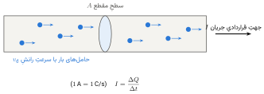
جهتِ قراردادی. پیش از کشفِ الکترون قرار گذاشتند که جریان از قطبِ مثبت به منفی برود. الکترونها بارِ منفی دارند و در جهتِ عکس حرکت میکنند، اما این قرارداد هیچ محاسبهای را خراب نمیکند: جریانِ الکترونها به یک سو با جریانِ بارِ مثبت به سوی دیگر همارز است. در این کتاب همیشه جهتِ قراردادی بهکار میرود. اگر جهتِ فرضیِ یک جریان را در محاسبه اشتباه بگیرید، پاسخ با علامتِ منفی بیرون میآید و این خودش خبرِ درستی است (مثال 6.16).
جریانِ مستقیم و متناوب. جریانِ مستقیم (به انگلیسی direct current، DC) جریانی است که جهتش عوض نمیشود؛ مقدارش ممکن است آهسته تغییر کند، مثلِ جریانِ یک رشتهٔ خورشیدی که با تابش بالا و پایین میرود. جریانِ متناوب (AC) دورهای جهتش را عوض میکند، در شبکهٔ نیروگاهِ P پنجاه بار در ثانیه (فصلِ ۷).
مثال 6.1 (باری که از یک رشته میگذرد) پرسش. جریانِ کارِ یک رشتهٔ ۲۶ ماژولیِ PVM-550 در شرایطِ استاندارد \(I_\text{mp} = 13.11\ \text{A}\) است (برگهٔ دادهٔ ساختگیِ بستهٔ داده، انتشارِ 1.0.0). در یک ساعت چه باری و چند الکترون از هر سطحِ مقطعِ کابلِ رشته میگذرد؟
پاسخ. از معادلهٔ 6.1، \(\Delta Q = I\,\Delta t\):
\[ Q = 13.11\ \text{A} \times 3600\ \text{s} = 47\,196\ \text{C} \]
\[ N = \frac{Q}{e} = \frac{47\,196}{1.602\times 10^{-19}} = 2.95\times 10^{23} \]
یعنی حدودِ سیصد هزار میلیارد میلیارد الکترون.
وارسی: یکاها: آمپر × ثانیه = کولن، درست. مرتبهٔ بزرگی: یک کولن حدودِ \(6\times 10^{18}\) الکترون است و ما حدودِ \(5\times 10^{4}\) کولن داریم، پس حدودِ \(3\times 10^{23}\). عددها با خروجیِ کد (سطرِ E01 در بخش 6.13.1) یکی است.
مثال 6.2 (الکترونها چقدر تند میروند؟) پرسش. کابلِ رشته مسی و با سطحِ مقطعِ 4 mm² است. در مس حدودِ \(n = 8.49\times 10^{28}\) الکترونِ آزاد در هر مترِ مکعب هست (مقدارِ مرجعِ کتابهای درسی). سرعتِ رانشِ الکترونها در جریانِ 13.11 A چقدر است؟
پاسخ. در زمانِ \(\Delta t\)، الکترونها مسافتِ \(v_\text{d}\,\Delta t\) پیش میروند و همهٔ الکترونهای حجمِ \(A\,v_\text{d}\,\Delta t\) از سطح میگذرند. پس \(\Delta Q = n\,e\,A\,v_\text{d}\,\Delta t\) و
\[ I = n\,e\,A\,v_\text{d} \qquad\Rightarrow\qquad v_\text{d} = \frac{I}{n\,e\,A} \tag{6.2}\]
\[ \begin{aligned} v_\text{d} &= \frac{13.11}{\left(8.49\times 10^{28}\right)\left(1.602\times 10^{-19}\right)\left(4\times 10^{-6}\right)} \\ &= 2.41\times 10^{-4}\ \text{m/s} \end{aligned} \]
یعنی کمتر از یکچهارمِ میلیمتر در ثانیه؛ برای پیمودنِ یک متر بیش از یک ساعت! پس چرا وقتی کلید را میزنیم لامپ فوراً روشن میشود؟ چون میدانِ الکتریکی با سرعتی نزدیک به سرعتِ نور در طولِ سیم پخش میشود و همهٔ الکترونهای سیم تقریباً همزمان به حرکت درمیآیند، مانندِ لولهای پر از آب که با فشار دادنِ یک سر، آب از سرِ دیگر بیدرنگ بیرون میزند. محدودیتِ مدل: این مدل فلز را «گازِ الکترون» میبیند؛ برای محاسبهٔ مقاومت کافی است اما برای نیمهرسانا (فصلِ ۱۰) مدلِ دیگری لازم است.
- یک آمپر چند الکترون در ثانیه است؟
- اگر جریانِ یک رشته در طولِ روز از صفر تا 13 A و دوباره تا صفر تغییر کند، آیا هنوز «جریانِ مستقیم» است؟ چرا؟
- اگر سطحِ مقطعِ کابل دو برابر شود و جریان همان بماند، سرعتِ رانش چه میشود؟
- آیا در یک سیمِ حاملِ جریان، الکترونها «مصرف» میشوند؟ چه چیزی مصرف میشود؟
6.2.2 ولتاژ و انرژی
شهود. اگر جریان مانندِ دبیِ آب باشد، ولتاژ مانندِ اختلافِ فشار است: چیزی که آب را در لوله به حرکت درمیآورد. اما قیاسِ آب حدی دارد که باید بشناسیم: ولتاژ دقیقاً انرژی به ازای هر واحدِ بار است، و این تعریف از هر قیاسی کارآمدتر است.
تعریف. ولتاژ یا اختلافِ پتانسیل (به انگلیسی voltage) میانِ دو نقطه، کاری است که میدانِ الکتریکی روی یک واحد بارِ مثبت انجام میدهد وقتی آن را از نقطهٔ اول به نقطهٔ دوم میبرد:
\[ V = \frac{W}{Q} \tag{6.3}\]
یکایش ولت (V) است: یک ولت یعنی یک ژول بر کولن. منبعی مانندِ باتری یا ماژولِ خورشیدی انرژیِ شیمیایی یا نوری را به انرژیِ بارها تبدیل میکند و ولتاژِ دو سرش میگوید به هر کولن بار چقدر انرژی میدهد. در مقاومت، این انرژی به گرما تبدیل میشود و ولتاژِ دو سرِ مقاومت میگوید هر کولن چقدر انرژی از دست داده است.
ولتاژ همیشه میانِ دو نقطه است. «ولتاژِ یک نقطه» فقط وقتی معنا دارد که نقطهٔ مرجعی تعریف کرده باشیم. در تحلیلِ مدار یک گره را مرجع میگیریم و صفر ولت مینامیم و ولتاژِ هر گرهِ دیگر را نسبت به آن میسنجیم. «زمین» در نقشهها معمولاً همین مرجع است، اما زمینِ حفاظتی (اتصال به خاک برای ایمنی) مفهومِ دیگری است که در بخش 6.3.11 و فصلِ ۲۶ میآید. قاطی کردنِ این دو، منشأ خطاهای خطرناک است.
قطبیت. دو سرِ هر منبع یا عنصر را با \(+\) و \(-\) نشان میدهیم: سرِ \(+\) پتانسیلِ بالاتری دارد. اگر دو باتریِ 12 V را سری ببندیم و \(+\) اولی را به \(-\) دومی وصل کنیم، ولتاژِ کل 24 V است؛ اگر یکی را برعکس ببندیم، صفر. در یک رشتهٔ خورشیدیِ ۲۶ ماژولی، یک ماژولِ برعکسبستهشده ولتاژ را دو ماژول کم میکند و میتواند دیودهای میانگذر را زیرِ تنشِ نادرست ببرد؛ وارسیِ قطبیت یکی از آزمونهای پیش از برقدار کردن است (فصلِ ۵۰).
مثال 6.3 (انرژیِ بارهای یک رشته) پرسش. همان 47 196 C بارِ مثال 6.1 از رشتهای با ولتاژِ کارِ \(V_\text{mp} = 26 \times 41.96 = 1091.0\ \text{V}\) عبور کرده است. این بارها چه انرژیای از رشته گرفتهاند؟
پاسخ. از معادلهٔ 6.3، \(W = Q\,V\):
\[ W = 47\,196\ \text{C} \times 1091.0\ \text{V} = 5.149\times 10^{7}\ \text{J} = 51.49\ \text{MJ} \]
و چون \(1\ \text{kWh} = 3.6\ \text{MJ}\)، این همان \(14.30\ \text{kWh}\) است، یعنی دقیقاً انرژیِ یک ساعت کارِ رشته با توانِ \(14.30\ \text{kW}\). وارسی: این سازگاری تصادف نیست؛ در بخشِ بعد میبینیم که توان برابرِ \(V\,I\) است.
- «ولتاژِ این سیم 230 V است» را دقیق کنید: نسبت به چه؟
- یک کولن بار از دو سرِ مقاومتی که ولتاژش 5 V است عبور کرده. چه انرژیای به گرما تبدیل شده است؟
- دو باتریِ 12 V را موازی و با قطبیتِ عکس به هم ببندیم چه میشود؟ (به مقاومتِ درونیِ باتری در بخش 6.3.1 فکر کنید.)
6.2.3 نیروی محرکهٔ الکتریکی و منابعِ آن
شهود. در مقاومت، بارها انرژی از دست میدهند؛ پس جایی باید باشد که بارها انرژی بگیرند و از پتانسیلِ پایین به پتانسیلِ بالا رانده شوند، برخلافِ جهتی که میدانِ الکتریکی بهتنهایی آنها را میبرد. این «پمپِ بار» را منبع مینامیم و انرژیای را که به هر واحدِ بار میدهد نیروی محرکهٔ الکتریکی (به انگلیسی electromotive force, EMF) با نمادِ \(\mathcal{E}\) و یکای ولت. «نیرو» در این نام یادگارِ تاریخی است؛ این کمیت از جنسِ ولتاژ است، نه نیرو.
نیروی محرکه در برابرِ ولتاژِ پایانه. نیروی محرکه آن چیزی است که منبع «در درونش» فراهم میکند؛ ولتاژِ پایانه آن چیزی است که بیرون میبینیم. وقتی جریانی کشیده نمیشود، این دو برابرند (ولتاژِ مدارِ باز). وقتی جریان کشیده میشود، بخشی از نیروی محرکه در مقاومتِ درونیِ منبع از دست میرود (بخش 6.3.1). همهٔ منابعِ نیروگاهِ هیبریدی را میتوان با این دید شناخت:
| منبع | سازوکارِ تبدیل | رفتارِ پایانه | فصل |
|---|---|---|---|
| باتری (سلولِ الکتروشیمیایی) | انرژیِ پیوندِ شیمیایی ← انرژیِ بار | تقریباً منبعِ ولتاژ؛ ولتاژ با وضعیتِ شارژ آهسته تغییر میکند | ۱۹، ۴۵ |
| سلولِ خورشیدی | انرژیِ فوتون ← جفتِ الکترون و حفره، جداشده در پیوندگاه | تقریباً منبعِ جریان، محدود به تابش | ۱۰، ۴۱ |
| ژنراتور (توربینِ بادی) | انرژیِ مکانیکی ← القای الکترومغناطیسی | منبعِ ولتاژِ متناوب با امپدانسِ درونی | ۸، ۱۱ |
| ترموکوپل (حسگرِ دما) | اختلافِ دما ← اثرِ سیبک | منبعِ ولتاژِ بسیار کوچک (میکروولت تا میلیولت) | ۳۴ |
میدان درونِ هادی. در یک هادیِ حاملِ جریان، میدانِ الکتریکیِ کوچکی در طولِ هادی هست که بارها را میراند. اگر هادی یکنواخت باشد، این میدان ثابت است و ولتاژ را بهطورِ خطی در طولِ آن پخش میکند: \(\mathcal{E}_\text{field} = \Delta V/L\). این میدان ربطی به ولتاژِ بالای هادی نسبت به زمین ندارد: در فیدرِ نیروگاهِ P، هادیِ مثبت حدودِ 1091 V با هادیِ منفی فاصله دارد، اما میدانِ «درونِ» هادی که جریان را میراند بسیار کوچک است.
مثال 6.4 (میدانِ درونِ هادیِ فیدر) پرسش. افتِ 14.92 V فیدرِ نیروگاهِ P (مثال 6.25) روی دو هادیِ 180 m پخش شده است. میدانِ الکتریکیِ درونِ هر هادی چقدر است؟ آن را با میدانِ عایقِ میانِ دو هادی در کابلی که دو هادیِ آن حدودِ 2 cm از هم فاصله دارند مقایسه کنید.
پاسخ. درونِ هر هادی: \(14.92/360 = 0.041\ \text{V/m}\). میانِ دو هادی (تقریبِ سادهی صفحههای موازی): \(1091/0.02 \approx 5.5\times 10^{4}\ \text{V/m}\)، یعنی بیش از یک میلیون برابر. درس: میدانِ کوچکِ درونِ هادی جریان را میراند و افتِ ولتاژ میسازد؛ میدانِ بزرگِ درونِ عایق است که باید تحمل شود و طراحیِ عایق، ولتاژِ نامیِ کابل و آزمونِ عایق برای همیناند (بخش 6.2.5 و فصلِ ۲۴).
- چرا ولتاژِ مدارِ بازِ یک منبع با نیروی محرکهٔ آن برابر است؟
- در جدولِ جدول 6.1 کدام منبع به منبعِ جریان نزدیکتر است و چرا این برای حفاظت اهمیت دارد؟
- میدانِ درونِ هادی با چه کمیتهایی تغییر میکند؟ اگر مقطعِ فیدر دو برابر شود چه میشود؟
6.2.4 مقاومت، مقاومتِ ویژه و قانونِ اُهم
شهود. حرکتِ الکترونها در فلز بیمانع نیست: به ارتعاشِ اتمها و ناخالصیها برخورد میکنند و بخشی از انرژیشان را بهصورتِ گرما به شبکهٔ اتمی میدهند. مقاومت (به انگلیسی resistance) اندازهٔ همین مانع است: برای راندنِ یک جریانِ معین، چقدر ولتاژ لازم است.
قانونِ اُهم. در بسیاری از مواد، بهویژه فلزها در دمای ثابت، ولتاژ و جریان با هم متناسباند:
\[ V = R\,I \tag{6.4}\]
ضریبِ تناسب، \(R\)، مقاومت است و یکایش اُهم (\(\Omega\)): یک اُهم یعنی یک ولت بر آمپر. عکسِ مقاومت، رسانایی \(G = 1/R\) است با یکای زیمنس (S). شکل 6.2 سادهترین مدار را نشان میدهد: منبع، مقاومت، و جای درستِ دو ابزار: آمپرمتر در مسیرِ جریان (سری) و ولتمتر دو سرِ عنصر (موازی).
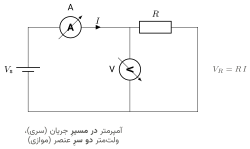
قانونِ اُهم قانونِ طبیعت نیست. رابطهٔ \(V = RI\) تعریفِ \(R\) است و فقط برای موادی که آن را رعایت میکنند («اُهمی») \(R\) را ثابت میکند. یک دیود، یک سلولِ خورشیدی و یک قوسِ الکتریکی اُهمی نیستند: نسبتِ ولتاژ به جریانشان با نقطهٔ کار عوض میشود. حتی یک سیمِ مسی هم وقتی داغ شود مقاومتش بالا میرود (بخش 6.2.4.1). پس هر بار که \(V = RI\) مینویسیم، در واقع فرض کردهایم «در این بازه، \(R\) تقریباً ثابت است».
مقاومتِ یک هادی. مقاومتِ یک هادیِ یکنواخت با طولش متناسب و با سطحِ مقطعش نسبتِ عکس دارد:
\[ R = \rho\,\frac{L}{A} \tag{6.5}\]
که \(\rho\) مقاومتِ ویژه (به انگلیسی resistivity) ماده است با یکای \(\Omega\cdot\text{m}\)، \(L\) طول و \(A\) سطحِ مقطع. استخراجِ شهودی: دو سیمِ یکسان را پشتِ هم بگذارید؛ جریان باید از هر دو بگذرد و ولتاژ دو برابر لازم است، پس مقاومت با طول متناسب است. دو سیمِ یکسان را کنارِ هم بگذارید؛ جریان میانشان تقسیم میشود و برای همان جریانِ کل نصفِ ولتاژ کافی است، پس مقاومت با سطحِ مقطع نسبتِ عکس دارد. فرضها: جریان بهطورِ یکنواخت در مقطع پخش است (در DC درست است؛ در AC با بسامدِ بالا، اثرِ پوستی آن را به هم میزند، فصلِ ۲۴)، و ماده و دما در طولِ هادی یکسان است.
جدول 6.2 مقدارهای مرجعِ کتاب را برای دو هادیِ اصلیِ نیروگاه میدهد. اینها مقدارهای فلزِ خالص در 20 °C از منابعِ درسیاند؛ استانداردهای کابل برای هادیهای واقعی عددهای کمی متفاوت میدهند که در فصلِ ۲۴ بهکار میروند.
| ماده | \(\rho_{20}\) (\(\Omega\cdot\text{m}\)) | \(\alpha\) (\(\text{K}^{-1}\)) | چگالی (\(\text{g/cm}^3\)) | وضعیت |
|---|---|---|---|---|
| مس | \(1.72\times 10^{-8}\) | \(0.00393\) | \(8.96\) | مقدارِ مرجعِ درسی |
| آلومینیوم | \(2.82\times 10^{-8}\) | \(0.00403\) | \(2.70\) | مقدارِ مرجعِ درسی |
مثال 6.5 (مقاومتِ یک کابلِ رشته) پرسش. مقاومتِ 100 m کابلِ مسیِ 4 mm² در 20 °C چقدر است؟ اگر همین کابل آلومینیومی باشد چه؟
پاسخ. نخست یکاها: \(A = 4\ \text{mm}^2 = 4\times 10^{-6}\ \text{m}^2\). از معادلهٔ 6.5:
\[ \begin{aligned} R_\text{Cu} &= 1.72\times 10^{-8} \times \frac{100}{4\times 10^{-6}} = 0.430\ \Omega \\ R_\text{Al} &= 2.82\times 10^{-8} \times \frac{100}{4\times 10^{-6}} = 0.705\ \Omega \end{aligned} \]
وارسی: قاعدهٔ سرانگشتیِ مفید: مسِ 1 mm² حدودِ 17 mΩ بر متر است؛ پس 4 mm² حدودِ 4.3 mΩ/m و 100 m حدودِ 0.43 Ω. خطای رایج: گذاشتنِ \(4\) بهجای \(4\times 10^{-6}\) در مخرج، که پاسخ را یکمیلیون بار کوچک میکند (بخش 6.5.2).
مثال 6.6 (چرا کابلهای بزرگ اغلب آلومینیومیاند؟) پرسش. برای آنکه یک کابلِ آلومینیومی همان مقاومتِ کابلِ مسی را داشته باشد، سطحِ مقطعش چند برابر و جرمش چند برابر باید باشد؟
پاسخ. برای \(R\) و \(L\) یکسان، از معادلهٔ 6.5: \(A_\text{Al}/A_\text{Cu} = \rho_\text{Al}/\rho_\text{Cu} = 2.82/1.72 = 1.640\). جرم برابرِ چگالی × حجم است و حجم با سطحِ مقطع متناسب است:
\[ \frac{m_\text{Al}}{m_\text{Cu}} = \frac{A_\text{Al}}{A_\text{Cu}}\cdot\frac{d_\text{Al}}{d_\text{Cu}} = 1.640 \times \frac{2.70}{8.96} = 0.494 \]
سطحِ مقطعِ کابلِ آلومینیومیِ همارز ۶۴ درصد بیشتر است (قطرش حدودِ ۲۸ درصد بیشتر) اما نصفِ وزنِ کابلِ مسی را دارد، و چون آلومینیوم ارزانتر از مس است، برای فیدرهای بزرگ و خطوطِ هوایی اغلب اقتصادیتر است. بهایش: کابلِ کلفتتر جای بیشتری در کانال میگیرد، اتصالِ آلومینیوم حساستر است (لایهٔ اکسید، خزش زیرِ فشار و ناسازگاری با مس، که اتصالدهندهٔ ویژه میخواهد) و کارِ دقیقتری در نصب لازم دارد (فصلهای ۲۴ و ۴۶). وضعیت: نسبتِ جرم سادهسازی است؛ عایق و غلافِ کابل را نادیده گرفتهایم.
6.2.4.1 مقاومت و دما
مقاومتِ فلزها با دما بالا میرود، چون اتمها تندتر ارتعاش میکنند و الکترونها بیشتر پراکنده میشوند. در بازهٔ دماهای کاری، یک مدلِ خطی کافی است:
\[ \rho(T) = \rho_{20}\,\bigl[1 + \alpha\,(T - 20\,^\circ\text{C})\bigr] \tag{6.6}\]
که \(\alpha\) ضریبِ دماییِ مقاومت است (جدول 6.2). برای مس و آلومینیوم \(\alpha\) حدودِ \(0.004\ \text{K}^{-1}\) است: هر 10 °C گرمای بیشتر، حدودِ چهار درصد مقاومتِ بیشتر. شکل 6.3 این را نشان میدهد. حدودِ اعتبار: مدلِ خطی تقریباً از −50 تا +200 °C برای فلزهای خالص خوب است؛ بیرون از آن و برای آلیاژها باید جدولِ داده یا مدلِ دقیقتر بهکار برد.
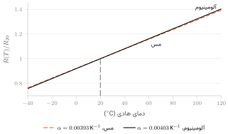
همین چند درصد در کابلهای نیروگاه اهمیت دارد: کابلی که زیرِ آفتاب یا در کانالِ پرکابل به 70 °C میرسد، حدودِ 20 % مقاومتِ بیشتری از مقدارِ جدولِ 20 °C دارد، پس افتِ ولتاژ و تلفاتش هم 20 % بیشتر است. در محاسبهٔ فیدرِ نیروگاهِ P دمای هادی را 50 °C فرض میکنیم (فرضِ A-019 در جدول 6.6).
مثال 6.7 (اُهمی و غیرِاُهمی) پرسش. (الف) منبعی 12 V به مقاومتِ 4 Ω وصل است؛ جریان چقدر است؟ (ب) یک رشتهٔ خورشیدی در یک لحظه با ولتاژِ 1040.8 V جریانِ 13.01 A میدهد و در لحظهٔ دیگر با 558.9 V جریانِ 13.97 A. «مقاومتِ رشته» چقدر است؟
پاسخ. (الف) از معادلهٔ 6.4، \(I = V/R = 12/4 = 3\ \text{A}\). (ب) نسبتِ \(V/I\) در لحظهٔ اول 80 Ω و در لحظهٔ دوم 40 Ω است. اینها مقاومتِ باری است که به رشته وصل کردهایم (مثال 6.24)، نه خاصیتِ رشته. رشتهٔ خورشیدی اُهمی نیست و نمیتوان یک «مقاومت» به آن نسبت داد؛ رفتارش را منحنیِ جریان–ولتاژ توصیف میکند (بخش 6.3.1).
- اگر طولِ یک کابل سه برابر و سطحِ مقطعش دو برابر شود، مقاومتش چند برابر میشود؟
- مقاومتِ یک هادیِ مسی از 20 تا 90 °C چند درصد بالا میرود؟
- چرا «قانونِ اُهم» را بهتر است «مدلِ اُهمی» بنامیم؟
- رسانایی 0.5 S یعنی چه مقاومتی؟
6.2.5 رسانا، نیمهرسانا، عایق: طیفِ مقاومتِ ویژه
شهود. در فلز، الکترونهای آزاد فراواناند؛ در عایق تقریباً هیچ الکترونِ آزادی نیست؛ در نیمهرسانا، تعدادِ حاملها اندک است اما با دما، نور و ناخالصی بهشدت تغییر میکند. نتیجه، گسترهٔ شگفتانگیزی است: مقاومتِ ویژهٔ بهترین عایقِ کابل حدودِ \(10^{24}\) برابرِ مس است (شکل 6.4). هیچ کمیتِ فیزیکیِ دیگری در مهندسیِ روزمره چنین گسترهای ندارد.
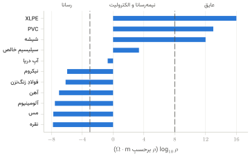
سه نتیجهٔ مهندسی از این شکل:
- نقره، مس و آلومینیوم بهترین رساناهای مقرونبهصرفهاند؛ نقره کمی بهتر از مس است اما فقط در پوششِ تماسها بهکار میرود (فصلِ ۴۶).
- فولاد ده تا چهل برابر مقاومتِ مس را دارد؛ سازههای فولادی جریانِ خطا را حمل میکنند اما هادیِ خوبی برای انتقالِ انرژی نیستند. همین فولاد در زمینکردن نقش دارد (فصلِ ۲۶).
- آب و خاک میانِ رسانا و عایقاند و مقدارشان به شوری و رطوبت بسیار وابسته است: خاکِ مرطوب جریانِ نشتی را میبرد و همین هم دلیلِ خطرِ برقگرفتگی در زمینِ خیس است و هم مبنای سامانهٔ زمینکردن (فصلهای ۲۶ و ۲۹).
مقاومتِ عایقِ یک کابل. عایق هم مقاومتِ محدودی دارد و جریانِ بسیار کوچکی از هادی به بیرون نشت میکند. جریانِ نشتی شعاعی است، از هادی به سمتِ سطحِ بیرونیِ عایق (شکل 6.5). عایق را به حلقههای نازکی به ضخامتِ \(\mathrm{d}r\) تقسیم میکنیم. جریان از هر حلقه به ترتیب میگذرد، پس حلقهها سریاند. مقاومتِ یک حلقه، با «طولِ» \(\mathrm{d}r\) در جهتِ جریان و «سطحِ» \(2\pi r L\):
\[ \mathrm{d}R = \frac{\rho\,\mathrm{d}r}{2\pi r L} \qquad\Rightarrow\qquad R_\text{ins} = \int_{r_1}^{r_2} \frac{\rho\,\mathrm{d}r}{2\pi r L} = \frac{\rho}{2\pi L}\,\ln\frac{r_2}{r_1} \tag{6.7}\]
دو نکتهٔ شگفت. (۱) مقاومتِ عایق با طولِ کابل نسبتِ عکس دارد: کابلِ بلندتر مسیرهای نشتیِ بیشتری موازی کنارِ هم دارد. این درست برعکسِ مقاومتِ هادی است. (۲) ضخامتِ عایق فقط با لگاریتم اثر دارد: دو برابر کردنِ ضخامت، مقاومتِ عایق را دو برابر نمیکند.
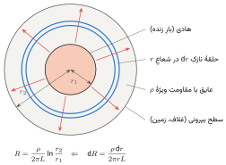
مثال 6.8 (مقاومتِ عایقِ کابل و آرایه) پرسش. (الف) مقاومتِ عایقِ 100 m کابلِ رشته را با شعاعِ هادیِ 1.13 mm (مقطعِ 4 mm²)، شعاعِ بیرونیِ 2.9 mm و مقاومتِ ویژهٔ عایقِ \(10^{13}\ \Omega\cdot\text{m}\) (فرضی، محافظهکارانه برای عایقِ کهنه) حساب کنید. (ب) اگر مقاومتِ عایقِ هر ماژول نسبت به قابش در هوای خشک 1 GΩ و در صبحِ مرطوب 50 MΩ باشد (هر دو فرضی)، مقاومتِ عایقِ کلِ آرایهٔ یک اینورتر (هفت جعبهٔ تجمیع، ۴۳۶۸ ماژول) و کلِ نیروگاه چقدر است؟
پاسخ. (الف) از معادلهٔ 6.7:
\[ R_\text{ins} = \frac{10^{13}}{2\pi \times 100}\,\ln\frac{2.9}{1.13} = 1.59\times 10^{10} \times 0.942 = 1.5\times 10^{10}\ \Omega \]
یعنی حدودِ 15 GΩ. (ب) مسیرهای نشتیِ ماژولها همه میانِ مدار و قابهای زمینشدهاند، پس موازیاند و مقاومتِ کل برابرِ مقاومتِ یک ماژول تقسیم بر تعداد است:
100 m PV cable, rho_ins = 1e13 ohm m (assumed), r1 = 1.13 mm, r2 = 2.9 mm:
R_ins = 15.0 GOhm
modules dry: 1000 MOhm each (assumed); 4368 modules on one inverter -> 228.9
kOhm; whole plant (109,096) -> 9.17 kOhm
modules wet morning: 50 MOhm each (assumed); 4368 modules on one inverter ->
11.4 kOhm; whole plant (109,096) -> 0.46 kOhmدر صبحِ مرطوب، مقاومتِ عایقِ آرایهٔ یک اینورتر از حدودِ 229 kΩ به 11 kΩ میافتد و برای کلِ نیروگاه زیرِ 1 kΩ میرسد، بی آنکه هیچ عیبی در کار باشد. پیامدها: (۱) پایشِ عایق باید آستانهٔ هشدار را با اندازهٔ آرایه تنظیم کند؛ آستانهٔ مناسب برای یک خانه برای یک نیروگاه بیمعناست (آستانههای واقعی را اینورتر و استانداردِ حاکم میدهند)؛ (۲) هشدارهای عایقِ صبحگاهی که با خشک شدنِ هوا برطرف میشوند رایجاند، اما «رایج» به معنای «بیخطر» نیست: یک اتصالدهندهٔ آبخورده هم همین الگو را دارد (فصلِ ۵۲)؛ (۳) تقسیمِ آرایه به بخشهای کوچکتر برای پایش، یافتنِ عیب را آسانتر میکند.
6.2.6 عناصرِ غیرِاُهمی
بسیاری از عناصرِ مهمِ نیروگاه عمداً غیرِاُهمیاند؛ رفتارِ غیرخطیشان دقیقاً همان کاری است که از آنها میخواهیم:
- دیود (به انگلیسی diode) جریان را در یک جهت عبور میدهد و در جهتِ دیگر میبندد. رابطهٔ جریان–ولتاژِ آن را قانونِ شاکلی میدهد: \(I = I_\text{s}\,\bigl(e^{V/(n V_\text{T})} - 1\bigr)\) که \(V_\text{T} = kT/q \approx 25.7\ \text{mV}\) در 25 °C ولتاژِ گرمایی است. این رابطه در فصلِ ۱۰ هستهٔ مدلِ سلولِ خورشیدی میشود (شکل 6.6). دیودها در ماژول بهعنوانِ دیودِ میانگذر (فصلِ ۱۰) و در اینورتر و یکسوساز (فصلِ ۹) بهکار میروند.
- ترمیستور: مقاومتی که با دما بهشدت تغییر میکند؛ نوعِ NTC با گرما کممقاومت و نوعِ PTC پرمقاومت میشود. در حسگرهای دما و محدودکردنِ جریانِ هجومی.
- وریستور (مقاومتِ وابسته به ولتاژ): تا ولتاژِ معینی تقریباً عایق است و بالای آن بهشدت رسانا میشود؛ قلبِ بسیاری از برقگیرها (بخش 6.4.8 و فصلِ ۲۶).
- المانِ فیوز: تا گرم نشده تقریباً اُهمی است؛ با جریانِ زیاد گرم و ذوب میشود و مدار را باز میکند.
- قوس: هر چه جریانش بیشتر شود، ولتاژش کمتر یا ثابت میماند (رفتارِ «مقاومتِ منفی»)، که پایداری و خاموش کردنش را دشوار میکند (بخش 6.4.6).
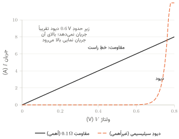
مثال 6.9 (دیودِ مسدودکننده در رشته: ارزشش را دارد؟) پرسش. در گذشته گاهی در هر رشته یک دیودِ مسدودکننده میگذاشتند تا جریانِ برگشتیِ رشتههای دیگر (مثال 6.37) را ببندد. اگر افتِ مستقیمِ دیود 0.7 V باشد، در جریانِ 13.11 A چه تلفاتی دارد؟ برای ۴۱۹۶ رشتهٔ نیروگاهِ P چه؟ و دو برابر شدنِ جریانِ دیود چقدر ولتاژِ بیشتر میخواهد؟
پاسخ.
blocking diode, forward drop 0.7 V at 13.11 A: 9.18 W per string
4196 strings: 38.5 kW = 0.064 % of the string voltage
diode current ratio for +59.2 mV: 10.02هر رشته 9.2 W و کلِ نیروگاه 38.5 kW: پیوسته در همهٔ ساعتهای تولید، به اضافهٔ گرمایی که باید از جعبهٔ تجمیع بیرون برود و یک قطعهٔ دیگر که ممکن است خراب شود. فیوزِ رشته (1) همان حفاظت را تقریباً بیتلفات میدهد؛ به همین دلیل دیودِ مسدودکننده در نیروگاههای امروزی رایج نیست. ستونِ آخرِ خروجی نشان میدهد چرا دیود «تقریباً» ولتاژِ ثابتی دارد: برای ده برابر کردنِ جریان فقط حدودِ 59 mV ولتاژِ بیشتر لازم است.
- چرا مقاومتِ عایقِ یک کابل با طولش کم میشود، در حالی که مقاومتِ هادیاش زیاد میشود؟
- اگر ضخامتِ عایق دو برابر شود (\(r_2\) از 2.9 به 4.67 mm)، مقاومتِ عایق چند برابر میشود؟
- چرا وریستور برای برقگیر مناسب است اما برای محدود کردنِ جریانِ پیوسته نه؟
6.2.7 توان و انرژی
استخراج. از معادلهٔ 6.3، هر کولن بار که از اختلافِ پتانسیلِ \(V\) بگذرد، انرژیِ \(V\) ژول مبادله میکند. در هر ثانیه \(I\) کولن میگذرد. پس انرژی در واحدِ زمان، یعنی توان، چنین است:
\[ P = V\,I \tag{6.8}\]
و با جایگذاریِ قانونِ اُهم برای یک مقاومت، دو شکلِ دیگر:
\[ P = R\,I^2 = \frac{V^2}{R} \tag{6.9}\]
یکای توان وات (W) است: یک ژول در ثانیه، یا یک ولت × یک آمپر. معادلهٔ 6.8 برای هر عنصر درست است، اُهمی یا نه؛ معادلهٔ 6.9 فقط برای مقاومت. قراردادِ علامت: اگر جریان از سرِ \(+\) یک عنصر وارد شود، عنصر توان جذب میکند (\(P>0\)، مثلِ بار)؛ اگر از سرِ \(+\) خارج شود، توان تحویل میدهد (مثلِ منبع). این قرارداد در مثال 6.16 بهکار میآید.
انرژی حاصلِ توان در زمان است (معادلهٔ 1.1 در فصلِ ۱): \(E = P\,t\) برای توانِ ثابت، و در حالتِ کلی سطحِ زیرِ نمودارِ توان. در صنعتِ برق انرژی را با واتساعت میشمارند: \(1\ \text{Wh} = 3600\ \text{J}\).
بازده (به انگلیسی efficiency)، با نمادِ \(\eta\)، نسبتِ توانِ مفیدِ خروجی به توانِ ورودی است: \(\eta = P_\text{out}/P_\text{in}\). هر تبدیل و هر انتقال بازدهی کمتر از یک دارد؛ باقیِ انرژی معمولاً به گرما تبدیل میشود.
مثال 6.10 (توانِ رشته، گرمای مقاومت) پرسش. (الف) توانِ رشتهٔ ۲۶ ماژولی در شرایطِ استاندارد چقدر است؟ (ب) جریانِ 3 A در مقاومتِ 4 Ω چه گرمایی تولید میکند؟ اگر جریان دو برابر شود چه؟
پاسخ. (الف) \(P = 1091.0\ \text{V} \times 13.11\ \text{A} = 14\,303\ \text{W} = 14.30\ \text{kW}\)، که با \(26 \times 550\ \text{W} = 14.30\ \text{kW}\) برگهٔ داده میخواند. (ب) \(P = R I^2 = 4 \times 3^2 = 36\ \text{W}\)؛ با 6 A، \(4 \times 36 = 144\ \text{W}\): دو برابر شدنِ جریان، گرما را چهار برابر میکند. این مهمترین نتیجهٔ عملیِ این بخش است و دلیلِ اینکه نیروگاهها توان را با ولتاژِ بالا و جریانِ کم منتقل میکنند (بخش 6.6 و فصلِ ۲۵).
مثال 6.11 (انرژی و بازده) پرسش. یک گرمکنِ 2 kW سه ساعت کار میکند. انرژیِ مصرفی چقدر است؟ اگر فیدری 343.2 kW را با 4.69 kW تلفات منتقل کند، بازدهش چیست؟
پاسخ. \(E = 2\ \text{kW} \times 3\ \text{h} = 6\ \text{kWh} = 21.6\ \text{MJ}\). بازدهِ فیدر: \(\eta = (343.2 - 4.69)/343.2 = 0.9863\)، یعنی 98.63 %. دقت: تلفاتِ 1.37 % در ساعتِ اوج است؛ تلفاتِ انرژیِ سالانه کمتر است، چون تلفات با مجذورِ جریان میرود و بیشترِ ساعتها جریان کمتر از اوج است (مثال 6.27).
- چرا معادلهٔ 6.8 برای دیود هم درست است اما معادلهٔ 6.9 نه؟
- لامپی 100 W با 230 V کار میکند. جریان و مقاومتش (در حالِ کار) چقدر است؟
- یک نیروگاه 1 MW را با 1 kV یا با 10 kV منتقل میکند و مقاومتِ مسیر یکی است. نسبتِ تلفاتِ دو حالت چقدر است؟
6.2.8 انرژی بهعنوانِ سطحِ زیرِ منحنیِ توان
توانِ نیروگاههای خورشیدی و بادی ثابت نیست؛ پس \(E = Pt\) کافی نیست. اگر توان تابعی از زمان باشد، انرژی در یک بازه انتگرالِ توان است:
\[ E = \int_{t_1}^{t_2} P(t)\,\mathrm{d}t \tag{6.10}\]
یعنی سطحِ زیرِ نمودارِ توان (شکل 6.7). در عمل، دادهها نمونههای گسستهاند (مثلاً مقدارِ میانگینِ هر ساعت در بستهٔ داده) و انتگرال با جمع تقریب زده میشود. فصلِ ۳ روشهای عددیِ انتگرالگیری را میسازد؛ اینجا یک نمونهٔ ملموس را میبینیم.
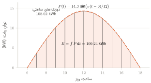
مثال 6.12 (انرژیِ یک روزِ آفتابی) پرسش. توانِ یک رشته در یک روزِ صافِ آرمانی را با \(P(t) = 14.3\,\sin\bigl(\pi(t - 6)/12\bigr)\) کیلووات از ساعتِ ۶ تا ۱۸ مدل کنید (مدلِ آموزشی). انرژیِ روز را دقیق حساب کنید و با جمعِ نمونههای ساعتی به روشهای مستطیل، ذوزنقه و سیمپسون مقایسه کنید.
پاسخِ دقیق. با تغییرِ متغیرِ \(u = \pi(t - 6)/12\):
\[ E = 14.3 \int_{6}^{18} \sin\frac{\pi(t - 6)}{12}\,\mathrm{d}t = 14.3 \times \frac{12}{\pi}\int_{0}^{\pi}\sin u\,\mathrm{d}u = 14.3 \times \frac{24}{\pi} = 109.24\ \text{kWh} \]
تقریبهای عددی (برنامهٔ همراه):
P(t) = 14.30 kW sin(pi (t - 6)/12), 06:00 to 18:00
exact integral = 14.30 x 24/pi = 109.244 kWh
hourly samples: left rectangles 108.619, trapezoid 108.619, Simpson 109.247
kWh
errors: rectangles -0.625, trapezoid -0.625, Simpson +0.0029 kWh
data pack summer day, one string, screening model: 106.9 kWh (sum of hourly
means x 1 h)مستطیلهای چپ و ذوزنقه اینجا یک عدد دادهاند، چون توان در دو سرِ بازه صفر است و دو روش فقط در وزنِ نقطههای دو سر فرق دارند. خطای آنها 0.6 kWh (حدودِ 0.6 %) است و خطای سیمپسون، که منحنی را با سهمیها تقریب میزند، حدودِ 0.003 kWh. درسِ مهم دربارهٔ دادهٔ ساعتی: اگر داده مقدارِ لحظهایِ سرِ ساعت باشد، روشِ انتگرالگیری مهم است؛ اگر میانگینِ ساعت باشد (مانندِ بستهٔ دادهٔ نیروگاهِ P، بخش 1.4.3)، جمعِ میانگینها ضربدر یک ساعت دقیقاً انرژیِ ساعت است و هیچ تقریبِ ذوزنقهای لازم نیست. خواندنِ واژهنامهٔ داده پیش از محاسبه همین را روشن میکند (فصلِ ۵). سطرِ آخرِ خروجی همین کار را برای روزِ تابستانیِ بسته انجام داده است: 106.9 kWh برای یک رشته با مدلِ غربالگری.
- «ساعتِ آفتابیِ معادل» یک روز را تعریف کنید: انرژیِ روز تقسیم بر توانِ نامی. برای مدلِ سینوسیِ بالا چند ساعت است؟ (\(24/\pi \approx 7.64\))
- چرا روشِ مستطیلها با نمونهبرداری از وسطِ هر بازه (روشِ نقطهٔ میانی) از مستطیلِ چپ دقیقتر است؟
- اگر توانِ یک توربین را هر ده دقیقه یک بار لحظهای ثبت کنیم، برای انرژیِ روزانه کدام روش را پیشنهاد میکنید؟
6.2.9 مدارهای سری و موازی
سری. عناصری که پشتِ سرِ هم و بیانشعاب بسته شدهاند، جریانِ یکسانی دارند و ولتاژهایشان جمع میشود (شکل 6.8، چپ). مقاومتِ معادلِ مقاومتهای سری:
\[ R_\text{eq} = R_1 + R_2 + \dots + R_n \tag{6.11}\]
موازی. عناصری که دو سرشان به دو گرهِ مشترک بسته است، ولتاژِ یکسانی دارند و جریانهایشان جمع میشود (شکل 6.8، راست). رساناییها جمع میشوند:
\[ \frac{1}{R_\text{eq}} = \frac{1}{R_1} + \frac{1}{R_2} + \dots + \frac{1}{R_n} \tag{6.12}\]
مقاومتِ معادلِ موازی همیشه کمتر از کوچکترین مقاومتِ شاخههاست؛ این یک وارسیِ سریع است. برای دو مقاومت: \(R_\text{eq} = R_1 R_2/(R_1 + R_2)\) («حاصلضرب بر حاصلجمع»).
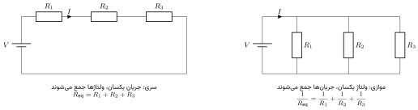
تقسیمکنندهٔ ولتاژ و جریان. در دو مقاومتِ سری با ولتاژِ کلِ \(V\)، ولتاژِ دو سرِ هر کدام با مقاومتش متناسب است: \(V_2 = V\,R_2/(R_1 + R_2)\). در دو مقاومتِ موازی با جریانِ کلِ \(I\)، جریانِ هر شاخه با رساناییاش متناسب است: \(I_1 = I\,R_2/(R_1 + R_2)\)، یعنی شاخهٔ کممقاومتتر جریانِ بیشتری میبرد.
مثال 6.13 (سادهسازی و تقسیم) پرسش. (الف) مقاومتِ معادلِ 4، 6 و 12 Ω را در حالتِ سری و موازی بیابید. (ب) منبعِ 12 V دو سرِ 4 Ω و 8 Ω سری است؛ ولتاژِ دو سرِ 8 Ω چقدر است؟
پاسخ. (الف) سری: \(4 + 6 + 12 = 22\ \Omega\). موازی: \(1/R_\text{eq} = 1/4 + 1/6 + 1/12 = (3 + 2 + 1)/12 = 1/2\)، پس \(R_\text{eq} = 2\ \Omega\)، کمتر از 4 Ω، درست. (ب) \(V_2 = 12 \times 8/(4 + 8) = 8\ \text{V}\).
مثال 6.14 (ماژولهای سری، رشتههای موازی) پرسش. در نیروگاهِ P، ۲۶ ماژول در هر رشته سریاند و ۲۴ رشته در جعبهٔ تجمیع موازی میشوند (فرضهای A-014 و A-015). ولتاژ و جریانِ خروجیِ جعبهٔ تجمیع در شرایطِ استاندارد چقدر است؟
پاسخ. سری: جریانِ یکسان، ولتاژها جمع: \(V = 26 \times 41.96 = 1091.0\ \text{V}\)، \(I = 13.11\ \text{A}\). موازی: ولتاژِ یکسان، جریانها جمع: \(I = 24 \times 13.11 = 314.64\ \text{A}\)، \(V = 1091.0\ \text{V}\). توان: \(1091.0 \times 314.64 = 343.3\ \text{kW}\)، که با \(24 \times 26 \times 550\ \text{W} = 343.2\ \text{kW}\) در حدِ گردکردن میخواند. محدودیتِ مدل: فرض کردهایم همهٔ رشتهها دقیقاً یکساناند. در واقعیت ولتاژِ رشتهها اندکی فرق دارد و رشتههای موازی، ولتاژِ مشترکی را میپذیرند که برای هیچکدام بهینه نیست؛ این «ناهمسانی» در فصلِ ۱۰ حساب میشود.
- سه مقاومتِ 30 Ω موازی چه معادلی دارند؟ بیحساب پاسخ دهید.
- در یک تقسیمکنندهٔ ولتاژ، اگر مقاومتِ پایینی صفر شود، ولتاژِ دو سرش چه میشود؟ اگر بینهایت شود؟
- اگر یکی از ۲۴ رشته قطع شود، جریانِ خروجیِ جعبهٔ تجمیع چند درصد کم میشود؟
6.2.10 پلِ وتستون و اندازهگیریِ دما با مقاومت
دو تقسیمکنندهٔ ولتاژ که کنارِ هم به یک منبع وصل شدهاند، پلِ وتستون (به انگلیسی Wheatstone bridge) را میسازند (شکل 6.9). خروجی، اختلافِ ولتاژِ نقطههای وسطِ دو تقسیمکننده است:
\[ V_\text{out} = V_\text{e}\left(\frac{R_t}{R_3 + R_t} - \frac{R_2}{R_1 + R_2}\right) \tag{6.13}\]
و وقتی صفر است که دو تقسیمکننده یک نسبت داشته باشند: \(R_t/R_3 = R_2/R_1\). چرا مفید است؟ چون پل، تغییرِ کوچکِ یک مقاومت را به ولتاژی تبدیل میکند که از صفر شروع میشود؛ اندازهگیریِ یک ولتاژِ کوچک نزدیکِ صفر بسیار دقیقتر از اندازهگیریِ یک ولتاژِ بزرگ و یافتنِ تغییرِ کوچکِ آن است (درسِ مثال 6.35 از زاویهٔ دیگر).
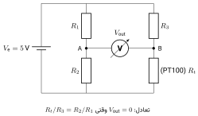
دماسنجِ مقاومتی. مقاومتِ پلاتین با دما تقریباً خطی تغییر میکند. حسگرِ رایجِ PT100 در 0 °C دقیقاً 100 Ω است و با مدلِ خطیِ \(R(T) = 100\,(1 + 0.00385\,T)\) تقریب زده میشود (همان معادلهٔ 6.6، با ضریبِ ویژهٔ پلاتینِ حسگری). این حسگرها در نیروگاه همهجا هستند: دمای سیمپیچ و روغنِ ترانسفورماتور (فصلِ ۲۵)، یاتاقان و ژنراتورِ توربین (فصلِ ۱۱)، دمای ماژولِ مرجع در ایستگاهِ هواشناسی (فصلِ ۱۲) و دمای قفسههای باتری (فصلِ ۱۹).
مثال 6.15 (پل با حسگرِ دما) پرسش. در شکل 6.9، \(V_\text{e} = 5\ \text{V}\) و \(R_1 = R_2 = R_3 = 100\ \Omega\) است. خروجیِ پل را در 0، 25، 50 و 100 °C بیابید و با یک مدلِ «خطی» مقایسه کنید که خروجی را متناسب با تغییرِ مقاومت فرض میکند.
پاسخ. در 50 °C: \(R_t = 100(1 + 0.00385 \times 50) = 119.25\ \Omega\) و از معادلهٔ 6.13: \(V_\text{out} = 5\,(119.25/219.25 - 0.5) = 219.5\ \text{mV}\). برای همهٔ دماها:
T = 0 C: R = 100.00 ohm, output 0.00 mV, linear model 0.00 mV
T = 25 C: R = 109.62 ohm, output 114.79 mV, linear model 120.31 mV
T = 50 C: R = 119.25 ohm, output 219.50 mV, linear model 240.62 mV
T = 100 C: R = 138.50 ohm, output 403.56 mV, linear model 481.25 mVخروجی با دما بالا میرود اما خطی نیست: در 100 °C، مدلِ خطی ۱۹ درصد بیشتر از واقع میگوید. پس سامانهٔ اندازهگیری یا باید از رابطهٔ دقیقِ معادلهٔ 6.13 استفاده کند، یا حسگر را با منبعِ جریانِ ثابت تغذیه کند تا ولتاژِ دو سرِ حسگر مستقیماً با مقاومتش متناسب باشد؛ راهِ دوم در ابزارِ دقیقِ صنعتی رایج است (فصلهای ۳۴ و ۴۸). نکتهٔ سیمکشی: مقاومتِ سیمهای رابط به \(R_t\) اضافه میشود؛ 1 Ω مقاومتِ سیم یعنی حدودِ 2.6 °C خطا. اتصالِ سهسیمه یا چهارسیمه این خطا را حذف میکند (همان ایدهٔ بخش 6.3.9).
شبکههای نردبانی و تبدیلِ ستاره–مثلث. بسیاری از شبکهها با کاربردِ پیاپیِ قواعدِ سری و موازی ساده میشوند: در یک شبکهٔ نردبانی از انتهای دور شروع کنید و پلهپله به سمتِ منبع ترکیب کنید. اما پلِ نامتعادل را نمیتوان با سری و موازی ساده کرد؛ برای آن یا روشِ ولتاژِ گره (بخش 6.2.11) را بهکار میبریم، یا سه مقاومتِ «مثلث» را به سه مقاومتِ «ستاره»ی معادل تبدیل میکنیم:
\[ \begin{aligned} R_a &= \frac{R_{ab}R_{ca}}{R_{ab} + R_{bc} + R_{ca}} \\ R_b &= \frac{R_{ab}R_{bc}}{R_{ab} + R_{bc} + R_{ca}} \\ R_c &= \frac{R_{bc}R_{ca}}{R_{ab} + R_{bc} + R_{ca}} \end{aligned} \tag{6.14}\]
که \(R_a\) مقاومتِ ستارهای است که به گرهِ \(a\) وصل است. این تبدیل در فصلِ ۷ برای بارهای سهفاز اهمیتِ زیادی پیدا میکند. توصیهٔ عملی: در هر مداری که با سری و موازی ساده نمیشود، روشِ ولتاژِ گره و رایانه همیشه کار میکنند؛ تبدیلِ ستاره–مثلث ابزارِ فهم است، نه ضرورتِ محاسبه.
- چرا پلِ متعادل نسبت به تغییرِ ولتاژِ منبع حساس نیست؟
- در مثال 6.15 اگر سیمهای حسگر 0.5 Ω مقاومت داشته باشند، دمای نشاندادهشده در 25 °C چند درجه خطا دارد؟
- سه مقاومتِ مثلثِ برابرِ 30 Ω معادلِ چه ستارهایاند؟
6.2.11 قانونهای کیرشهف و روشِ ولتاژِ گره
مدارهایی که فقط با سری و موازی ساده نمیشوند، مثلاً هر مداری با دو منبع، با دو قانونِ پایه حل میشوند (شکل 6.10):
قانونِ جریانِ کیرشهف (به انگلیسی Kirchhoff’s current law، KCL): جمعِ جریانهای واردشونده به هر گره برابرِ جمعِ جریانهای خارجشونده است. پایهٔ فیزیکی: بار در گره انباشته نمیشود (پایستگیِ بار).
قانونِ ولتاژِ کیرشهف (KVL): جمعِ جبریِ ولتاژها دورِ هر حلقهٔ بسته صفر است. پایهٔ فیزیکی: اگر باری را دورِ یک حلقه بگردانیم و به نقطهٔ آغاز برگردانیم، انرژیاش همان است که بود (پایستگیِ انرژی در میدانِ ایستا).
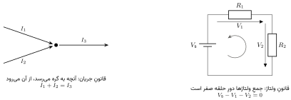
روشِ ولتاژِ گره. نظاممندترین راه برای حلِ هر مدارِ خطی:
- یک گره را مرجع (صفر ولت) بگیرید.
- برای هر گرهِ دیگر یک ولتاژِ مجهول تعریف کنید؛ گرههایی که منبعِ ولتاژ ولتاژشان را تعیین میکند، معلوماند.
- در هر گرهِ مجهول، KCL بنویسید و جریانِ هر مقاومت را با قانونِ اُهم برحسبِ ولتاژِ دو سرش بیان کنید: جریانِ مقاومتِ \(R\) از گرهِ \(a\) به گرهِ \(b\) برابرِ \((V_a - V_b)/R\) است.
- دستگاهِ معادلهها را حل کنید و سپس هر جریانی را که لازم دارید بیابید.
- با KCL در یک گره و توازنِ توان (جمعِ توانِ تحویلیِ منابع = جمعِ توانِ جذبشده) وارسی کنید.
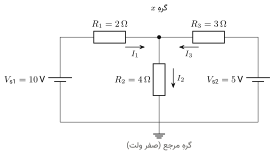
مثال 6.16 (یک گره، دو منبع) پرسش. در شکل 6.11، ولتاژِ گرهِ \(x\) و سه جریان را بیابید.
پاسخ. گرهِ پایین مرجع است؛ گرههای ۱ و ۳ با منبعها معلوماند (\(10\) و \(5\ \text{V}\)). فقط \(V_x\) مجهول است. KCL در گرهِ \(x\)، با فرضِ اینکه \(I_1\) و \(I_3\) به گره وارد و \(I_2\) از آن خارج میشود:
\[ \frac{10 - V_x}{2} + \frac{5 - V_x}{3} = \frac{V_x}{4} \]
هر دو طرف را در 12 ضرب میکنیم: \(6(10 - V_x) + 4(5 - V_x) = 3V_x\)، یعنی \(80 = 13V_x\) و
\[ V_x = \frac{80}{13} = 6.154\ \text{V} \]
\[ \begin{aligned} I_1 &= \frac{10 - 6.154}{2} = 1.923\ \text{A} \\ I_3 &= \frac{5 - 6.154}{3} = -0.385\ \text{A} \\ I_2 &= \frac{6.154}{4} = 1.538\ \text{A} \end{aligned} \]
\(I_3\) منفی شد: جریان در واقع از گرهِ \(x\) به سمتِ منبعِ 5 V میرود، یعنی این منبع توان جذب میکند (مثلِ باتریای که شارژ میشود). وارسی ۱ (KCL): \(1.923 + (-0.385) = 1.538\)، درست. وارسی ۲ (توازنِ توان): منبعِ 10 V تحویل میدهد \(10 \times 1.923 = 19.23\ \text{W}\)؛ منبعِ 5 V جذب میکند \(5 \times 0.385 = 1.92\ \text{W}\)؛ مقاومتها: \(2(1.923)^2 + 4(1.538)^2 + 3(0.385)^2 = 7.40 + 9.47 + 0.44 = 17.31\ \text{W}\)؛ \(1.92 + 17.31 = 19.23\)، درست.
حل با رایانه. برای مدارهای بزرگتر، همین روش به یک دستگاهِ معادلهٔ خطی میانجامد که رایانه آن را حل میکند (روشِ «ولتاژِ گرهِ اصلاحشده»، که منبعهای ولتاژ را هم مجهول میگیرد؛ ریاضیِ ماتریسیِ آن در فصلِ ۳ میآید). تابعِ solve_dc در بستهٔ plantp همین کار را میکند. برنامهٔ آزمایشگاهیِ زیر همان مدار را میسازد:
# Nodes: 0 = reference, 1 = top of the 10 V source,
# 2 = the unknown node x, 3 = top of the 5 V source.
resistors = [
(1, 2, 2.0), # R1 between node 1 and node x
(2, 3, 3.0), # R3 between node x and node 3
(2, 0, 4.0), # R2 from node x to the reference
]
sources = [
(1, 0, 10.0), # V_s1: + at node 1, - at the reference
(3, 0, 5.0), # V_s2: + at node 3, - at the reference
]
sol = dc.solve_dc(4, resistors, sources)
v_x = sol.node_voltages[2]و نتیجه را با پاسخِ دستی میسنجد:
V_x by computer = 6.153846 V, by hand = 6.153846 V
I1 = 1.9231 A, I3 = -0.3846 A, I2 = 1.5385 A
KCL at node x: I1 + I3 - I2 = 6.66e-16 A
source currents: 1.9231 A, -0.3846 Aدو روشِ مستقل یک پاسخ دادهاند؛ این همان الگوی «دست در برابرِ کد» است که از فصلِ ۱ آغاز کردیم.
- در مثال 6.16 اگر \(I_3\) را از ابتدا «خارجشونده» فرض میکردیم، پاسخ چه میشد؟
- چرا در روشِ ولتاژِ گره برای \(n\) گره فقط \(n - 1\) معادله لازم است؟
- در شینهٔ مثبتِ جعبهٔ تجمیع، KCL چه میگوید؟ اگر جریانِ یک رشته منفی شود، یعنی چه؟
6.2.12 روشِ جریانِ حلقه
روشِ ولتاژِ گره مجهولها را ولتاژِ گرهها میگیرد و KCL مینویسد. روشِ دوگانهٔ آن، جریانِ حلقه (به انگلیسی mesh-current method)، مجهولها را جریانهایی میگیرد که در هر «پنجرهٔ» مدار میچرخند و KVL مینویسد (شکل 6.12). جریانِ هر شاخه جمعِ جبریِ جریانهای حلقههایی است که از آن میگذرند.
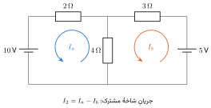
مثال 6.17 (همان مدار، روشِ دیگر) پرسش. مدارِ مثال 6.16 را با جریانِ حلقه حل کنید.
پاسخ. هر دو جریانِ حلقه را ساعتگرد میگیریم. KVL در حلقهٔ چپ (افتها در جهتِ \(I_a\) مثبت): منبعِ 10 V ولتاژ میدهد و مقاومتهای 2 و 4 Ω افت دارند؛ جریانِ 4 Ω برابرِ \(I_a - I_b\) است:
\[ 10 = 2I_a + 4(I_a - I_b) \qquad\Rightarrow\qquad 6I_a - 4I_b = 10 \]
در حلقهٔ راست، \(I_b\) ساعتگرد از بالا به سمتِ راست میرود و منبعِ 5 V را از قطبِ مثبت به منفی میپیماید، یعنی 5 V افت میبیند:
\[ 0 = 3I_b + 5 + 4(I_b - I_a) \qquad\Rightarrow\qquad -4I_a + 7I_b = -5 \]
از معادلهٔ اول \(I_a = (10 + 4I_b)/6\)؛ در دومی: \(-4(10 + 4I_b)/6 + 7I_b = -5\)، یعنی \((42 - 16)I_b/6 = -5 + 40/6\) و \(I_b = 0.3846\ \text{A}\)، سپس \(I_a = 1.9231\ \text{A}\). برنامهٔ همراه همین دستگاه را با جبرِ خطی حل میکند:
mesh equations: 6 Ia - 4 Ib = 10 ; -4 Ia + 7 Ib = -5
Ia = 1.9231 A, Ib = 0.3846 A; I2 = Ia - Ib = 1.5385 A; V_x = 4 (Ia - Ib) =
6.1538 V\(I_a\) همان \(I_1\) ِ مثال 6.16 است و \(I_b = 0.3846\) همان \(-I_3\): جریانِ \(I_b\) ساعتگرد در شاخهٔ 3 Ω به سمتِ منبعِ 5 V میرود، یعنی در جهتی که \(I_3\) را منفی کرده بود. دو روش، یک پاسخ.
کدام روش؟ شمردن کافی است: روشِ گره به اندازهٔ \(n - 1\) مجهول دارد (\(n\) تعدادِ گرهها) و روشِ حلقه به اندازهٔ تعدادِ پنجرهها. شبکههای قدرت گرههای کم و شاخههای زیاد دارند و تقریباً همیشه با روشِ گره حل میشوند (فصلِ ۲۸).
6.2.13 اصلِ برهمنهی
در هر مدارِ خطی (همهٔ عناصر اُهمی و منبعها مستقل)، پاسخِ کل برابرِ جمعِ پاسخهایی است که هر منبع بهتنهایی ایجاد میکند، وقتی بقیهٔ منبعها خاموشاند: منبعِ ولتاژِ خاموش اتصالِ کوتاه و منبعِ جریانِ خاموش مدارِ باز است (شکل 6.13). این اصل پایهٔ بسیاری از تحلیلهای بعدی است: تحلیلِ هارمونیکها (فصلِ ۲۷)، که هر بسامد را جدا حل و جمع میکند، و مطالعاتِ اتصالِ کوتاه (فصلِ ۲۶).
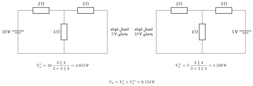
مثال 6.18 (سومین راه برای همان پاسخ) پرسش. \(V_x\) در مدارِ مثال 6.16 را با برهمنهی بیابید.
پاسخ. فقط 10 V: منبعِ 5 V اتصالِ کوتاه است، پس 3 Ω و 4 Ω از گرهِ \(x\) به مرجع موازیاند (\(3 \parallel 4 = 1.714\ \Omega\)) و با 2 Ω یک تقسیمکننده میسازند: \(V_x' = 10 \times 1.714/3.714 = 4.615\ \text{V}\). فقط 5 V: به همین ترتیب \(2 \parallel 4 = 1.333\ \Omega\) و \(V_x'' = 5 \times 1.333/4.333 = 1.538\ \text{V}\). جمع \(6.154\ \text{V}\)، همان پاسخِ دو روشِ دیگر.
هشدار: برهمنهی برای ولتاژ و جریان درست است، اما نه برای توان: توان با مجذورِ جریان میرود و \((I' + I'')^2 \ne I'^2 + I''^2\). همچنین برای مدارهای غیرخطی (دیود، رشتهٔ خورشیدی، قوس) درست نیست.
6.2.14 شکلِ ماتریسی و تقسیمِ جریان میانِ قفسههای باتری
روشِ ولتاژِ گره برای هر مدارِ خطی به یک دستگاهِ معادله میرسد که شکلِ ماتریسی دارد:
\[ \mathbf{G}\,\mathbf{v} = \mathbf{i} \tag{6.15}\]
که \(\mathbf{v}\) بردارِ ولتاژهای گره، \(\mathbf{i}\) بردارِ جریانهای تزریقشده به گرهها و \(\mathbf{G}\) ماتریسِ رسانایی است: درایهٔ قطریِ \(G_{kk}\) جمعِ رساناییهای وصل به گرهِ \(k\) و درایهٔ غیرقطریِ \(G_{jk}\) منفیِ رسانایی میانِ دو گره. این همان ساختاری است که در فصلِ ۲۸ برای پخشِ بارِ شبکههای بزرگ بهکار میرود، با این تفاوت که آنجا اعداد مختلطاند (فصلِ ۷). تابعِ solve_dc همین ماتریس را میسازد و حل میکند (روشِ «اصلاحشده» منبعهای ولتاژ را هم با یک ردیف و ستونِ اضافه وارد میکند).
یک کاربردِ مهم در نیروگاهِ P: در سناریوی S1، باتری از چندین قفسه (به انگلیسی rack) ساخته میشود که روی یک شینهٔ DC موازیاند. اگر مقاومتِ مسیرِ قفسهها یکسان نباشد، جریان هم یکسان تقسیم نمیشود (شکل 6.14).
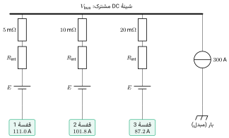
مثال 6.19 (قفسههایی که بار را برابر تقسیم نمیکنند) پرسش. سه قفسهٔ یکسان با نیروی محرکهٔ 1331.2 V و مقاومتِ درونیِ 50 mΩ (هر دو فرضی؛ فصلِ ۱۹) با کابلهایی به مقاومتِ 5، 10 و 20 mΩ به یک شینه وصلاند و مبدل 300 A از شینه میکشد. جریانِ هر قفسه چقدر است؟
پاسخِ دستی. چون نیروی محرکهها برابرند، همهٔ قفسهها یک \(\mathcal{E} - V_\text{bus}\) را میبینند و جریانِ هر کدام با رساناییِ مسیرش متناسب است: رساناییها \(1/0.055\)، \(1/0.060\) و \(1/0.070\)، یعنی \(18.18\)، \(16.67\) و \(14.29\ \text{S}\) با جمعِ \(49.13\)؛ سهمها \(37.0\)، \(33.9\) و \(29.1\) درصد. با کد (ماتریسِ رسانایی، سه منبعِ ولتاژ و یک منبعِ جریان برای بار):
3 racks, EMF 1331.2 V, internal 50 mOhm (assumed), cables 5/10/20 mOhm, load
300 A
bus voltage = 1325.09 V
rack 1: R = 55 mOhm, I = 111.0 A (37.0 %)
rack 2: R = 60 mOhm, I = 101.8 A (33.9 %)
rack 3: R = 70 mOhm, I = 87.2 A (29.1 %)
KCL: sum = 300.00 Aپیامد: قفسهٔ اول ۲۷ درصد بیشتر از قفسهٔ سوم کار میکند، پس گرمتر میشود و زودتر فرسوده میشود؛ وقتی فرسوده شد، مقاومتِ درونیاش بالا میرود و بار به قفسههای دیگر منتقل میشود. به همین دلیل سازندگان طولِ کابلِ قفسهها را یکسان میگیرند یا مدیریتِ فعالِ جریان دارند (فصلهای ۱۹ و ۴۵). این همان «تقسیمِ جریان»ِ بخش 6.2.9 است، اکنون با نتیجهٔ عملیِ عمرِ تجهیز. محدودیتِ مدل: نیروی محرکهٔ قفسهها با وضعیتِ شارژشان فرق میکند و مقاومتِ درونی با دما و سن؛ مدلِ واقعی پویاست.
- برای مداری با ۵ گره و ۸ شاخه و ۴ پنجره، روشِ گره چند مجهول دارد و روشِ حلقه چند؟
- چرا در برهمنهی منبعِ جریانِ خاموش را مدارِ باز میکنیم؟
- در مثال 6.19 اگر همهٔ کابلها 10 mΩ بودند، جریانِ هر قفسه چه میشد؟
- درایهٔ قطریِ ماتریسِ رسانایی برای گرهای که سه مقاومتِ 2، 4 و 4 Ω به آن وصل است چیست؟
6.2.15 مدارهای معادل: تونن و بیشینهٔ انتقالِ توان
شهود. وقتی فقط به رفتارِ یک مدار از دو سرِ مشخص علاقه داریم، مثلاً «اگر باری به این دو سر وصل کنم چه جریانی میکشد؟»، لازم نیست کلِ مدار را هر بار حل کنیم. قضیهٔ تونن (به انگلیسی Thévenin’s theorem) میگوید هر مدارِ خطی، از دید دو سرش، معادلِ یک منبعِ ولتاژِ \(V_\text{th}\) سری با یک مقاومتِ \(R_\text{th}\) است (شکل 6.15).
- \(V_\text{th}\): ولتاژِ دو سر وقتی چیزی به آن وصل نیست (ولتاژِ مدارِ باز).
- \(R_\text{th}\): مقاومتی که از دو سر دیده میشود وقتی همهٔ منبعها خاموشاند: منبعِ ولتاژ اتصالِ کوتاه و منبعِ جریان مدارِ باز میشود.
مثال 6.20 (معادلِ یک تقسیمکننده) پرسش. معادلِ توننِ مدارِ چپِ شکل 6.15 را بیابید و جریانِ یک بارِ 4 Ω را با آن حساب کنید. سپس با حلِ کاملِ مدار وارسی کنید.
پاسخ. \(V_\text{th}\): تقسیمکنندهٔ برابر، \(12 \times 4/(4 + 4) = 6\ \text{V}\). \(R_\text{th}\): منبع اتصالِ کوتاه، دو مقاومتِ 4 Ω از دید a و b موازیاند: \(2\ \Omega\). با بارِ 4 Ω: \(I = 6/(2 + 4) = 1\ \text{A}\) و \(V = 4\ \text{V}\). وارسی با حلِ کامل: بارِ 4 Ω با مقاومتِ پایینی موازی است و معادلشان 2 Ω؛ تقسیمکننده: \(12 \times 2/(4 + 2) = 4\ \text{V}\)، همان. کدِ همراه (سطرهای E14) هر دو را میدهد.
بیشینهٔ انتقالِ توان. توانِ بارِ \(R_\text{L}\) که به معادلِ تونن وصل است:
\[ P_\text{L} = R_\text{L}\left(\frac{V_\text{th}}{R_\text{th} + R_\text{L}}\right)^2 \]
با مشتقگیری نسبت به \(R_\text{L}\) (فصلِ ۳) و برابر صفر گذاشتن، بیشینه در \(R_\text{L} = R_\text{th}\) است و مقدارش \(V_\text{th}^2/(4R_\text{th})\). اما در این نقطه بازده فقط ۵۰ درصد است: همانقدر توان در \(R_\text{th}\) تلف میشود که به بار میرسد.
مثال 6.21 (چرا نیروگاه برای «بیشینهٔ انتقالِ توان» طراحی نمیشود) پرسش. با معادلِ \(6\ \text{V}\) و \(2\ \Omega\)، توانِ بار و بازده را برای بارِ 2 Ω و 18 Ω بیابید.
پاسخ. \(R_\text{L} = 2\): \(I = 1.5\ \text{A}\)، \(P_\text{L} = 4.5\ \text{W}\)، \(\eta = 2/4 = 0.50\). \(R_\text{L} = 18\): \(I = 0.3\ \text{A}\)، \(P_\text{L} = 1.62\ \text{W}\)، \(\eta = 18/20 = 0.90\). شکل 6.16 هر دو کمیت را در کلِ بازه نشان میدهد: توان در \(R_\text{L} = R_\text{th}\) بیشینه است، اما بازده با بزرگ شدنِ بار پیوسته بالا میرود.
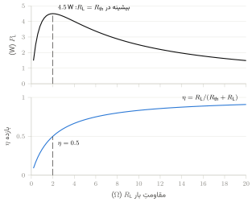
نتیجه برای مهندسی: در مخابرات، که منبع ضعیف و سیگنال گران است، بیشینهٔ انتقالِ توان هدف است. در سامانهٔ قدرت، که منبع بزرگ است و هر درصد تلفات پول و گرماست، هدف بازدهِ بالا است: مقاومتِ مسیر (\(R_\text{th}\) از دید بار) باید در برابرِ بار بسیار کوچک باشد. فیدرِ نیروگاهِ P با 1.37 % تلفات (مثال 6.25) یعنی \(R_\text{th}\) حدودِ ۷۰ بار کوچکتر از بارِ معادل. هشدارِ مفهومی: این را با ردیابیِ نقطهٔ بیشینهٔ توان در اینورترهای خورشیدی (فصلهای ۹ و ۱۰) اشتباه نکنید؛ آنجا هدف بیرون کشیدنِ بیشترین توان از یک منبعِ غیرخطی است که «مقاومتِ درونی» به معنای تونن ندارد.
- معادلِ تونن را چگونه با دو اندازهگیری (ولتاژِ مدارِ باز و جریانِ اتصالِ کوتاه) میتوان یافت؟ چرا این کار برای یک باتریِ نیروگاهی خطرناک است؟
- معادلِ نورتون چیست و چه رابطهای با معادلِ تونن دارد؟ (\(I_\text{N} = V_\text{th}/R_\text{th}\))
- اگر بخواهیم بازده دستِکم 99 % باشد، \(R_\text{L}\) چند برابرِ \(R_\text{th}\) باید باشد؟
6.2.16 خازن و سلف در مدارِ جریانِ مستقیم
تا اینجا همهٔ عناصر انرژی را تلف یا تأمین میکردند. دو عنصرِ دیگر انرژی را ذخیره میکنند و در مدارِ DC فقط در لحظههای تغییر خود را نشان میدهند؛ اما همان لحظهها، یعنی وصل و قطع، از نظرِ ایمنی مهمترین لحظهها هستند.
خازن (به انگلیسی capacitor) دو رسانا است که با عایق از هم جدا شدهاند. بار روی یکی مثبت و روی دیگری منفی انباشته میشود و میدانِ الکتریکیِ میانشان انرژی را نگه میدارد. نسبتِ بار به ولتاژ ظرفیتِ خازنی است، \(C = Q/V\)، با یکای فاراد (F). برای دو صفحهٔ موازی با سطحِ \(A\) و فاصلهٔ \(d\): \(C = \varepsilon A/d\). جریانِ خازن با آهنگِ تغییرِ ولتاژش متناسب است و انرژیاش با مجذورِ ولتاژ:
\[ i = C\,\frac{\mathrm{d}v}{\mathrm{d}t} \qquad\qquad E_C = \tfrac{1}{2}\,C\,V^2 \tag{6.16}\]
سلف (به انگلیسی inductor) هادیای است که میدانِ مغناطیسیِ جریانش انرژی نگه میدارد؛ هر سیمی کمی اندوکتانس دارد و سیمپیچ بیشتر. یکای اندوکتانس هانری (H) است:
\[ v = L\,\frac{\mathrm{d}i}{\mathrm{d}t} \qquad\qquad E_L = \tfrac{1}{2}\,L\,I^2 \tag{6.17}\]
پیامدِ دو رابطهٔ سمتِ چپ: ولتاژِ خازن نمیتواند ناگهان عوض شود (جریانِ بینهایت میخواهد) و جریانِ سلف نمیتواند ناگهان عوض شود (ولتاژِ بینهایت میخواهد). اولی میگوید خازنِ پُر پس از جداسازی پُر میماند؛ دومی میگوید قطعِ ناگهانیِ جریانِ یک مدارِ سلفی، ولتاژِ بزرگی میسازد که خودش را بهصورتِ قوس در کلید تخلیه میکند.
مدارِ RC: یک معادلهٔ دیفرانسیلِ ساده. خازنِ پُر با ولتاژِ \(V_0\) از راهِ مقاومتِ \(R\) تخلیه میشود. KVL: ولتاژِ خازن برابرِ ولتاژِ مقاومت است و جریانِ مقاومت همان جریانِ خروجیِ خازن: \(v/R = -C\,\mathrm{d}v/\mathrm{d}t\). این معادلهٔ دیفرانسیلِ مرتبهٔ اول است (فصلِ ۳) و جوابش:
\[ v(t) = V_0\,e^{-t/\tau},\qquad \tau = R\,C \tag{6.18}\]
\(\tau\) ثابتِ زمانی است: پس از یک ثابتِ زمانی ولتاژ به \(e^{-1} = 36.8\,\%\) مقدارِ اول میرسد، پس از سه ثابتِ زمانی به حدودِ ۵ درصد و پس از پنج به کمتر از یک درصد (شکل 6.17). شارژ از صفر با منبعِ \(V\) قرینهٔ همین است: \(v(t) = V\,(1 - e^{-t/\tau})\). و زمانِ رسیدن به یک ولتاژِ معین، با لگاریتم گرفتن از دو سرِ معادلهٔ 6.18:
\[ t = \tau\,\ln\frac{V_0}{V_\text{target}} \tag{6.19}\]
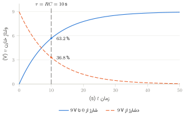
مثال 6.22 (خازنِ ورودیِ اینورتر: خطری که پس از جداسازی میماند) پرسش. ورودیِ DC یک اینورتر (فصلِ ۹) یک بانکِ خازنی دارد که ولتاژ را صاف میکند (شکل 6.18). فرض کنید ظرفیت 10 mF، ولتاژ 1100 V و مقاومتِ تخلیهٔ موازی 50 kΩ باشد (همه فرضی؛ عددهای واقعی در دستورِ سازندهاند). پس از باز کردنِ \(Q_2\) چه انرژیای در خازن مانده و چه مدت طول میکشد تا ولتاژ به 50 V برسد؟ همچنین انرژیِ مغناطیسیِ ذخیره در حلقهٔ فیدرِ نیروگاهِ P را برآورد کنید.
پاسخ.
DC-link 10 mF at 1100 V (assumed): E = 6050 J
bleeder 50 kOhm: tau = RC = 500 s; time to 50 V = tau ln(1100/50) = 1546 s =
25.8 min
feeder loop inductance (180 m, 50 mm spacing, r = 8.74 mm): L = 126 uH; energy
at 314.64 A = 6.2 J6 kJ انرژیِ یک چکشِ سنگینِ در حالِ سقوط است، که اگر از راهِ بدنِ انسان یا یک ابزار تخلیه شود، کشنده یا انفجاری است. و تخلیه حدودِ ۲۶ دقیقه طول میکشد (عددِ واقعی از دستورِ سازنده). پس باز کردنِ کلید کافی نیست؛ باید زمانِ تخلیه را صبر کرد و بیبرقی را آزمود (پلهٔ ۴ِ شکل 6.34). برای اندوکتانسِ حلقهٔ فیدر از رابطهٔ دو هادیِ موازی با طولِ \(\ell\)، فاصلهٔ \(d\) و شعاعِ \(r\) استفاده شده است، \(L \approx (\mu_0\ell/\pi)\ln(d/r)\) (فصلِ ۲۴): حدودِ 126 µH و 6 J انرژی که هنگامِ قطعِ جریان باید در قوسِ کلید مستهلک شود. این عدد نسبت به خازن کوچک است اما توضیح میدهد چرا کلیدِ DC باید قوس را مهار کند.
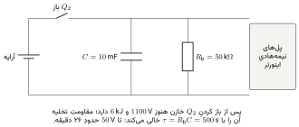
خازنهای بزرگ (در اینورتر، مبدلِ باتری، جبرانسازِ توان) و باتریها پس از جداسازی هم انرژی دارند. زمانِ انتظار، روشِ تخلیه و آزمونِ بیبرقی را دستورِ سازنده و رویهٔ کارفرما تعیین میکنند. اتصالِ کوتاه کردنِ خازنِ پُر برای «تخلیهٔ سریع» با پیچگوشتی یا سیم، قوس و انفجار ایجاد میکند و ممنوع است.
- پس از چند ثابتِ زمانی ولتاژِ خازن به یک درصدِ مقدارِ اولیه میرسد؟ (\(\ln 100 \approx 4.6\))
- اگر مقاومتِ تخلیه نصف شود، زمانِ تخلیه و توانِ تلفشده در آن در حالِ کارِ عادی چه میشود؟ (این همان مصالحهٔ طراحِ اینورتر است.)
- چرا ولتاژِ خازن نمیتواند ناگهان تغییر کند؟ پاسخ را با معادلهٔ 6.16 بدهید.
6.3 ب. محاسبههای کاربردیِ جریانِ مستقیم
6.3.1 مدلِ منبع و بار
منبعِ ایدئال و واقعی. منبعِ ولتاژِ ایدئال ولتاژِ ثابتی میدهد، هر قدر جریان بکشیم. منبعِ جریانِ ایدئال جریانِ ثابتی میدهد، هر قدر ولتاژ لازم باشد. هیچکدام وجود ندارند، اما دو منبعِ اصلیِ نیروگاه به این دو نزدیکاند: باتری به منبعِ ولتاژ و رشتهٔ خورشیدی در بیشترِ بازهٔ کارش به منبعِ جریان.
سادهترین مدلِ یک منبعِ واقعیِ ولتاژی، منبعِ ایدئالِ \(V_\text{s}\) سری با یک مقاومتِ درونیِ \(R_\text{s}\) است (شکل 6.19). ولتاژِ پایانه با جریان افت میکند:
\[ V_\text{t} = V_\text{s} - R_\text{s}\,I \tag{6.20}\]
این همان معادلِ تونن است، این بار برای یک منبعِ فیزیکی. مقاومتِ درونیِ باتریها کوچک است اما صفر نیست و با دما، سن و وضعیتِ شارژ تغییر میکند (فصلِ ۱۹).
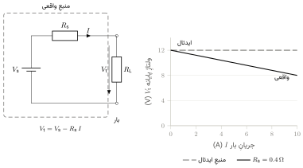
مثال 6.23 (مقاومتِ درونیِ یک باتری) پرسش. ولتاژِ مدارِ بازِ یک باتریِ سرباسیدیِ 12 V برابرِ 12.6 V است و زیرِ بارِ 50 A به 11.9 V میرسد. مقاومتِ درونی چقدر است و زیرِ 200 A ولتاژِ پایانه چه میشود؟
پاسخ. از معادلهٔ 6.20: \(R_\text{s} = (12.6 - 11.9)/50 = 0.014\ \Omega = 14\ \text{m}\Omega\). زیرِ 200 A: \(V_\text{t} = 12.6 - 0.014 \times 200 = 9.8\ \text{V}\). وارسیِ معقول بودن: افتِ 2.8 V زیرِ جریانِ راهاندازیِ موتور برای باتریِ خودرو آشناست. محدودیتِ مدل: مقاومتِ درونیِ واقعی ثابت نیست؛ در جریانهای بالا و در سرما بیشتر میشود، و پاسخِ باتری به تغییرِ ناگهانیِ جریان چند ثابتِ زمانی دارد که مدلِ یکمقاومتی آن را نمیبیند (فصلِ ۱۹).
رشتهٔ خورشیدی: منبعِ محدود به جریان. رفتارِ یک سلولِ خورشیدی، و بنابراین یک رشته، را منحنیِ جریان–ولتاژ (به انگلیسی I–V curve) توصیف میکند (شکل 6.20). از ولتاژِ صفر تا نزدیکِ «زانوی» منحنی، جریان تقریباً ثابت و برابرِ جریانِ اتصالِ کوتاه \(I_\text{sc}\) است؛ سپس بهتندی افت میکند و در ولتاژِ مدارِ باز \(V_\text{oc}\) صفر میشود. توان، \(P = VI\)، در جایی میانِ این دو بیشینه است: نقطهٔ بیشینهٔ توان با \(V_\text{mp}\) و \(I_\text{mp}\). فیزیکِ این منحنی موضوعِ فصلِ ۱۰ است؛ اینجا سه پیامدِ مداریاش را میخواهیم:
- جریانِ اتصالِ کوتاهِ رشته فقط کمی بیشتر از جریانِ کارش است: برای PVM-550، \(13.98/13.11 = 1.066\)، یعنی ۶٫۶ درصد. اتصالِ کوتاه در رشته جریانِ عظیمی نمیکشد و بنابراین فیوزِ خودِ رشته نمیتواند آن را از کارِ عادی تشخیص دهد (1).
- جریان با تابش متناسب است و ولتاژ با دما رابطهٔ عکس دارد: نیمتابش، نیمجریان؛ رشتهٔ داغ، ولتاژِ کمتر. ولتاژِ مدارِ باز در سرمای صبحِ زمستان بیشترین است (بخش 6.3.13).
- تا نور هست، ولتاژ هست: قطعِ اینورتر یا باز کردنِ کلید، رشته را بیبرق نمیکند؛ فقط جریانش را صفر میکند و ولتاژ به \(V_\text{oc}\) میرسد (بخش 6.4.2).
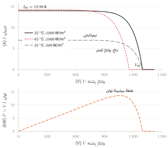
نقطهٔ کار. وقتی منبعی به باری وصل میشود، هر دو باید یک ولتاژ و یک جریان داشته باشند: نقطهٔ کار تقاطعِ منحنیِ منبع با منحنیِ بار است. برای مقاومتِ \(R\)، منحنیِ بار خطِ \(I = V/R\) است.
مثال 6.24 (رشتهٔ خورشیدی و یک مقاومت) پرسش. رشتهٔ ۲۶ ماژولی در شرایطِ استاندارد مستقیماً به یک مقاومتِ 80 Ω و بارِ دیگر به 40 Ω وصل میشود. نقطهٔ کار و توان را بیابید و با بیشینهٔ توانِ رشته مقایسه کنید.
پاسخ. با دست: خطِ \(I = V/80\) را روی شکل 6.20 بکشید؛ در حدودِ 1040 V و 13 A منحنی را قطع میکند. با کد (تابعِ pv_resistive_operating_point، روشِ دوبخشی که تقاطع را تا دقتِ دلخواه مییابد؛ فصلِ ۳):
| بار | \(V\) | \(I\) | \(P\) |
|---|---|---|---|
| 80 Ω | 1040.8 V | 13.01 A | 13.54 kW |
| 40 Ω | 558.9 V | 13.97 A | 7.81 kW |
| بهترین مقاومت (82.6 Ω) | 1058 V | 12.81 A | 13.56 kW |
با 40 Ω رشته تقریباً در \(I_\text{sc}\) کار میکند و فقط 7.8 kW میدهد، کمتر از ۶۰ درصدِ توانِ ممکن. بهترین مقاومت فقط برای همین تابش و دما بهترین است؛ ابری که بگذرد، آن را جابهجا میکند. به همین دلیل رشته را هرگز مستقیم به بارِ ثابت نمیبندند؛ اینورتر ولتاژِ کار را پیوسته تنظیم میکند تا روی نقطهٔ بیشینه بماند (فصلهای ۹ و ۱۰). محدودیتِ مدل: مدلِ آموزشیِ ما مقاومتهای سری و موازیِ سلول را ندارد و بیشینهاش 13.56 kW است در حالی که برگهٔ داده 14.30 kW میگوید؛ برای نشان دادنِ شکل کافی است، برای عدد نه. فصلِ ۱۰ مدلِ برازششده به برگهٔ داده را میسازد.
- چرا اتصالِ کوتاه کردنِ دو سرِ یک باتری خطرناکتر از اتصالِ کوتاه کردنِ یک رشتهٔ خورشیدی است؟ (از نظرِ جریان؛ خطرِ رشته را در بخش 6.4.6 ببینید.)
- مقاومتِ درونیِ یک منبع را از کدام دو اندازهگیری میتوان یافت؟
- اگر تابش نصف شود، خطِ بارِ 80 Ω منحنی را در کجا قطع میکند؟ (منحنیِ نیمتابش را در شکل 6.20 ببینید.)
6.3.2 افتِ ولتاژ و تلفاتِ فیدر
شهود. هر کابل یک مقاومتِ کوچک است. وقتی جریان از آن میگذرد، بخشی از ولتاژ «در راه» میماند و بخشی از توان گرما میشود. در مدارِ DC جریان از یک هادی میرود و از هادیِ دیگر برمیگردد، پس هر دو هادی در مسیرند (شکل 6.21).
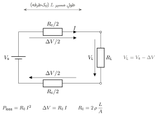
رابطهها. برای مسیری به طولِ یکطرفهٔ \(L\)، با هادیهایی به سطحِ مقطعِ \(A\) و مقاومتِ ویژهٔ \(\rho(T)\) در دمای کار:
\[ R_\text{c} = 2\,\rho(T)\,\frac{L}{A} \tag{6.21}\]
\[ \Delta V = R_\text{c}\,I \qquad P_\text{loss} = R_\text{c}\,I^2 \qquad \frac{\Delta V}{V} = \frac{P_\text{loss}}{P} \tag{6.22}\]
رابطهٔ آخر جالب است: در DC، کسرِ افتِ ولتاژ برابرِ کسرِ تلفاتِ توان است، چون \(P_\text{loss}/P = R_\text{c}I^2/(VI) = R_\text{c}I/V\). فرضها: جریانِ ثابت، دمای یکنواختِ هادی، و مقاومتِ اتصالها در برابرِ کابل ناچیز (فرضی که اتصالِ بد آن را میشکند، بخش 6.4.5).
سطحِ مقطع برای یک هدفِ افت. اگر افتِ مجاز \(\Delta V_\text{max}\) باشد، از معادلهٔ 6.21 و معادلهٔ 6.22:
\[ A_\text{min} = \frac{2\,\rho(T)\,L\,I}{\Delta V_\text{max}} \tag{6.23}\]
و سپس نزدیکترین اندازهٔ استانداردِ بزرگتر را برمیداریم. افتِ ولتاژ تنها معیارِ انتخابِ کابل نیست: ظرفیتِ جریانِ پیوسته (گرم شدن، بخش 6.3.6)، تحملِ جریانِ خطا، روشِ نصب، هزینه و تلفاتِ انرژیِ عمرِ نیروگاه هم معیارند و کابلِ نهایی باید همهٔ آنها را برآورد (فصلِ ۲۴).
مثال 6.25 (فیدرِ جریانِ مستقیمِ نیروگاهِ P) این همان مثالِ کاربردی است که طرحِ کتاب برای این فصل خواسته است.
دادهها و وضعیت. بستهٔ دادهٔ مرجع 1.0.0، سناریوی S0؛ ماژولِ PVM-550 (ساختگی)؛ ۲۶ ماژول در هر رشته و ۲۴ رشته در هر جعبهٔ تجمیع (فرضی، A-014 و A-015)؛ فیدرِ آلومینیومیِ 240 mm² به طولِ یکطرفهٔ 180 m (فرضی، A-018)؛ دمای هادی 50 °C (فرضی، A-019)؛ شرایطِ استاندارد.
پرسش. جریان، افتِ ولتاژ و تلفاتِ فیدر را حساب کنید و بگویید برای طراحیِ واقعی چه اطلاعاتی کم است.
گامِ ۱، جریان. از مثال 6.14: \(I = 24 \times 13.11 = 314.64\ \text{A}\)، با \(V = 1091.0\ \text{V}\) و \(P = 343.3\ \text{kW}\).
گامِ ۲، مقاومتِ ویژه در دمای کار. از معادلهٔ 6.6:
\[ \rho_\text{Al}(50\,^\circ\text{C}) = 2.82\times 10^{-8}\,\bigl[1 + 0.00403 \times 30\bigr] = 3.161\times 10^{-8}\ \Omega\cdot\text{m} \]
گامِ ۳، مقاومتِ حلقه. از معادلهٔ 6.21، با \(A = 240\times 10^{-6}\ \text{m}^2\):
\[ R_\text{c} = 2 \times 3.161\times 10^{-8} \times \frac{180}{240\times 10^{-6}} = 0.04741\ \Omega \]
گامِ ۴، افت و تلفات. از معادلهٔ 6.22:
\[ \Delta V = 0.04741 \times 314.64 = 14.92\ \text{V} \qquad \frac{\Delta V}{V} = \frac{14.92}{1091.0} = 1.37\,\% \]
\[ P_\text{loss} = 0.04741 \times 314.64^2 = 4694\ \text{W} = 4.69\ \text{kW} \]
که آن هم 1.37 % از توانِ عبوری است.
گامِ ۵، وارسی. یکاها: \(\Omega\cdot\text{m} \times \text{m}/\text{m}^2 = \Omega\)؛ \(\Omega\times\text{A} = \text{V}\)؛ \(\Omega\times\text{A}^2 = \text{W}\). کسرِ افتِ ولتاژ و کسرِ تلفات برابرند، همانطور که معادلهٔ 6.22 پیشبینی میکرد. خروجیِ برنامهٔ همراه:
Plant P - DC feeder, combiner box to inverter (chapter 6 case)
string: 26 x PVM-550 in series
V_mp = 26 x 41.96 = 1091.0 V, I_mp = 13.11 A
V_oc(25 C) = 1297.4 V
combiner: 24 strings in parallel
I = 24 x 13.11 = 314.64 A, P = 343.3 kW at STC
feeder: 180 m one way, aluminium, 240 mm2, conductor at 50 C
rho(50 C) = 3.161e-08 ohm m
R one conductor = 0.0237 ohm, loop R = 0.0474 ohm
result: drop = 14.92 V = 1.37 % of V_mp
loss = 4694 W = 1.37 % of feeder powerشکل 6.22 همین عددها را روی مدار نشان میدهد.
گامِ ۶، آنچه کم است. این محاسبه برای فهمیدن کافی است، برای ساختن نه. پیش از طراحیِ واقعی دستِکم اینها لازم است: (۱) مسیرِ واقعیِ کابل و طولِ آن از جانمایی (فصلِ ۱۴)؛ (۲) نوعِ کابل، عایق، ردهٔ ولتاژِ DC، روشِ نصب (دفن، کانال، سینی) و گروهبندی با کابلهای دیگر، که دمای واقعیِ هادی و ظرفیتِ جریان را تعیین میکنند (فصلِ ۲۴)؛ (۳) مقاومتِ هادی از برگهٔ دادهٔ سازندهٔ کابل بهجای مقدارِ فلزِ خالص؛ (۴) بیشینهٔ جریانِ پیوسته در تابشِ بیش از استاندارد و ضریبهای الزامیِ استانداردِ حاکم؛ (۵) جریانِ خطا و زمانِ قطعِ حفاظت برای وارسیِ تحملِ حرارتیِ کابل؛ (۶) بازهٔ ولتاژِ ورودیِ اینورتر (فصلِ ۹)؛ (۷) هدفِ افتِ ولتاژ از الزاماتِ مالک یا استاندارد، نه از حدس؛ (۸) هزینهٔ کابل و ارزشِ انرژیِ تلفشده برای سنجشِ اقتصادیِ مقطعها (فصلِ ۲۱). اینها در بخش 6.5.7 به فهرستِ مجهولهای نیروگاهِ P میروند.
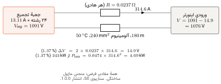
حساسیت. اگر مقطع یا جنس یا دما را عوض کنیم چه میشود؟ شکل 6.23 و ادامهٔ گزارشِ برنامه این را نشان میدهند. افت با سطحِ مقطع نسبتِ عکس دارد: دو برابر کردنِ مقطع، افت را نصف میکند. مسِ هممقطع ۳۹ درصد افتِ کمتری دارد. و دمای هادی، از 20 تا 90 °C، افت را حدودِ ۲۸ درصد بالا میبرد.
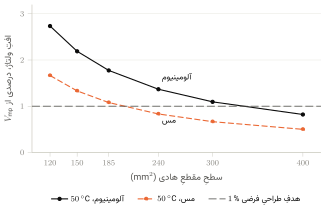
sensitivity to cross-section, aluminium at 50 C
area drop V drop % loss W loss %
120 mm2 29.84 2.73 9388 2.73
150 mm2 23.87 2.19 7510 2.19
185 mm2 19.35 1.77 6089 1.77
240 mm2 14.92 1.37 4694 1.37
300 mm2 11.93 1.09 3755 1.09
400 mm2 8.95 0.82 2816 0.82
sensitivity to cross-section, copper at 50 C
area drop V drop % loss W loss %
120 mm2 18.15 1.66 5711 1.66
150 mm2 14.52 1.33 4568 1.33
185 mm2 11.77 1.08 3704 1.08
240 mm2 9.07 0.83 2855 0.83
300 mm2 7.26 0.67 2284 0.67
400 mm2 5.44 0.50 1713 0.50
sensitivity to conductor temperature, aluminium 240 mm2
20 C: loop R 0.0423 ohm, drop 13.31 V, loss 4188 W
50 C: loop R 0.0474 ohm, drop 14.92 V, loss 4694 W
70 C: loop R 0.0508 ohm, drop 15.99 V, loss 5031 W
90 C: loop R 0.0542 ohm, drop 17.06 V, loss 5369 W
smallest aluminium section for 1 % drop: 328 mm2 -> standard 400 mm2مثال 6.26 (سطحِ مقطع برای هدفِ یک درصد) پرسش. اگر مالک بخواهد افتِ فیدر در شرایطِ استاندارد از 1 % بیشتر نشود (فرضِ A-021)، کمینهٔ مقطعِ آلومینیوم و مس چقدر است؟
پاسخ. \(\Delta V_\text{max} = 0.01 \times 1091.0 = 10.91\ \text{V}\). از معادلهٔ 6.23:
\[ A_\text{min,Al} = \frac{2 \times 3.161\times 10^{-8} \times 180 \times 314.64}{10.91} = 3.282\times 10^{-4}\ \text{m}^2 = 328\ \text{mm}^2 \]
پس آلومینیومِ 400 mm² (اندازهٔ استانداردِ بعدی؛ 300 mm² با 1.09 % کم است). برای مس، با \(\rho_\text{Cu}(50\,^\circ\text{C}) = 1.92\times 10^{-8}\)، \(A_\text{min} = 200\ \text{mm}^2\) و اندازهٔ استاندارد 240 mm². پرسشِ طراحی: کدام بهتر است؟ پاسخ به هزینهٔ کابل، وزن و نصب، و ارزشِ انرژیِ صرفهجوییشده بستگی دارد، و اینها را هنوز نداریم. اما میتوانیم انرژیِ صرفهجوییشده را حساب کنیم (مثال 6.27). هشدار: هدفِ 1 % فرض است؛ استانداردها و مالکان مختلف حدهای متفاوتی میگذارند و گاهی حدِ افت را برای کلِ مسیرِ DC تعیین میکنند، نه برای یک فیدر.
مثال 6.27 (تلفاتِ انرژیِ سالانهٔ فیدر) پرسش. با دادهٔ ساعتیِ بسته، تلفاتِ انرژیِ سالانهٔ فیدرِ آلومینیومیِ 240 و 400 mm² را برآورد کنید. چرا درصدِ تلفاتِ سالانه با درصدِ تلفاتِ ساعتِ اوج فرق دارد؟
مدل و فرضها. توانِ DC جعبهٔ تجمیع را با مدلِ غربالگریِ فصلِ ۱ از تابشِ افقی میگیریم: \(P = 343.2\ \text{kWp} \times G/1000 \times 0.85\). ولتاژ را ثابت و نزدیکِ \(V_\text{mp}\) فرض میکنیم، پس جریان متناسب با تابش است: \(I = P/V\). دمای هادی را در همهٔ ساعتها 50 °C میگیریم که محافظهکارانه است (شبها و زمستانها هادی سردتر است). تلفاتِ هر ساعت \(R_\text{c}I^2 \times 1\ \text{h}\) و تلفاتِ سالانه جمعِ ۸۷۶۰ ساعت است.
نتیجه (برنامهٔ همراه، سطرهای E20):
E20 240 mm2 Al: energy through feeder 568,031 kWh/yr, lost 4,215 kWh/yr = 0.74
% (peak-hour loss fraction 1.37 %)
E20 400 mm2 Al: energy through feeder 568,031 kWh/yr, lost 2,529 kWh/yr = 0.45
% (peak-hour loss fraction 0.82 %)
E20 data: Plant P Reference Data Pack 1.0.0, scenario S0 (no-BESS);
assumptions: I proportional to GHI, PR_dc = 0.85, conductor at 50 C all
year (conservative)تلفاتِ انرژیِ سالانهٔ فیدرِ 240 mm² حدودِ 0.74 % است، تقریباً نصفِ 1.37 % ساعتِ اوج. چرا؟ تلفات با \(I^2\) میرود و انرژیِ عبوری با \(I\). ساعتهای کمتابش، که سهمِ بزرگی از انرژی دارند، تلفاتِ بسیار کمی دارند: در نیمتابش، جریان نصف و تلفات یکچهارم است. پس کسرِ تلفاتِ سالانه همیشه کمتر از کسرِ تلفاتِ اوج است و نسبتِ این دو به شکلِ توزیعِ تابش بستگی دارد. اهمیتِ عملی: هر کس تلفاتِ اوج را برای کلِ سال بهکار برد، تلفات را دو برابر برآورد کرده است؛ و هر کس از این فصل تلفاتِ سالانه را بگیرد، باید بداند دمای ثابتِ 50 °C و مدلِ غربالگری آن را کمی بزرگ نشان میدهند.
ارزشِ تصمیم. گذر از 240 به 400 mm² سالانه \(4215 - 2529 = 1686\ \text{kWh}\) در هر فیدر صرفهجویی میکند؛ برای ۱۷۵ جعبهٔ تجمیع (مثال 6.41) حدودِ 295 MWh در سال. اینکه این صرفهجویی هزینهٔ کابلِ کلفتتر را جبران میکند یا نه، پرسشِ فصلِ ۲۱ است.
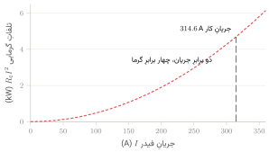
- چرا در معادلهٔ 6.21 ضریبِ ۲ آمده است؟ در یک مدارِ سهفاز این ضریب چه میشود؟ (فصلِ ۷)
- اگر طولِ فیدر دو برابر شود و بخواهیم افت همان بماند، مقطع چه باید بشود؟
- چرا کسرِ تلفاتِ انرژیِ سالانه کمتر از کسرِ تلفاتِ اوج است؟ آیا ممکن است بیشتر باشد؟
- در شکل 6.24، تلفات در 157 A (نصفِ جریانِ کار) چند کیلووات است؟
6.3.3 کاربردِ دوم: تغذیهٔ DC کنترل و حفاظت
جریانِ مستقیم فقط در آرایهٔ خورشیدی نیست. هر پستِ برقِ نیروگاه یک باتریِ ایستگاهی (معمولاً 110 V یا 125 V DC، بسته به رویهٔ کشور و طرح) دارد که رلهها، کنترلگرها و مهمتر از همه بوبینِ قطعِ کلیدهای قدرت را تغذیه میکند؛ تا حتی اگر همهٔ برقِ متناوبِ نیروگاه قطع شود، حفاظت بتواند کلید را باز کند (فصلهای ۲۳ و ۲۶). افتِ ولتاژ در این مدارها مستقیماً به ایمنی ربط دارد: بوبینی که ولتاژِ کافی نگیرد، کلید را باز نمیکند.
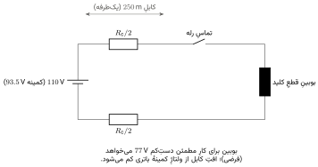
مثال 6.28 (آیا کلید قطع میکند؟) پرسش. باتریِ 110 V در پایانِ زمانِ پشتیبانی به 93.5 V میرسد. بوبینِ قطعِ یک کلید در پستِ دوردست 5 A میکشد و برای کارِ مطمئن دستِکم 77 V میخواهد. کابل 250 m یکطرفه و مسی است و دمایش 30 °C (همه فرضی؛ مقادیرِ واقعی از سازندهٔ کلید و طرحِ سامانهٔ DC). کدام مقطع کافی است؟
پاسخ. با معادلهٔ 6.21 و معادلهٔ 6.22، در بدترین حالت (باتریِ خالی):
110 V DC system: battery at end of discharge 93.5 V, coil 5 A, needs >= 77 V,
route 250 m one way, copper at 30 C (all assumed)
2.5 mm2: loop R 3.575 ohm, drop 17.88 V, coil sees 75.62 V TOO LOW
4.0 mm2: loop R 2.234 ohm, drop 11.17 V, coil sees 82.33 V OK
6.0 mm2: loop R 1.490 ohm, drop 7.45 V, coil sees 86.05 V OK2.5 mm²، که برای یک مدارِ 5 A از نظرِ گرما کاملاً کافی است، از نظرِ افتِ ولتاژ مردود است. درسِ طراحی: برای مدارهای کنترلی، ملاک ولتاژِ کمینهٔ منبع و جریانِ بیشینهٔ بار است، نه مقدارهای نامی؛ و مدارِ قطع، که در لحظهای کار میکند که بیشترین نیاز به آن است، باید با همان بدترین شرایط طراحی شود. فصلهای ۲۳ و ۲۶ این را با باتریِ ایستگاهی و هماهنگیِ حفاظت کامل میکنند.
6.3.4 بودجهٔ تلفاتِ DC کلِ نیروگاه
فیدرِ جعبهٔ تجمیع تنها بخشِ سیمکشیِ DC نیست: هر رشته هم کابلِ خودش را تا جعبهٔ تجمیع دارد. این کابلها نازکاند اما بسیار زیادند. برای بودجهٔ تلفات (به انگلیسی loss budget)، که در فصلِ ۱۵ بخشی از مدلِ تولید میشود، هر دو را جمع میکنیم.
مثال 6.29 (تلفاتِ سیمکشیِ DC نیروگاهِ P) پرسش. طولِ یکطرفهٔ میانگینِ کابلِ رشته را 70 m و جنسش را مس با دمای 50 °C فرض کنید (فرضِ A-022). تلفاتِ کابلِ رشته را برای 4 و 6 mm²، و تلفاتِ کلِ سیمکشیِ DC را با فیدرِ 240 یا 400 mm² در ساعتِ اوج و در کلِ سال حساب کنید.
پاسخ (برنامهٔ همراه؛ جریان متناسب با تابش، با همان مدلِ غربالگریِ مثال 6.27):
string cable 4 mm2 Cu, 70 m one way: loop 0.6730 ohm; STC loss 115.7 W = 0.81
%; annual 103.9 kWh = 0.44 %
string cable 6 mm2 Cu, 70 m one way: loop 0.4487 ohm; STC loss 77.1 W = 0.54
%; annual 69.3 kWh = 0.29 %
feeder 240 mm2 Al: STC 1.37 %; annual 0.74 %
feeder 400 mm2 Al: STC 0.82 %; annual 0.45 %
base case (4 mm2 + 240 mm2): STC 2.18 %, annual 1.18 % of DC energy
plant DC energy (screening): 99.3 GWh/yr; loss 1173 MWh/yrتفسیر. کابلِ رشتهٔ 4 mm² در ساعتِ اوج 0.81 % تلفات دارد، بیش از نیمی از سهمِ فیدر؛ پس «کابلِ نازکِ رشته» در مجموع اثرِ بزرگی دارد. کلِ سیمکشیِ DC در حالتِ پایه در ساعتِ اوج 2.18 % و در کلِ سال حدودِ 1.2 % انرژیِ DC را تلف میکند، یعنی حدودِ 1.2 GWh در سال. این عدد در فصلِ ۱۵ یکی از ستونهای «آبشارِ تلفات» است. حساسیت: با 6 mm² و 400 mm²، تلفاتِ سالانه حدودِ 0.74 % میشود. محدودیتها: طولِ واقعی به جانمایی بستگی دارد (U-010)؛ ولتاژ را ثابت گرفتهایم؛ دمای 50 °C برای همهٔ ساعتها محافظهکارانه است؛ و تلفاتِ اتصالها، فیوزها و کلیدها جدا هستند.
6.3.5 اندازهٔ اقتصادیِ هادی: قانونِ کلوین
تا اینجا مقطع را با هدفِ افتِ ولتاژ انتخاب کردیم. اما میتوان پرسید: کدام مقطع ارزانترین است وقتی هم قیمتِ کابل و هم ارزشِ انرژیِ تلفشده در طولِ عمر را حساب کنیم؟ این پرسشِ کهنهٔ مهندسیِ برق است و پاسخش به قانونِ کلوین (به انگلیسی Kelvin’s law) معروف است.
مدل. هزینهٔ سالانهٔ یک مدار دو جزء دارد: (۱) سهمِ سرمایه: هزینهٔ کابل متناسب با مقطع است و با یک ضریبِ «سالانهکردن» \(a\) (کسری از سرمایه که هر سال باید بازگردد؛ فصلِ ۲۱ آن را از نرخِ تنزیل و عمر میسازد) به هزینهٔ سالانه تبدیل میشود: \(a\,c\,A\). (۲) ارزشِ تلفات: انرژیِ تلفشدهٔ سالانه با مقطع نسبتِ عکس دارد، \(E_\text{loss} = K/A\) (از مثال 6.27، \(K = 4215 \times 240\))، و در قیمتِ انرژیِ \(p\) ضرب میشود. مجموع:
\[ C(A) = a\,c\,A + \frac{p\,K}{A} \]
بهینه. مشتق را صفر میگذاریم (فصلِ ۳):
\[ \frac{\mathrm{d}C}{\mathrm{d}A} = a\,c - \frac{p\,K}{A^2} = 0 \qquad\Rightarrow\qquad A^\ast = \sqrt{\frac{p\,K}{a\,c}} \tag{6.24}\]
و در بهینه، سهمِ سرمایه و ارزشِ تلفات برابرند (هر دو \(\sqrt{a\,c\,p\,K}\)). این همان قانونِ کلوین است.
مثال 6.30 (مقطعِ اقتصادیِ فیدرِ نیروگاهِ P) پرسش. با عددهای فرضی و آموزشی زیر، مقطعِ اقتصادیِ فیدرِ آلومینیومی را بیابید: ارزشِ انرژی 0.05 واحدِ پولی بر کیلوواتساعت؛ هزینهٔ نصبشدهٔ هادی 0.015 واحد به ازای هر میلیمترِ مربع و هر متر هادی (برای دو هادیِ 180 m، یعنی 360 m)؛ ضریبِ سالانهکردن 0.08. واحدِ پولی و همهٔ این عددها ساختگیاند و فقط برای فهمِ روشاند.
پاسخ. \(c = 0.015 \times 360 = 5.4\) واحد بر میلیمترِ مربع. از معادلهٔ 6.24:
\[ A^\ast = \sqrt{\frac{0.05 \times 1\,011\,600}{0.08 \times 5.4}} = \sqrt{117\,083} = 342\ \text{mm}^2 \]
K = 4215 kWh x 240 mm2 = 1,011,600 kWh mm2/yr; energy value 0.05 units/kWh;
conductor 0.015 units/(mm2 m) x 360 m; annuity 0.08 (all fictional)
optimum A* = sqrt(0.05 x 1,011,600 / (0.08 x 5.4)) = 342 mm2
120 mm2: capital 51.8 + losses 421.5 = 473.3 units/yr
150 mm2: capital 64.8 + losses 337.2 = 402.0 units/yr
185 mm2: capital 79.9 + losses 273.4 = 353.3 units/yr
240 mm2: capital 103.7 + losses 210.8 = 314.4 units/yr
300 mm2: capital 129.6 + losses 168.6 = 298.2 units/yr
400 mm2: capital 172.8 + losses 126.5 = 299.2 units/yr
500 mm2: capital 216.0 + losses 101.2 = 317.2 units/yr
630 mm2: capital 272.2 + losses 80.3 = 352.4 units/yrشکل 6.26 شکلِ منحنی را نشان میدهد: کمینه پهن است. 300 و 400 mm² تقریباً هزینهٔ برابری دارند و هر دو حدودِ ۵ درصد ارزانتر از 240 mm²اند. پس در عمل، میانِ اندازههای نزدیک به بهینه، معیارهای دیگر (افتِ ولتاژ، ظرفیتِ جریان، سادگیِ نصب، یکسانسازیِ انبار) تصمیم را میگیرند. با این عددهای آموزشی، 400 mm²ِ مثال 6.47 هم هدفِ افتِ ولتاژ را برآورده میکند و هم تقریباً اقتصادی است.
هشدار. قانونِ کلوین سادهسازی است: قیمتِ انرژی در طولِ عمر ثابت نیست، تلفات با بارِ متغیر محاسبه میشوند (که اینجا با \(K\) از دادهٔ ساعتی رعایت شده)، هزینهٔ کابل دقیقاً با مقطع خطی نیست و ارزشِ زمانیِ پول باید درست مدل شود. فصلِ ۲۱ اینها را کامل میکند.
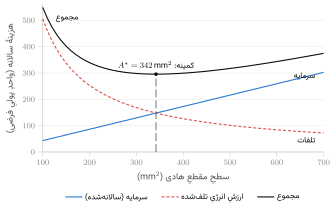
- اگر قیمتِ انرژی چهار برابر شود، مقطعِ اقتصادی چند برابر میشود؟
- چرا در بهینه، سهمِ سرمایه و ارزشِ تلفات برابرند؟ (از رابطهٔ مشتق استفاده کنید.)
- در مثال 6.28، آیا قانونِ کلوین معیارِ مناسبی برای انتخابِ مقطع است؟ چرا نه؟
6.3.6 گرم شدنِ هادی
شهود. گرمای \(RI^2\) که در هادی تولید میشود باید به محیط برود. هادی آنقدر گرم میشود که گرمای خروجی با گرمای تولیدی برابر شود. اگر خروجیِ گرما سخت باشد (کابلِ دفنشده در خاکِ خشک، کابلهای فشرده در یک کانال)، هادی داغتر میشود. و چون مقاومت با دما بالا میرود، هادیِ داغتر گرمای بیشتری تولید میکند: یک بازخوردِ مثبت.
مدل. سادهترین مدل، مقاومتِ گرمایی است (فصلِ ۴): اختلافِ دمای هادی و محیط با توانِ گرمایی متناسب است، \(T - T_\text{a} = R_\text{th}\,P\)، که \(R_\text{th}\) مقاومتِ گرمایی با یکای \(\text{K/W}\) است. برای یک متر کابل، با مقاومتِ الکتریکیِ \(R_{20}\) در هر متر:
\[ T = T_\text{a} + I^2 R_{20}\,\bigl[1 + \alpha\,(T - 20)\bigr]\,R_\text{th} \tag{6.25}\]
\(T\) در هر دو طرف هست، اما معادله خطی است و حلِ بسته دارد. با جابهجا کردنِ جملههای \(T\):
\[ T - T_\text{a} = \frac{I^2 R_{20}\,\bigl[1 + \alpha\,(T_\text{a} - 20)\bigr]\,R_\text{th}}{1 - I^2 R_{20}\,\alpha\,R_\text{th}} \tag{6.26}\]
مخرج پیامِ مهمی دارد: اگر \(I^2 R_{20}\,\alpha\,R_\text{th} \ge 1\)، هیچ دمای پایداری وجود ندارد و مدل فرار گرمایی را پیشبینی میکند. جریانِ بحرانی:
\[ I_\text{c} = \frac{1}{\sqrt{R_{20}\,\alpha\,R_\text{th}}} \tag{6.27}\]
حدودِ مدل. پیش از رسیدن به \(I_\text{c}\)، عایقِ کابل خیلی زودتر آسیب میبیند؛ عایقهای رایج برای دمای کاری حدودِ 70 تا 90 °C ساخته شدهاند (حدِ دقیق از برگهٔ دادهٔ کابل و استاندارد). همچنین \(R_\text{th}\) ثابت نیست: به سرعتِ باد، تابشِ خورشید روی کابل، رطوبتِ خاک و کابلهای مجاور بستگی دارد. ظرفیتِ جریانِ رسمیِ کابل از جدولها و روشهای استاندارد برای روشِ نصبِ معین میآید (فصلِ ۲۴)، نه از این مدل. این مدل برای فهمیدنِ چرایی است.
مثال 6.31 (کابلِ رشته در هوای آزاد) پرسش. کابلِ مسیِ 4 mm² با قطرِ بیرونیِ حدودِ 6 mm در هوای آزاد است. ضریبِ انتقالِ گرمای سطح را \(h = 10\ \text{W/(m}^2\text{K)}\) فرض کنید (مقدارِ معمولِ هوای کمباد؛ فرضی). دمای هادی را برای 14 A و 40 A در هوای 30 °C، و برای 60 A در هوای 50 °C بیابید و جریانِ فرار را حساب کنید.
پاسخ. مقاومتِ یک متر در 20 °C: \(1.72\times 10^{-8}/4\times 10^{-6} = 4.30\ \text{m}\Omega\). مقاومتِ گرماییِ یک متر از سطحِ جانبی (\(\pi d \times 1\ \text{m}\)):
\[ R_\text{th} = \frac{1}{h\,\pi\,d} = \frac{1}{10 \times \pi \times 0.006} = 5.31\ \text{K}\cdot\text{m/W} \]
با معادلهٔ 6.26، و برای مقایسه «تخمینِ یکمرحلهای» که مقاومت را در دمای محیط ثابت میگیرد:
E21 4 mm2 Cu: R20 = 4.30 mOhm/m; R_th = 1/(h pi d) = 1/(10.0 x pi x 0.006) =
5.31 K m/W
E21 I = 14 A, T_a = 30 C: one-step estimate 34.6 C, exact 34.7 C
E21 I = 40 A, T_a = 30 C: one-step estimate 67.9 C, exact 74.3 C
E21 I = 60 A, T_a = 50 C: one-step estimate 141.8 C, exact 185.6 C
E22 runaway current of the linear model: I_c = 1/sqrt(R20 alpha R_th) = 105.6
Aدر جریانِ کارِ رشته (حدودِ 14 A)، هادی فقط حدودِ 5 °C از هوا گرمتر است: کابلِ رشته برای افتِ ولتاژ و استحکام انتخاب شده، نه برای گرما. در 40 A اختلافِ تخمینِ یکمرحلهای و حلِ دقیق 6 °C است و در 60 A و هوای گرم بیش از 40 °C: هر چه به جریانِ بحرانیِ 105.6 A نزدیکتر شویم، بازخورد قویتر میشود و تخمینِ ساده خطرناکتر. در 60 A هادی به 186 °C میرسد که بسیار بالاتر از حدِ عایق است. وارسیِ مستقل: کدِ همراه همین دما را یک بار با حلِ بسته و یک بار با تکرارِ نقطهٔ ثابت (شروع از دمای محیط و جایگذاریِ پیاپی) مییابد و آزمونِ خودکار برابریِ آن دو را تا 0.0001 °C وارسی میکند.
- چرا تخمینِ یکمرحلهای همیشه دمای کمتری از حلِ دقیق میدهد؟
- کابلی که در آفتاب است، با کابلی که در سایه است، چه فرقی در معادلهٔ 6.25 دارد؟ (راهنمایی: یک جملهٔ گرمای ورودیِ دیگر.)
- چرا گروه کردنِ چند کابلِ پرجریان در یک کانال ظرفیتِ جریانِ هر کدام را کم میکند؟
6.3.7 گرمایشِ گذرا: ثابتِ زمانیِ گرمایی
معادلهٔ 6.25 دمای پایدار را میدهد. اما هادی برای رسیدن به آن دما زمان لازم دارد، چون باید خودش و عایقش را گرم کند. ظرفیتِ گرماییِ \(C_\text{th}\) (ژول بر کلوین) میگوید برای یک درجه گرم شدن چقدر انرژی لازم است. توازنِ انرژی در هر لحظه:
\[ C_\text{th}\,\frac{\mathrm{d}T}{\mathrm{d}t} = P - \frac{T - T_\text{a}}{R_\text{th}} \tag{6.28}\]
این همان شکلِ معادلهٔ مدارِ RC (معادلهٔ 6.18) است: \(R_\text{th}\) نقشِ مقاومت، \(C_\text{th}\) نقشِ خازن و دما نقشِ ولتاژ را دارد. پس پاسخ هم همان است: دما با ثابتِ زمانیِ گرمایی \(\tau_\text{th} = R_\text{th}\,C_\text{th}\) بهطورِ نمایی به دمای پایدار نزدیک میشود (با فرضِ ثابت بودنِ \(P\)):
\[ T(t) = T_\infty - (T_\infty - T_0)\,e^{-t/\tau_\text{th}} \]
این قیاسِ گرمایی–الکتریکی ابزارِ نیرومندی است که در فصلهای ۹ (گرمای نیمههادیها)، ۱۹ (باتری) و ۲۵ (ترانسفورماتور) دوباره بهکار میرود.
مثال 6.32 (کابلِ رشته چقدر زود گرم میشود؟) پرسش. برای کابلِ 4 mm² مسیِ مثال 6.31، ظرفیتِ گرماییِ هر متر را از مس و عایق (ظرفیتِ گرماییِ حجمیِ عایق \(1.9\times 10^{6}\ \text{J/(m}^3\text{K)}\)، فرضی) حساب کنید و ثابتِ زمانی را بیابید. اگر جریان ناگهان از صفر به 40 A برسد، دما پس از یک و سه ثابتِ زمانی چقدر است؟
پاسخ.
4 mm2 cable per metre: C_th = copper 13.8 + insulation 42.6 = 56.4 J/(K m)
(insulation c_v 1.9e6 J/(m3 K), assumed)
R_th = 5.31 K m/W; tau = R_th C_th = 299 s = 5.0 min
step to 40 A from 30 C: final 74.3 C; after one tau about 58.0 C; after 3 tau
72.1 Cثابتِ زمانی حدودِ پنج دقیقه است: یک اضافهبارِ چندثانیهای کابل را عملاً گرم نمیکند، اما اضافهباری که دهها دقیقه بماند، به دمای پایدار میرسد. پیامد برای حفاظت: فیوز یا کلید هم باید همین منطق را داشته باشد: اضافهجریانِ کم را دیرتر و اضافهجریانِ زیاد را سریعتر قطع کند. این همان مشخصهٔ زمان–جریانِ وسایلِ حفاظتی است (فصلِ ۲۶). فرض: منحنیِ نمایی با ثابتِ زمانیِ مقاومتِ ثابت ساخته شده، اما دمای نهایی (74.3 °C) همان حلِّ دقیقِ مثال 6.31 با اثرِ دما بر مقاومت است؛ با این اثر، ثابتِ زمانیِ واقعی کمی بلندتر (حدودِ 350 s) است و دما کمی دیرتر به آن میرسد.
6.3.8 گرمایشِ آدیاباتیک در اتصالِ کوتاه
در خطای بزرگ، جریان ممکن است هزاران آمپر باشد و حفاظت آن را در کسری از ثانیه تا چند ثانیه قطع کند. در این زمانِ کوتاه گرما فرصتِ بیرون رفتن ندارد: همهٔ آن در خودِ فلز میماند (فرآیندِ آدیاباتیک). پرسش این است: هادی چه مدت میتواند یک جریانِ خطا را تحمل کند پیش از آنکه عایقش آسیب ببیند؟
استخراج. برای یک متر هادی با مقطعِ \(A\) و ظرفیتِ گرماییِ حجمیِ \(c_v\) (ژول بر مترِ مکعب بر کلوین)، گرمای تولیدی در \(\mathrm{d}t\) برابرِ \(I^2\rho(T)/A\,\mathrm{d}t\) و گرمای لازم برای \(\mathrm{d}T\) برابرِ \(c_v A\,\mathrm{d}T\) است:
\[ c_v A\,\mathrm{d}T = \frac{I^2\rho(T)}{A}\,\mathrm{d}t \]
مدلِ خطیِ مقاومت (معادلهٔ 6.6) را به شکلِ \(\rho(T) = \rho_{20}\,\alpha\,(T + \beta)\) با \(\beta = 1/\alpha - 20\) مینویسیم (برای مس \(\beta = 234.5\)). متغیرها را جدا و از دمای آغاز \(T_i\) تا دمای پایانِ مجاز \(T_f\) انتگرال میگیریم:
\[ \int_{T_i}^{T_f}\frac{\mathrm{d}T}{T + \beta} = \frac{I^2\rho_{20}\,\alpha}{c_v A^2}\int_0^t \mathrm{d}t \qquad\Rightarrow\qquad I^2 t = k^2 A^2,\quad k = \sqrt{\frac{c_v}{\rho_{20}\,\alpha}\,\ln\frac{T_f + \beta}{T_i + \beta}} \tag{6.29}\]
حاصلضربِ \(I^2 t\) برای یک هادیِ معین ثابت است: دو برابر جریان، یکچهارم زمان. ثابتِ \(k\) فقط به فلز و به دو دمای آغاز و پایان (یعنی به نوعِ عایق) بستگی دارد.
مثال 6.33 (ثابتِ \(k\) از اصولِ اولیه، و تحملِ فیدر در خطای باتری) پرسش. \(k\) را برای مس و آلومینیوم از 90 تا 250 °C (بازهای که برای عایقهای پلیمرِ شبکهای در منابعِ کابل رایج است) و برای مس از 70 تا 160 °C حساب کنید. سپس بگویید فیدرِ آلومینیومیِ 240 mm² چه مدت میتواند جریانِ خطای یک قفسهٔ باتری (مثال 6.38) و جریانِ 10 kA را تحمل کند.
پاسخ. ظرفیتِ گرماییِ حجمی حاصلضربِ گرمای ویژه در چگالی است: \(385 \times 8960\) برای مس و \(897 \times 2700\) برای آلومینیوم (ژول بر مترِ مکعب بر کلوین):
adiabatic k (90 -> 250 C): copper 143.0, aluminium 93.2 A s^0.5/mm2; copper 70
-> 160 C: 115.0
240 mm2 Al withstands 24.2 kA for 0.85 s and 10 kA for 5.0 sعددهای \(k\) (حدودِ 143، 93 و 115) همان مقدارهاییاند که جدولهای استاندارد برای این ترکیبها منتشر میکنند: یک استخراجِ یکصفحهای، عددِ جدولِ استاندارد را بازتولید کرده است. درسِ مهم: وقتی میدانیم عددِ یک جدول از کجا آمده، میدانیم کِی میتوان به آن اعتماد کرد و کِی نه (مثلاً اگر دمای آغاز کمتر باشد، \(k\) بیشتر و تحمل بیشتر است). کدِ همراه این حلِ بسته را با انتگرالگیریِ عددیِ گامبهگام هم میسنجد و آزمونِ خودکار برابریِ آن دو را تا ۰٫۲ درصد وارسی میکند.
فیدرِ 240 mm² آلومینیوم جریانِ 24 kA را فقط حدودِ 0.85 s تحمل میکند. پس مدارهای باتری حفاظتِ سریع میخواهند و حفاظتی که برای مدارِ خورشیدی کافی است (جایی که جریانِ خطا چندصد آمپر است و مسئلهٔ آدیاباتیک اصلاً مطرح نیست) برای باتری کافی نیست.
تحملِ اتصالِ کوتاهِ کابل، زمانِ قطعِ حفاظت و هماهنگیِ آنها را طراحِ صلاحیتدار با جریانِ خطای محاسبهشده از مطالعهٔ اتصالِ کوتاه، دمای کاری و ضریبهای استانداردِ حاکم و دادهٔ سازندهٔ کابل تعیین میکند (فصلهای ۲۴ و ۲۶). استخراجِ این بخش برای فهمِ منشأ آن ضریبهاست.
- چرا در اتصالِ کوتاه میتوان فرض کرد گرما از هادی بیرون نمیرود؟
- اگر جریانِ خطا نصف شود، زمانِ تحمل چند برابر میشود؟
- چرا \(k\) آلومینیوم کمتر از مس است، با اینکه ظرفیتِ گرماییِ ویژهٔ جرمیِ آلومینیوم بیشتر است؟
6.3.9 ابزارِ اندازهگیری و اثرِ آن بر مدار
ابزارها. مولتیمتر ولتاژ، جریان و مقاومت را اندازه میگیرد. آمپرمترِ انبری جریان را بی آنکه مدار باز شود، از میدانِ مغناطیسیِ اطرافِ هادی میسنجد؛ برای DC باید از نوعِ اثرِ هال باشد، چون انبرِ ترانسفورماتوریِ معمولی فقط جریانِ متناوب را میبیند. آزمونگرِ مقاومتِ عایق با ولتاژِ بالای کنترلشده نشتِ جریان از عایق را میسنجد (فصلِ ۵۰). میکرواُهممتر مقاومتهای بسیار کوچک، مثلِ اتصالِ شینه یا مقاومتِ یک کابل، را با روشِ چهارسیمه میسنجد: جریان از دو سیم داده و ولتاژ با دو سیمِ دیگر برداشته میشود تا مقاومتِ خودِ سیمهای آزمون در نتیجه نیاید.
اثرِ بارگذاری. هیچ ابزاری مدار را دستنخورده نمیگذارد (شکل 6.27). ولتمتر یک مقاومتِ بزرگ (\(R_\text{V}\)، معمولاً حدودِ 10 MΩ) موازیِ عنصرِ اندازهگیریشده است و آمپرمتر یک مقاومتِ کوچک (\(R_\text{A}\)) سری با مسیر.
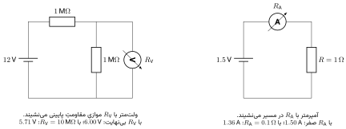
مثال 6.34 (ولتمتری که ولتاژ را عوض میکند) پرسش. در تقسیمکنندهٔ دو مقاومتِ 1 MΩ با 12 V، ولتمتر با مقاومتِ ورودیِ 10 MΩ و 1 MΩ چه میخواند؟ در مدارِ 1.5 V و 1 Ω، آمپرمتری با 0.1 Ω چه میخواند؟
پاسخ. ولتمتر موازیِ مقاومتِ پایینی است: \(1 \parallel 10 = 10/11 = 0.909\ \text{M}\Omega\) و خوانش \(12 \times 0.909/(1 + 0.909) = 5.714\ \text{V}\) بهجای 6 V (خطای 4.8 %). با ولتمترِ 1 MΩ: \(1 \parallel 1 = 0.5\) و خوانش \(4.000\ \text{V}\) (خطای 33 %). آمپرمتر: \(1.5/(1 + 0.1) = 1.364\ \text{A}\) بهجای 1.5 A.
قاعده: ولتمتر وقتی خوب است که \(R_\text{V}\) در برابرِ مقاومتِ مدار بسیار بزرگ باشد؛ آمپرمتر وقتی که \(R_\text{A}\) در برابرِ مقاومتِ مسیر بسیار کوچک باشد. در مدارهای قدرت (مقاومتهای کوچک) اثرِ ولتمتر ناچیز است؛ در مدارهای حسگر و کنترل (مقاومتهای بزرگ) نه (فصلِ ۳۴).
دقت و عدمِ قطعیت. دقتِ ابزارهای دیجیتال معمولاً به شکلِ «\(\pm\)(درصدی از خوانش + چند رقم)» نوشته میشود؛ «رقم» یعنی کوچکترین گامِ نمایشگر در آن محدوده. فصلِ ۲ این را با عدمِ قطعیت و کالیبراسیون پیوند میدهد؛ اینجا یک پیامدِ مهندسیاش را میبینیم.
مثال 6.35 (اندازهگیریِ افتِ ولتاژی که از خطای ابزار کوچکتر است) پرسش. میخواهیم افتِ 14.9 V فیدرِ نیروگاهِ P را با اندازهگیری وارسی کنیم: ولتاژِ خروجیِ جعبهٔ تجمیع و ورودیِ اینورتر را با یک ولتمتر بخوانیم و تفاضل بگیریم. دقتِ ابزار \(\pm 0.5\,\%\) از خوانش بهاضافهٔ ۲ رقم، با تفکیکِ 1 V است. آیا این روش کار میکند؟
پاسخ. خطای هر خوانش در حدودِ 1076 V: \(0.005 \times 1076 + 2 \times 1 = 7.4\ \text{V}\). در بدترین حالت، خطای تفاضلِ دو خوانش \(2 \times 7.4 = 14.8\ \text{V}\) است، هماندازهٔ خودِ افت! این روش هیچ چیزی را ثابت نمیکند. (اگر خطاهای دو خوانش مستقل و تصادفی باشند، با روشِ فصلِ ۲ عدمِ قطعیتِ ترکیبی حدودِ \(\sqrt{2}\times 7.4 \approx 10.5\ \text{V}\) است که هنوز بسیار بزرگ است.) تازه دو خوانش در دو زمانِ متفاوت انجام میشوند و تابش در این فاصله عوض میشود.
راهِ درست: مقاومتِ حلقه را در حالتِ بیبرق و جداشده با میکرواُهممتر و روشِ چهارسیمه بسنجید و افت را از \(R_\text{c}I\) حساب کنید. مقدارِ موردِ انتظار در 20 °C حدودِ 42.3 mΩ است و با جریانِ آزمونِ 10 A افتی حدودِ 423 mV میدهد که بهدقت اندازهپذیر است. درسِ کلی: پیش از اندازهگیری، بپرسید آیا ابزار و روش میتوانند پاسخ را تشخیص دهند (فصلِ ۲). اینکه آزمونِ مقاومت چه زمانی، توسطِ چه کسی و با چه رویهای انجام شود، در برنامهٔ آزمونِ راهاندازی است (فصلِ ۵۰).
اینها اصولاند، نه رویه؛ رویهٔ هر اندازهگیری در نیروگاه را کارفرما تعیین میکند و فقط فردِ آموزشدیده و مجاز انجامش میدهد.
- ردهٔ ابزار با مدار بخواند. ابزارهای اندازهگیری برای یک بیشینهٔ ولتاژ و یک ردهٔ اندازهگیری ساخته میشوند که نشان میدهد در برابرِ ضربههای ولتاژ در کدام بخشِ تأسیسات ایمناند؛ استانداردِ ایمنیِ این ابزارها در بخش 6.9 آمده است. مولتیمترِ معمولیِ 1000 V برای رشتهای که ولتاژِ مدارِ بازش در سرما به 1420 V میرسد کافی نیست.
- آمپرمتر هرگز موازی. آمپرمتر مقاومتِ تقریباً صفر دارد؛ اگر آن را دو سرِ یک منبع ببندید، اتصالِ کوتاه ساختهاید. در مدارِ DC پرانرژی، نتیجه قوس و انفجار است. حالتِ آمپرمترِ ابزار را فقط با سیمِ آزمونِ درست و فقط در مدارِ مناسب بهکار ببرید.
- سیمِ آزمون هم ابزار است. عایقِ سالم، ردهٔ ولتاژِ درست، نوکِ محافظدار و فیوزِ داخلیِ سالم.
- پیش و پس از اندازهگیری، ابزار را روی یک منبعِ معلوم وارسی کنید. ابزارِ خراب که «صفر» نشان دهد، یکی از دلایلِ حادثههای برقی است (بخش 6.4.10).
- چرا انبرِ جریانِ متناوب نمیتواند جریانِ رشتهٔ خورشیدی را بخواند؟
- ولتمتری با 10 MΩ دو سرِ یک مقاومتِ 100 Ω چه خطایی دارد؟
- چرا روشِ چهارسیمه برای اندازهگیریِ مقاومتهای کوچک لازم است؟
6.3.10 پایشِ عایق و نشتِ جریان در آرایه
مثال 6.8 نشان داد مقاومتِ عایقِ یک آرایهٔ بزرگ ذاتاً کم است. این بخش میگوید با آن چه میکنیم.
آنچه اندازه گرفته میشود. دستگاهِ پایشِ عایق (در اینورتر یا جدا) مقاومتِ میانِ قطبهای آرایه و زمینِ حفاظتی را پیوسته یا پیش از هر بار وصل شدن میسنجد. ایدهٔ پایه یک تقسیمکنندهٔ ولتاژ است: دستگاه یک مقاومتِ معلوم میانِ یک قطب و زمین میگذارد، ولتاژِ دو سرِ آن را میخواند و از نسبتِ ولتاژها مقاومتِ نشتی را حساب میکند (همان منطقِ مثال 6.34؛ جزئیاتِ روشها به سازنده بستگی دارد).
جریانِ نشتی و ایمنی. اگر مقاومتِ عایقِ کلِ آرایه نسبت به زمین \(R_\text{ins}\) باشد و فردی قابِ یک ماژول را لمس کند در حالی که قاب به زمین وصل نیست (عیبِ زمینکردن)، بدنِ او مسیرِ دیگری موازیِ این نشتی میشود. هر چه \(R_\text{ins}\) کمتر، جریانِ در دسترس بیشتر. به همین دلیل دو لایهٔ حفاظت هست: اتصالِ همهٔ قابها و سازهها به زمینِ حفاظتی (تا قاب ولتاژِ خطرناک نگیرد) و پایشِ عایق (تا خطای اول پیش از تبدیل شدن به خطای دوم یا تماسِ انسانی دیده شود؛ 2).
مثال 6.36 (هشدارِ عایقِ صبحگاهی را چگونه تفسیر کنیم؟) پرسش. اینورترِ شمارهٔ ۴ نیروگاهِ P هر روز ساعتِ ۶ صبح هشدارِ «عایقِ کم» میدهد و تا ساعتِ ۹ هشدار برطرف میشود. اینورترهای دیگر هشدار ندارند. با مثال 6.8، سه فرضیه بسازید و بگویید کدام داده هر کدام را تأیید یا رد میکند.
پاسخ (معیارها). (۱) رطوبتِ عادی: اگر آستانهٔ هشدار به مقاومتِ عایقِ «خیس»ِ کلِ آرایه (11.4 kΩ در مثال) نزدیک باشد، رطوبتِ صبح بهتنهایی هشدار میسازد. اما چرا فقط اینورترِ ۴؟ آرایهٔ بزرگتر، ماژولهای کهنهتر یا جای مرطوبتر (کنارِ آبراهه). داده: اندازهٔ آرایه، دمای نقطهٔ شبنم، سوابقِ اینورترهای مشابه. (۲) ورودِ آب به یک جعبهٔ تجمیع یا اتصالدهنده: نشتیِ متمرکز که با خشک شدن کم میشود. داده: اندازهگیریِ عایق جعبه به جعبه با جدا کردنِ بخشها (فردِ مجاز، در حالتِ بیبرق)؛ اگر یک جعبه مقاومتِ بسیار کمتری از بقیه داشته باشد، فرضیه تأیید میشود. (۳) آسیبِ کابل (مثلاً جونده یا سایش) که در رطوبت رسانا میشود: همان آزمونِ بخشبهبخش، سپس بازرسیِ چشمی. درس: «با خشک شدن برطرف میشود» دلیلِ بیخطری نیست؛ خطای دوم ممکن است در یک صبحِ مرطوب رخ دهد.
عدمِ قطعیتِ ترکیبی. در مثال 6.35 خطای دو خوانش را یک بار «بدترین حالت» جمع کردیم و یک بار «ریشهٔ مجموعِ مربعها». قاعدهٔ کلی، که در فصلِ ۲ ساخته میشود: اگر خطاها مستقل و تصادفی باشند، عدمِ قطعیتِ ترکیبی \(u = \sqrt{u_1^2 + u_2^2 + \dots}\) است؛ اگر سیستماتیک و همجهت باشند، باید جمعِ ساده را بهکار برد. خطای دو خوانش با یک ابزار اغلب بخشی سیستماتیک دارد (مثلاً خطای کالیبراسیون) که در تفاضل حذف میشود. پس دانستنِ منشأ خطا مهمتر از فرمولِ ترکیب است.
- چرا اتصالِ قابها به زمین و پایشِ عایق مکملِ هماند و هیچکدام دیگری را بینیاز نمیکند؟
- اگر نیمی از آرایهٔ یک اینورتر جدا شود، مقاومتِ عایقِ دیدهشده چه میشود؟
- دو خوانش با خطای تصادفیِ مستقلِ \(\pm 3\ \text{V}\) و \(\pm 4\ \text{V}\) دارید. عدمِ قطعیتِ ترکیبیِ تفاضلشان چقدر است؟
6.3.11 قطبیت و مسیرهای خطا
خطا (به انگلیسی fault) هر مسیرِ ناخواستهای برای جریان است: اتصالِ کوتاه میانِ دو قطب، خطای زمین میانِ یک قطب و بدنه یا زمین، قطعیِ مدار (مدارِ باز ناخواسته)، و قطبیتِ معکوس. در هر کدام باید بپرسیم: جریانِ خطا از کجا میآید، از کجا میگذرد، چقدر است، و چه چیزی آن را میبیند و قطع میکند؟
آرایشهای زمینیِ DC. آرایهٔ خورشیدی ممکن است شناور باشد (هیچ قطبی به زمین وصل نیست) یا یکی از قطبهایش به زمین وصل باشد (گاهی از راهِ یک مقاومت یا فیوز؛ این کار را «زمینکردنِ کارکردی» مینامند). انتخاب به نوعِ اینورتر و ماژول و استانداردِ حاکم بستگی دارد و در طراحیِ واقعی یک تصمیمِ مستند است (فصلهای ۹ و ۲۶). در هر حال، قابهای فلزی، سازهها و بدنهٔ تجهیزات برای ایمنیِ افراد به زمینِ حفاظتی بسته میشوند.
2 رفتارِ آرایهٔ شناور را نشان میدهد. خطای اول (مثلاً قطبِ مثبت به قاب) مدار را نمیبندد: جریانِ خطا تقریباً صفر است و هیچ فیوزی نمیسوزد. اما دو چیز عوض میشود: آرایه دیگر شناور نیست و قطبِ منفی اکنون با ولتاژِ کاملِ آرایه نسبت به زمین است. خطای دوم روی قطبِ مخالف، حلقه را از راهِ زمین میبندد و جریانی تا حدِ جریانِ اتصالِ کوتاهِ آرایه جاری میشود؛ با قوس و آتش ممکن است. به همین دلیل خطای اول باید با پایشِ عایق (اندازهگیریِ پیوستهٔ مقاومتِ عایقِ آرایه نسبت به زمین) آشکار و پیش از رخ دادنِ خطای دوم رفع شود.
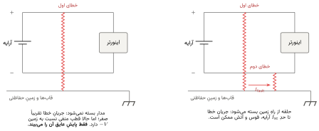
مثال 6.37 (جریانِ برگشتی به یک رشتهٔ معیوب) پرسش. در جعبهٔ تجمیعِ نیروگاهِ P، ۲۴ رشته موازیاند. اگر در یکی از رشتهها اتصالِ کوتاه رخ دهد (مثلاً چند ماژولش اتصالِ کوتاه شوند)، چه جریانی از آن رشته میگذرد؟ حدِ «بیشینهٔ فیوزِ سری» ماژول در برگهٔ داده 25 A است (ساختگی).
پاسخ. رشتهٔ معیوب ولتاژِ کمتری دارد و ۲۳ رشتهٔ سالم، که با هم موازیاند، جریانِ خود را از راهِ شینه به درونِ آن میرانند (همان جریانِ «منفی» در خودآزماییِ بخش 6.2.11). در بدترین حالت، هر رشتهٔ سالم تا جریانِ اتصالِ کوتاهش میدهد:
\[ I_\text{back} = (24 - 1) \times 13.98 = 321.5\ \text{A} \]
این حدودِ سیزده برابرِ حدِ 25 A ماژول است. کابل و ماژولِ رشتهٔ معیوب برای چنین جریانی ساخته نشدهاند و گرمایش، قوس و آتش محتمل است. نتیجه: وقتی رشتههای زیادی موازیاند، هر رشته به حفاظتِ اضافهجریان نیاز دارد (1). برای مقایسه: با دو رشتهٔ موازی، جریانِ برگشتی \(13.98\ \text{A}\) و زیرِ 25 A است؛ با سه رشته، 27.96 A و بالای آن. این حسابِ ساده نشان میدهد چرا قواعدِ طراحی مرزی را میانِ «تعدادِ کمِ رشته بی فیوز» و «تعدادِ بیشتر با فیوز» میگذارند؛ مرزِ دقیق و ضریبهایش را استانداردِ حاکم تعیین میکند.
- چرا خطای اول در آرایهٔ شناور «بیصدا» است و چرا همین خطرناکش میکند؟
- اگر یک قطبِ آرایه عمداً به زمین وصل باشد، خطای زمین روی قطبِ دیگر چه میکند؟
- قطبیتِ معکوسِ یک رشته در جعبهٔ تجمیع چه ولتاژی دو سرِ فیوز یا کلیدِ آن میگذارد؟
6.3.12 منبعِ ولتاژیِ پرقدرت: خطا در مدارِ باتری
رشتهٔ خورشیدی منبعِ محدود به جریان است؛ باتری منبعِ ولتاژی با مقاومتِ درونیِ بسیار کوچک. همین تفاوت، رفتارِ دو مدار را در اتصالِ کوتاه به دو دنیای جدا میبرد (شکل 6.29).
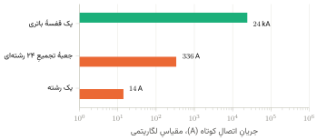
مثال 6.38 (اتصالِ کوتاه در یک قفسهٔ باتری) پرسش. جریانِ اتصالِ کوتاهِ یک رشته، یک جعبهٔ تجمیعِ ۲۴ رشتهای و یک قفسهٔ باتری با نیروی محرکهٔ 1331.2 V و مقاومتِ درونیِ 50 mΩ به اضافهٔ 5 mΩ کابل (فرضی) را مقایسه کنید.
پاسخ. رشته \(I_\text{sc} = 13.98\ \text{A}\)؛ جعبه \(24 \times 13.98 = 335.5\ \text{A}\)؛ قفسه \(1331.2/0.055 = 24.2\ \text{kA}\):
PV string short circuit: 13.98 A; 24 strings: 335.5 A
battery rack (assumed EMF 1331.2 V, 50 mOhm + 5 mOhm cable): 24.2 kAیک قفسهٔ باتری بیش از هفتاد برابرِ کلِ یک جعبهٔ تجمیع و بیش از هزار و هفتصد برابرِ یک رشته جریانِ خطا دارد، و چند قفسهٔ موازی چند برابرِ آن. پیامدها: (۱) فیوزها و کلیدهای مدارِ باتری باید ظرفیتِ قطعِ چنین جریانی را در DC داشته باشند (فصلهای ۱۹، ۴۵ و ۴۶)؛ (۲) کابلها با معادلهٔ 6.29 سنجیده میشوند، نه فقط با جریانِ کار (مثال 6.33)؛ (۳) قوسِ خطای باتری انرژیِ بسیار بیشتری دارد و ارزیابیِ خطرِ قوس برای آن ضروری است (فصلهای ۲۶ و ۳۲)؛ (۴) باتری را نمیتوان خاموش کرد: حتی جدا شده از مبدل، ولتاژش سر جایش است (بخش 6.4.7).
- چرا یک منبعِ ولتاژی با مقاومتِ درونیِ کم، در اتصالِ کوتاه خطرناکتر از یک منبعِ جریان است؟
- اگر چهار قفسهٔ مثال 6.38 موازی باشند و خطا روی شینهٔ مشترک رخ دهد، جریانِ خطا تقریباً چقدر است؟
6.3.13 پوششِ کاری: ولتاژ و جریان در دامنهٔ دما و تابش
هر مدارِ DC خورشیدی باید در همهٔ ترکیبهای ممکنِ دما و تابش در حدودِ تجهیزاتش بماند. این مجموعه را پوششِ کاری (به انگلیسی operating envelope) مینامیم و دو مرزش مهمترند:
بیشینهٔ ولتاژ در سردترین لحظهای که آفتاب هست و جریانی کشیده نمیشود (مثلاً صبحِ زمستان با اینورترِ خاموش): ولتاژِ مدارِ بازِ سلولهای سرد. با ضریبِ دماییِ \(\beta_{V_\text{oc}}\) (درصد بر درجه، منفی) از برگهٔ داده:
\[ V_\text{oc}(T) = N_\text{s}\,V_\text{oc,STC}\,\Bigl[1 + \frac{\beta_{V_\text{oc}}}{100}\,(T - 25)\Bigr] \tag{6.30}\]
که \(N_\text{s}\) تعدادِ ماژولِ سری است. این ولتاژ نباید از بیشینهٔ ولتاژِ سامانه (در PVM-550، 1500 V) و ردهٔ ولتاژِ اینورتر، فیوز، کلید و کابل بیشتر شود. پس:
\[ N_\text{s,max} = \left\lfloor \frac{V_\text{max}}{V_\text{oc,STC}\,\bigl[1 + \beta_{V_\text{oc}}(T_\text{min} - 25)/100\bigr]} \right\rfloor \]
کمینهٔ ولتاژ در داغترین حالتِ کار: ولتاژِ نقطهٔ بیشینهٔ توانِ سلولهای داغ، که باید بالاتر از کمینهٔ بازهٔ ردیابیِ اینورتر بماند؛ وگرنه اینورتر نمیتواند در نقطهٔ بیشینه کار کند.
بیشینهٔ جریان در بیشترین تابش: جریانِ اتصالِ کوتاه با تابش متناسب است و تابش گاهی، مثلاً هنگامِ بازتابِ لبهٔ ابر، از 1000 W/m² بیشتر میشود. استانداردها برای این منظور ضریبهایی روی \(I_\text{sc}\) میگذارند که باید از متنِ استانداردِ حاکم برداشت.
مثال 6.39 (چند ماژول در یک رشته؟) پرسش. کمینهٔ دمای سلول را −10 °C فرض کنید (فرضِ A-016؛ دادهٔ اقلیمیِ ساختگاه در فصلِ ۱۲). بیشینهٔ ماژولِ سری برای 1500 V چند است؟ اگر کمینهٔ دما −20 °C باشد چه؟ و آیا ۲۶ ماژول در 70 °C هنوز بالای کمینهٔ بازهٔ ردیابیِ فرضیِ اینورتر (850 V، فرضِ A-020) است؟
پاسخ. ولتاژِ مدارِ بازِ یک ماژول در −10 °C، از معادلهٔ 6.30:
\[ V_\text{oc}(-10) = 49.90\,\bigl[1 - 0.0027 \times (-35)\bigr] = 49.90 \times 1.0945 = 54.62\ \text{V} \]
\(N_\text{s,max} = \lfloor 1500/54.62 \rfloor = \lfloor 27.46 \rfloor = 27\). در −20 °C: \(49.90 \times 1.1215 = 55.96\ \text{V}\) و \(\lfloor 26.80 \rfloor = 26\). یعنی انتخابِ ۲۶ ماژول تا −20 °C امن است و ۲۷ ماژول فقط تا حدودِ −10 °C. گزارشِ برنامه:
cell -20 C: V_oc = 1455.0 V
cell -10 C: V_oc = 1420.0 V
cell 0 C: V_oc = 1385.0 V
cell 25 C: V_oc = 1297.4 V
cell 45 C: V_oc = 1227.3 V
cell 65 C: V_oc = 1157.3 V
cell 75 C: V_oc = 1122.3 V
26 modules at -10 C: V_oc = 1420.0 V
27 modules at -10 C: V_oc = 1474.6 V
28 modules at -10 C: V_oc = 1529.2 V EXCEEDS 1500 V
29 modules at -10 C: V_oc = 1583.9 V EXCEEDS 1500 Vکمینهٔ ولتاژ: ضریبِ دماییِ \(V_\text{mp}\) در برگهٔ دادهٔ ساختگی نیست؛ ضریبِ \(V_\text{oc}\) را بهجایش بهکار میبریم، که تقریبی است (در واقع \(V_\text{mp}\) کمی تندتر از \(V_\text{oc}\) با دما افت میکند):
\[ V_\text{mp}(70) \approx 26 \times 41.96 \times \bigl[1 - 0.0027 \times 45\bigr] = 958.4\ \text{V} > 850\ \text{V} \]
حاشیه حدودِ 108 V است. چرا ۲۶ و نه ۲۷؟ ۲۷ ماژول در −10 °C به 1474.6 V میرسد، با حاشیهٔ 25 V تا حد، و اگر سردترین لحظهٔ ساختگاه −17 °C باشد از حد میگذرد. تا وقتی دادهٔ اقلیمیِ اندازهگیریشده نداریم، ۲۶ تصمیمِ محتاطانهتر است. این تصمیم با دلیلش در دفترِ تصمیم ثبت میشود (D-002، بخش 6.10).
- چرا بیشینهٔ ولتاژ را با کمینهٔ دما حساب میکنیم و نه بیشینه؟
- چرا ولتاژِ مدارِ باز و نه ولتاژِ نقطهٔ بیشینهٔ توان؟
- اگر حدِ ولتاژِ سامانه 1000 V بود، چند ماژول در −10 °C مجاز بود؟
6.3.14 پوششِ ولتاژ با دادهٔ یک سال
در مثال 6.39 دمای کمینه را فرض کردیم. بستهٔ داده یک سال دادهٔ ساعتیِ دما و تابش دارد؛ آیا میتوانیم فرض را با آن وارسی کنیم؟ دمای سلول با دمای هوا یکی نیست: سلولِ زیرِ آفتاب گرمتر از هواست. سادهترین مدل از دمای عملکردیِ نامیِ سلول (NOCT در برگهٔ داده: دمای سلول در 800 W/m²، هوای 20 °C و بادِ 1 m/s) استفاده میکند:
\[ T_\text{cell} = T_\text{air} + \frac{\text{NOCT} - 20}{800}\,G \tag{6.31}\]
برای PVM-550 با 45 °C، سلول در هر 100 W/m² حدودِ 3.1 °C گرمتر از هواست. فصلِ ۱۰ مدلهای دقیقتر (اثرِ باد، نوعِ نصب) را میسازد.
مثال 6.40 (سردترین و داغترین سلول در سالِ داده) پرسش. با معادلهٔ 6.31 و دادهٔ ساعتیِ بسته، دمای سلول را در همهٔ ساعتهای روشن حساب کنید. سردترین و داغترین ساعت کدام است و بیشینهٔ ولتاژِ مدارِ بازِ رشته در سال چقدر میشود؟
پاسخ.
data: Plant P Reference Data Pack 1.0.0, scenario S0 (no-BESS); T_cell = T_air
+ 25/800 G (NOCT 45 C)
daylight hours: 4569; coldest lit hour 2023-12-30 07:00:00+04:00: air -3.9 C,
G 18 W/m2, cell -3.3 C
hottest cell hour 2023-07-09 12:00:00+04:00: air 39.4 C, G 1002 W/m2, cell
70.7 C
highest string V_oc in the year (26 modules): 1396.7 V; 27 modules: 1450.4 V
hours with GHI above 1000 W/m2: 17
caution: at sunrise V_oc is lower than this model says (low irradiance) and
cells can be colder than air on clear nights; chapter 10 refines thisشکل 6.30 بیشینهٔ روزانهٔ ولتاژِ مدارِ باز را نشان میدهد. در این سالِ ساختگی، ۲۶ ماژول هیچگاه از 1397 V بالاتر نمیروند و حتی ۲۷ ماژول در 1450 V زیرِ حد میمانند. پس آیا ۲۷ ماژول مجاز است؟ نه بر پایهٔ این داده: (۱) یک سال، آن هم ساختگی، سردترین روزِ سی سال عمرِ نیروگاه را نشان نمیدهد (فصلهای ۱۲ و ۱۶)؛ (۲) در شبهای صاف، ماژول با تابش به آسمان از هوا سردتر میشود و در طلوع، تابشِ کم کافی است تا ولتاژ نزدیکِ \(V_\text{oc}\) ِ کامل باشد، در حالی که مدلِ معادلهٔ 6.31 این را نمیبیند؛ (۳) استانداردهای طراحی معمولاً دمای طراحیِ کمینه را از سوابقِ بلندمدتِ اقلیمی تعیین میکنند. تصمیمِ D-002 (۲۶ ماژول) با این شواهد تقویت میشود، نه تغییر. درسِ روش: دادهای که در دست داریم ممکن است برای یک پرسش کافی و برای پرسشِ دیگر ناکافی باشد؛ بیشینهٔ ولتاژِ سیساله پرسشِ حدی است و یک سال داده پاسخِ آن را نمیدهد.
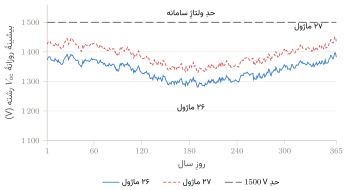
- سلولی در هوای 35 °C و تابشِ 900 W/m² چه دمایی دارد؟
- چرا بیشینهٔ ولتاژِ مدارِ باز در زمستان رخ میدهد و نه در تابستان؟
- برای تصمیم دربارهٔ ۲۷ ماژول، به چه دادهای نیاز داریم و چه کسی آن را تأیید میکند؟
6.4 پ. مدارِ جریانِ مستقیمِ خورشیدی
6.4.1 مرزهای رشته، آرایه و ورودیِ اینورتر
سمتِ DC یک بلوکِ خورشیدی از چند مدار ساخته شده است که هر کدام مرز، جریان و حفاظتِ خودش را دارد (شکل 6.31):
- رشته (به انگلیسی PV string): ماژولهای سری، از اولین ماژول تا اتصالش به جعبهٔ تجمیع. جریانش جریانِ یک ماژول است و ولتاژش جمعِ ولتاژهای ماژولها.
- جعبهٔ تجمیع (به انگلیسی combiner box): رشتهها را، هر کدام از راهِ حفاظتِ خودش، روی دو شینهٔ مثبت و منفی موازی میکند؛ معمولاً یک کلیدِ جداکننده و برقگیر هم دارد.
- مدارِ آرایه (به انگلیسی PV array circuit): از شینههای جعبهٔ تجمیع، از راهِ فیدرِ DC، تا ورودیِ اینورتر. جریانش جمعِ جریانِ رشتههاست.
- ورودیِ اینورتر: کلیدِ جداکنندهٔ DC، حفاظتها و پایشِ عایقِ اینورتر.
در بعضی طرحها چند جعبهٔ تجمیع ابتدا در یک جعبهٔ تجمیعِ بزرگتر جمع میشوند یا رشتهها مستقیماً به اینورترهای کوچکِ «رشتهای» میروند و اصلاً جعبهٔ تجمیع ندارند؛ انتخابِ معماری در فصلهای ۹، ۱۰ و ۱۸ بررسی میشود. اینجا معماریِ «اینورترِ مرکزی با جعبهٔ تجمیع» را مبنا گرفتهایم چون مسئلهٔ فیدرِ بزرگ را روشنتر نشان میدهد.
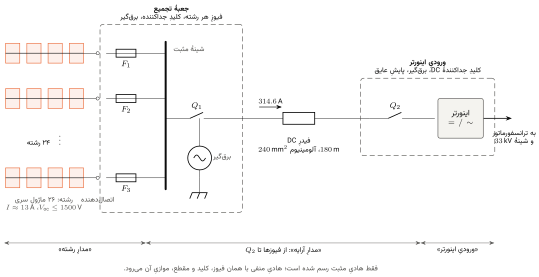
چرا مرزها مهماند؟ چون هر مرز به سه پرسش پاسخ میدهد: (۱) ردهٔ تجهیز: کابل، فیوز و کلیدِ هر مدار برای جریانِ همان مدار انتخاب میشوند؛ کابلِ رشته برای حدودِ 14 A، فیدر برای حدودِ 315 A. (۲) حفاظت: هر مدار باید در برابرِ جریانی که میتواند از همهٔ منابعِ دیگر به آن برسد، حفاظت شود (مثال 6.37). (۳) جداسازی: برای کار روی هر مدار باید بدانیم کدام کلید آن را از کدام منبع جدا میکند و کدام منبع را هیچ کلیدی جدا نمیکند.
مثال 6.41 (شمارشِ مدارهای نیروگاهِ P) پرسش. با رشتههای ۲۶ ماژولیِ PVM-550 و جعبههای تجمیعِ ۲۴ رشتهای، برای 60 MWp چند رشته، چند ماژول و چند جعبهٔ تجمیع لازم است؟
پاسخ. توانِ هر رشته \(26 \times 550 = 14.3\ \text{kWp}\). تعدادِ رشته: \(\lceil 60\,000/14.3 \rceil = \lceil 4195.8 \rceil = 4196\)، با \(4196 \times 26 = 109\,096\) ماژول و توانِ واقعیِ \(60.003\ \text{MWp}\). جعبهٔ تجمیع: \(\lceil 4196/24 \rceil = 175\) (که آخری فقط ۲۰ رشته دارد، یا رشتهها کمی متفاوت تقسیم میشوند). پیامد: بیش از صدهزار ماژول، چهارهزار رشته، حدودِ صدودههزار جفت اتصالدهنده (مثال 6.43)، ۱۷۵ فیدرِ DC. در این مقیاس، یک خطای کوچکِ تکرارشونده، مثلاً یک نوع اتصالِ بد، به دهها نقطهٔ داغ و آتشسوزیِ احتمالی تبدیل میشود؛ پس کیفیتِ ساخت و نصب به اندازهٔ طراحی اهمیت دارد (فصلهای ۴۰ و ۴۹).
6.4.2 چرا جریانِ مستقیمِ خورشیدی متفاوت است
اگر با برقِ خانگی آشنا باشید، شاید فکر کنید «کلید را بزن، مدار بیبرق میشود». در سمتِ DC خورشیدی این فرض غلط است. پنج تفاوت این مدارها را ویژه میکند:
- منبع را نمیتوان خاموش کرد. تا نور به ماژول میرسد، ولتاژ هست: صبحِ زود، روزِ ابری، حتی زیرِ نورِ ماه یا چراغهای قوی ولتاژی ایجاد میشود. باز کردنِ کلیدِ اینورتر فقط جریان را صفر میکند؛ ولتاژِ رشتهها به \(V_\text{oc}\) میرسد که از ولتاژِ کار بیشتر است.
- منبع محدود به جریان است. جریانِ اتصالِ کوتاهِ یک رشته کمی بیشتر از جریانِ کارِ آن است (بخش 6.3.1)، پس فیوزِ رشته در برابرِ خطای درونِ خودِ رشته کاری از پیش نمیبرد؛ فقط در برابرِ جریانی که رشتههای دیگر به آن میرانند حفاظت میکند.
- قوسِ DC خودبهخود خاموش نمیشود. جریانِ متناوب صد بار در ثانیه از صفر میگذرد و قوس در هر عبور از صفر فرصتِ خاموش شدن دارد. جریانِ مستقیم هیچگاه صفر نمیشود؛ قوسی که شکل بگیرد، تا منبع قطع یا فاصله بهاندازهٔ کافی زیاد نشود، میسوزد (بخش 6.4.6).
- ولتاژ بالاست. تا 1500 V DC در نیروگاههای امروزی، بیش از شش برابرِ ولتاژِ برقِ خانگی.
- گستره بزرگ است و در فضای باز. دهها هکتار کابل و اتصال در آفتاب، باران، گردوغبار، یخزدگی و زیرِ دندانِ جوندگان، که به مرور عایقها را فرسوده میکنند.
همین پنج تفاوت سه نیازمندیِ ویژه میسازند که در ادامه میآیند: جداسازیِ ویژه، حفاظتِ اضافهجریانِ ویژه، و روشِ کارِ ویژه.
6.4.3 جداسازی
جداسازی (به انگلیسی isolation) یعنی ایجادِ یک فاصلهٔ عایقِ قابلِ اعتماد میانِ بخشی که روی آن کار میشود و همهٔ منابعِ انرژی. ابزارهای جداسازیِ سمتِ DC:
- کلیدِ جداکنندهٔ قابلِ قطع زیرِ بار (به انگلیسی load-break switch): میتواند جریانِ کار را قطع کند و قوس را در خود خاموش کند. باید برای DC و برای ولتاژِ بیشینهٔ مدار ردهبندی شده باشد؛ کلیدی که برای AC یا ولتاژِ کمتر ساخته شده، ممکن است قوس را نتواند خاموش کند.
- جداکنندهٔ بیبار (به انگلیسی off-load disconnector): فقط وقتی جریانی نیست باز یا بسته میشود؛ وظیفهاش ایجادِ فاصلهٔ امن و دیدنی است، نه قطعِ جریان.
- اتصالدهندهها (به انگلیسی connectors): ماژولها و رشتهها با اتصالدهندههای ویژه به هم وصل میشوند که معمولاً برای جدا کردن زیرِ بار ساخته نشدهاند. کشیدنِ یک اتصالدهنده در حالی که جریان برقرار است، میتواند قوسی بسازد که به دست و صورت آسیب برساند و اتصالدهنده را از بین ببرد.
- فیوزها هم با برداشتنِ فیوز یک فاصله ایجاد میکنند، اما برداشتنِ فیوز زیرِ بار همان خطرِ اتصالدهنده را دارد، مگر آنکه پایهٔ فیوز برای این کار ساخته شده باشد.
در شکل 6.31، باز کردنِ \(Q_2\) فیدر را از اینورتر جدا میکند، اما فیدر، جعبهٔ تجمیع و همهٔ رشتهها همچنان از سمتِ رشتهها برقدارند. باز کردنِ \(Q_1\) فیدر را از رشتهها جدا میکند، اما خودِ رشتهها، کابلهایشان و شینهٔ جعبهٔ تجمیع برقدار میمانند. هیچ کلیدی رشته را بیبرق نمیکند؛ برای کار روی خودِ رشته، باید جریانش را صفر کرد، رشته را در اتصالدهنده یا پایهٔ فیوزِ مناسب جدا کرد، و آنگاه هنوز با یک منبعِ زنده سروکار داشت که فقط تاریکی یا پوشاندنِ ماژولها آن را ضعیف میکند (بخش 6.4.10).
- با \(Q_1\) و \(Q_2\) هر دو باز، کدام بخشهای شکل 6.31 برقدارند؟
- چرا کلیدِ AC با همان ولتاژ و جریان نمیتواند بهجای کلیدِ DC بهکار رود؟
- چه تفاوتی است میانِ «قطعِ جریان» و «جداسازی»؟
6.4.4 حفاظتِ اضافهجریان
هدف. حفاظتِ اضافهجریان (فیوز یا کلیدِ خودکار) باید کابل و تجهیز را پیش از آسیبِ حرارتی از مدار جدا کند. برای این کار باید (۱) جریانِ عادی را بی قطع عبور دهد، (۲) جریانِ خطا را با قطع پاسخ دهد، (۳) برای ولتاژ و نوعِ جریانِ مدار، یعنی DC تا 1500 V، ردهبندی شده باشد تا بتواند جریانِ خطا را واقعاً قطع کند، و (۴) با تجهیزی که حفاظت میکند هماهنگ باشد.
در رشته. از مثال 6.37 دیدیم که خطر از جریانِ برگشتیِ رشتههای دیگر است. پس فیوزِ هر رشته:
- باید بیشتر از بیشینهٔ جریانِ عادیِ رشته باشد، با حاشیه برای تابشِ زیاد و گرمای جعبه؛
- باید کمتر یا مساوی حدِ «بیشینهٔ فیوزِ سریِ» ماژول باشد که سازنده با آزمون تعیین کرده است؛
- و باید از نوعِ ویژهٔ DC خورشیدی باشد که میتواند جریانهای خطای کم، فقط چند برابرِ جریانِ نامیِ فیوز، را هم قطع کند (معیارِ ردهبندیِ این فیوزها در بخش 6.9).
مثال 6.42 (پنجرهٔ مجازِ فیوزِ رشته) پرسش. برای رشتههای نیروگاهِ P اندازهٔ فیوز را برآورد کنید. فرض کنید (فرضِ آموزشی، باید با استانداردِ حاکم جایگزین شود) حدِ پایینِ فیوز \(1.5 \times I_\text{sc}\) است. اندازههای استانداردِ فیوز را ۱۵، ۲۰ و ۲۵ آمپر در نظر بگیرید.
پاسخ. حدِ پایین: \(1.5 \times 13.98 = 20.97\ \text{A}\)، پس کوچکترین اندازهٔ مجاز 25 A است. حدِ بالا: بیشینهٔ فیوزِ سریِ ماژول 25 A. پنجره فقط یک اندازه را مجاز میکند: 25 A. پیامدِ طراحی: پنجره تنگ است. اگر سازنده یا استاندارد ضریبِ بزرگتری بخواهد، یا ماژولی با جریانِ بیشتر انتخاب شود، ممکن است هیچ فیوزی در پنجره نماند و طراح باید معماری را عوض کند (رشتههای کمتر در هر ورودی، یا ماژولی با حدِ فیوزِ بیشتر). وضعیت: ضریبِ 1.5 فرض است؛ مقدارِ الزامی را از استانداردِ حاکم و دستورِ سازندهٔ ماژول بگیرید (مجهولِ U-011).
در فیدر. فیدرِ آرایه هم باید در برابرِ اضافهجریان حفاظت شود اگر منبعی بتواند جریانی بیش از ظرفیتش به آن براند؛ این به تعدادِ جعبههای تجمیعی که روی یک ورودیِ اینورتر موازیاند و به اینکه اینورتر از سمتِ خودش (خازنهای ورودی) چه جریانی میتواند به خطا بدهد بستگی دارد. این تحلیل نیاز به دادهٔ اینورتر دارد (مجهولِ U-008، فصلهای ۹ و ۲۶).
انتخابِ نهاییِ نوع، اندازه و هماهنگیِ فیوزها و کلیدهای DC از دادهٔ سازندگانِ ماژول، اینورتر و فیوز و از استانداردِ حاکم میآید و با امضای طراحِ صلاحیتدار نهایی میشود. عددهای این فصل برای فهمیدنِ منطقاند.
6.4.5 اتصالدهندهها و اتصالها
اتصالدهندهٔ ماژول دو هادی را با فشارِ مکانیکیِ فلز به فلز به هم میرساند. سطحِ تماس هرگز کامل نیست و یک مقاومتِ تماسِ کوچک دارد. در اتصالِ سالم این مقاومت در حدِ دهمهای میلیاُهم است؛ اما اگر اتصالدهنده نیمهجا خورده باشد، اگر دو اتصالدهندهٔ ناسازگار (از دو سازنده یا دو مدل) به هم وصل شده باشند، اگر پرسِ سیم بد انجام شده یا رطوبت و خوردگی وارد شده باشد، مقاومتِ تماس دهها برابر میشود.
مثال 6.43 (یک اتصالِ بد) پرسش. مقاومتِ تماسِ یک اتصالدهندهٔ سالم را 0.5 mΩ و یک اتصالِ آسیبدیده را 20 mΩ فرض کنید. در جریانِ 13.11 A هر کدام چه گرمایی تولید میکنند؟ اگر ۰٫۱ درصد اتصالهای نیروگاه آسیبدیده باشند، تلفاتِ کل چقدر است؟
پاسخ. از معادلهٔ 6.9: سالم \(0.0005 \times 13.11^2 = 0.086\ \text{W}\)؛ آسیبدیده \(0.020 \times 13.11^2 = 3.44\ \text{W}\). تعدادِ جفتاتصالها حدودِ \(4196 \times 27 \approx 113\,000\) است و ۰٫۱ درصدِ آن ۱۱۳ اتصال، با تلفاتِ کلِ حدودِ 388 W: در برابرِ 60 MW ناچیز.
پس چرا مهم است؟ چون 3.44 W در حجمِ یک بندانگشت، درونِ پلاستیکِ اتصالدهنده، دمای موضعی را دهها درجه بالا میبرد؛ پلاستیک نرم میشود، فشارِ تماس کم میشود، مقاومت بیشتر و گرما بیشتر: همان بازخوردِ مثبتِ بخش 6.3.6، این بار در یک نقطه. سرانجام اتصال باز میشود و قوسِ سری شکل میگیرد. درس: معیارِ «تلفاتِ کل» برای این خطر کور است؛ ابزارِ درست بازرسیِ حرارتی و کنترلِ کیفیتِ نصب است (فصلهای ۴۹ و ۵۲).
قواعدِ طراحی و نصب (اصول، جزئیات در فصلهای ۲۴، ۴۶ و ۴۹): فقط اتصالدهندههای یک نوع و یک سازنده را به هم وصل کنید، مگر سازگاریِ آنها با آزمون اثبات شده باشد؛ پرسِ سیم با ابزارِ مخصوصِ همان اتصالدهنده؛ وارسیِ جا خوردنِ کامل و قفل؛ حفاظتِ اتصالدهنده در برابرِ آب و تنشِ مکانیکیِ کابل؛ و در فیدرهای بزرگ، اتصالهای پیچیِ شینه و کابل با گشتاورِ مشخص و ثبتشده.
6.4.6 قوسِ الکتریکی
قوس (به انگلیسی electric arc) جریانی است که از هوا یا بخارِ فلز میگذرد. دمای آن چند هزار درجه است، فلز را ذوب و بخار میکند، پلاستیک را آتش میزند و پرتوِ فرابنفش و صدای انفجار تولید میکند. سه نوعِ قوس در سمتِ DC خورشیدی رخ میدهد (شکل 6.32):
- قوسِ سری: در مسیرِ جریان، جایی که یک اتصال باز شده یا شکسته است (مثال 6.43). جریانِ قوس کمتر از جریانِ عادی است، پس هیچ فیوزی آن را نمیبیند. تنها راهِ آشکارسازیِ خودکار، شناختنِ «امضای» نوفهایِ قوس در جریان است (آشکارسازِ قوس) که برخی اینورترها و تجهیزات دارند.
- قوسِ موازی: میانِ دو قطب، جایی که عایق آسیب دیده است. جریانِ آن را رشتههای دیگر و خودِ رشته تأمین میکنند.
- قوسِ زمین: میانِ یک قطب و قابِ فلزیِ زمینشده، که با 2 پیوند دارد.
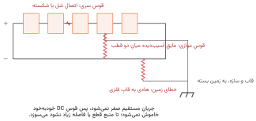
خطرِ قوس برای انسان. جدا از آتش، قوسی که نزدیکِ فرد رخ دهد میتواند سوختگیِ شدید، آسیبِ چشم و شنوایی و پرتابِ قطعههای مذاب ایجاد کند. ارزیابیِ خطرِ قوس، مرزهای ایمنی و تجهیزاتِ حفاظتِ فردی موضوعِ فصلهای ۲۶ و ۳۲ است و با روشهای تخصصی و برای هر نقطه انجام میشود.
هرگز اتصالدهنده یا فیوزِ مدارِ DC را زیرِ بار جدا نکنید، مگر آنکه تجهیز برای همین کار ردهبندی شده باشد و رویهٔ تأییدشده آن را اجازه دهد. قوسی که هنگامِ کشیدنِ یک اتصالدهندهٔ زیرِ جریان شکل میگیرد، درست در جایی است که دست و صورتِ شما هست.
6.4.7 مدارِ DC باتری در برابرِ مدارِ DC خورشیدی
در سناریوی S1، نیروگاهِ P سمتِ DC دومی هم دارد: باتری و مبدلِ دوسویهٔ آن. اصولِ این فصل در هر دو صادق است، اما نتیجهها متفاوتاند:
| ویژگی | سمتِ DC خورشیدی | سمتِ DC باتری |
|---|---|---|
| نوعِ منبع | محدود به جریان (منحنیِ جریان–ولتاژ) | منبعِ ولتاژ با مقاومتِ درونیِ کم |
| جریانِ اتصالِ کوتاه | کمی بیش از جریانِ کار (چند ده تا چند صد آمپر) | دهها کیلوآمپر (مثال 6.38) |
| «خاموش کردن» | با تاریکی یا پوشاندنِ ماژول | ممکن نیست؛ باتری همیشه انرژی دارد |
| جهتِ جریان | فقط از آرایه به اینورتر (جز در خطا) | دوسویه: شارژ و دشارژ |
| حفاظتِ اصلی | فیوزِ رشته در برابرِ جریانِ برگشتی | فیوز و کلیدِ با ظرفیتِ قطعِ بالا، کنتاکتور، سامانهٔ مدیریتِ باتری |
| خطرِ ویژه | قوسِ DC در گسترهٔ بزرگ و فضای باز | قوسِ پرانرژی، فرارِ گرماییِ سلول، گاز (فصلِ ۱۹) |
| انرژیِ ذخیره پس از جداسازی | خازنِ ورودیِ اینورتر | کلِ انرژیِ باتری، به اضافهٔ خازنها |
پیامد برای طراحی و کار: قواعدِ «سمتِ DC خورشیدی» را نمیتوان به باتری تعمیم داد، و برعکس. باتری سامانهٔ حفاظتیِ چندلایهٔ خودش را دارد: سامانهٔ مدیریتِ باتری (به انگلیسی battery management system, BMS) ولتاژ، جریان و دمای هر بخش را پایش میکند و کنتاکتورها را باز میکند، فیوزها خطای بزرگ را قطع میکنند، و طراحیِ گرمایی و حفاظت در برابرِ حریق جلوی گسترشِ فرارِ گرمایی را میگیرد (فصلهای ۱۹، ۳۲ و ۴۵). کار روی مدارِ باتری حتی پس از باز شدنِ همهٔ کلیدها، کار روی منبعِ زنده است.
6.4.8 ولتاژِ القایی و مساحتِ حلقه
شهود. هر جریانِ متغیر، میدانِ مغناطیسیِ متغیری میسازد و میدانِ مغناطیسیِ متغیر در هر حلقهٔ بستهای که از آن بگذرد، ولتاژ القا میکند (قانونِ فاراده؛ فصلهای ۴ و ۸). صاعقهای که نزدیکِ آرایه فرود آید، در یک میکروثانیه جریانِ دهها کیلوآمپری میسازد؛ میدانِ مغناطیسیِ آن بهسرعت تغییر میکند و در حلقهای که کابلهای مثبت و منفی ساختهاند ولتاژ القا میکند (شکل 6.33). برای یک کانالِ مستقیمِ صاعقه در فاصلهٔ \(d\):
\[ B = \frac{\mu_0\,i}{2\pi d} \qquad\qquad v \approx A\,\frac{\mathrm{d}B}{\mathrm{d}t} = A\,\frac{\mu_0}{2\pi d}\,\frac{\mathrm{d}i}{\mathrm{d}t} \tag{6.32}\]
که \(A\) مساحتِ حلقه است و \(\mu_0/(2\pi) = 2\times 10^{-7}\ \text{H/m}\).
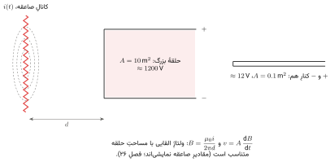
مثال 6.44 (چرا مثبت و منفی را کنارِ هم میبریم) پرسش. جریانِ صاعقه را 30 kA با زمانِ افزایشِ 1 µs و فاصله را 50 m فرض کنید (مقادیرِ نمایشی؛ پارامترهای واقعیِ صاعقه در فصلِ ۲۶). ولتاژِ القایی در حلقههایی با مساحتِ 10، 1 و 0.1 m² چقدر است؟
پاسخ. \(\mathrm{d}i/\mathrm{d}t = 3\times 10^{10}\ \text{A/s}\) و \(\mathrm{d}B/\mathrm{d}t = 2\times 10^{-7} \times 3\times 10^{10}/50 = 120\ \text{T/s}\):
loop area 10.0 m2: induced peak about 1200 V
loop area 1.0 m2: induced peak about 120 V
loop area 0.1 m2: induced peak about 12 Vرشتهای که مثبتش از یک سوی ردیف و منفیاش از سوی دیگر برگردد، حلقهای چندمترمربعی میسازد و هزار ولت یا بیشتر روی عایقها و ورودیِ اینورتر القا میشود. همان کابلها کنارِ هم، حلقهای چند دهم مترمربعی و چند ده ولت. قاعدهٔ طراحی: مساحتِ حلقهٔ مدارهای DC را کمینه کنید؛ و چون همیشه حلقهای میماند، برقگیرها (وریستور، بخش 6.2.6) ولتاژِ القایی را محدود میکنند. حفاظتِ کاملِ صاعقه و انتخابِ برقگیر موضوعِ فصلِ ۲۶ است.
- اگر فاصلهٔ صاعقه دو برابر شود، ولتاژِ القایی چه میشود؟
- چرا کابلکشیِ «حلقهای» رشته (رفت از یک سو، برگشت از سوی دیگر) از نظرِ القا بد است؟ آیا مزیتی هم دارد؟ (به طولِ کابل فکر کنید.)
- سه تفاوتِ مهمِ مدارِ DC باتری با مدارِ DC خورشیدی را بنویسید.
6.4.9 برچسبگذاری و شناسایی
در سمتِ DC خورشیدی، برچسب جزئی از ایمنی است، نه آرایش. اصولِ آن:
- هشدارِ منبعِ زنده: هر جعبهٔ تجمیع، کلیدِ DC و ورودیِ اینورتر باید بگوید که مدار حتی پس از باز کردنِ کلید و تا وقتی نور هست برقدار است، و ولتاژِ بیشینهٔ مدار را نشان دهد.
- شناسهٔ یکتا: هر رشته، جعبهٔ تجمیع، فیدر و کلید یک شناسهٔ یکتا دارد که با نقشهها و سامانهٔ اطلاعاتِ دارایی میخواند (فصلهای ۵ و ۳۸)؛ مثلاً CB-017 برای جعبهٔ تجمیعِ هفدهم و CB-017/S12 برای رشتهٔ دوازدهمِ آن.
- قطبیت: هادیهای مثبت و منفی در همهٔ مسیر با نشانهٔ پایدار (رنگ یا برچسبِ دوسر) شناسایی میشوند.
- ماندگاری: برچسب باید سی سال آفتاب، گرما و رطوبت را تاب بیاورد؛ برچسبِ کاغذیِ رنگپریده بدتر از نبودنِ برچسب است، چون اطمینانِ نادرست میدهد.
متن، رنگ، اندازه و جای دقیقِ برچسبها را استانداردِ حاکم و مقرراتِ محل تعیین میکنند (بخش 6.9).
6.4.10 مرجعیتِ کارِ ایمن
در فصلِ ۱ دیدیم که دانستن با مرجعیتِ تأیید یکی نیست. در کار روی تجهیزِ برقی، این تفاوت مستقیماً به جانِ انسان مربوط است. مجوزِ کار (به انگلیسی permit to work) سندی است که شخصِ مجاز صادر میکند و میگوید: چه کاری، روی کدام تجهیز، توسطِ چه کسی، با کدام جداسازیها، تا کِی. قفل و برچسبگذاری (به انگلیسی lockout/tagout) تضمین میکند کلیدی که برای جداسازی باز شده، تا پایانِ کار باز بماند و هر کس بداند چرا و به دستِ چه کسی.
شکل 6.34 اصولِ کار روی سمتِ DC خورشیدی را به ترتیب نشان میدهد. پلهٔ پنجم آن، که با رنگِ هشدار آمده، مهمترین درسِ این فصل است: حتی پس از همهٔ جداسازیها، رشته منبعی زنده است.
این کتاب رویهٔ کار روی تجهیزِ برقدار آموزش نمیدهد. چه کسی مجاز است روی سمتِ DC خورشیدی کار کند، با چه آموزش و ارزیابیِ صلاحیتی، با کدام تجهیزاتِ حفاظتِ فردی و طبقِ کدام رویه، را قانونِ کار و مقرراتِ ایمنیِ آن کشور، کارفرما، و سازندگانِ تجهیز تعیین میکنند (فصلهای ۳۲ و ۵۴ تا ۵۷). آزمونِ بیبرقی با ابزارِ وارسیشده و ردهٔ مناسب، پیش از هر لمسی، استثنا ندارد.
- چرا «کلید را باز کردم، پس بیبرق است» در سمتِ DC خورشیدی غلط است؟
- هدفِ قفل و برچسب چیست که مجوزِ کار بهتنهایی تأمین نمیکند؟
- چرا آزمونِ بیبرقی باید هم میانِ دو قطب و هم میانِ هر قطب و زمین انجام شود؟
6.5 ت. آزمایشگاه و سنجشِ توانایی
6.5.1 آزمایشگاهِ پایتون: تابعِ فیدر و آزمونِ آن
همهٔ محاسبههای فیدر در این فصل از یک تابع میآیند: feeder در بستهٔ plantp. این تابع همان معادلهٔ 6.21 و معادلهٔ 6.22 است، با چند نگهبان در برابرِ ورودیِ نادرست:
def feeder(current_a: float, length_m: float, area_mm2: float,
material: str = "copper", temp_c: float = 20.0, conductors: int = 2,
source_voltage_v: float | None = None) -> FeederResult:
"""Voltage drop and loss of a DC feeder carrying a steady current.
length_m is the ONE-WAY route length; `conductors` = 2 counts the return
conductor (both carry the same current). Model: constant current, uniform
conductor temperature, no inductance (steady DC).
"""
if current_a < 0 or conductors < 1:
raise ValueError("current must be >= 0 and conductors >= 1")
r_loop = conductors * conductor_resistance(length_m, area_mm2, material, temp_c)
drop = ohm_voltage(current_a, r_loop)
loss = power_i2r(current_a, r_loop)
frac = drop / source_voltage_v if source_voltage_v else None
return FeederResult(r_loop, drop, loss, frac)چند نکتهٔ طراحی در این چند خط هست که در فصلِ ۵ به آنها برمیگردیم: (۱) طول یکطرفه گرفته میشود و تعدادِ هادیها صریح است، تا ضریبِ ۲ فراموش نشود؛ (۲) سطحِ مقطع با یکای رایجِ کار، میلیمترِ مربع، داده میشود و تبدیل به مترِ مربع درونِ تابع انجام میشود، یک بار و فقط یک بار؛ (۳) دما ورودیِ صریح است، نه یک عددِ پنهان؛ (۴) جریانِ منفی یا تعدادِ هادیِ صفر خطا میدهد، بهجای اینکه پاسخِ بیمعنی بدهد.
آزمون. تابع با یک حالتِ مرجعِ دستی آزموده میشود: 10 A، 50 m، 2.5 mm² مس در 20 °C. با دست: \(R_\text{c} = 2 \times 1.72\times 10^{-8} \times 50/2.5\times 10^{-6} = 0.688\ \Omega\)، \(\Delta V = 6.88\ \text{V}\)، \(P = 68.8\ \text{W}\). آزمونِ خودکار دقیقاً همین را وارسی میکند:
def test_feeder_hand_case():
# 10 A, 50 m one way, 2.5 mm2 copper, 20 C: loop R = 2 * 0.344 = 0.688 ohm
r = dc.feeder(10.0, 50.0, 2.5, "copper", 20.0, source_voltage_v=48.0)
assert r.loop_resistance_ohm == pytest.approx(0.688)
assert r.drop_v == pytest.approx(6.88)
assert r.loss_w == pytest.approx(68.8)
assert r.drop_fraction == pytest.approx(6.88 / 48.0)
assert dc.feeder(0.0, 50.0, 2.5).drop_v == 0.0هر تغییری در کدِ feeder که این عددها را عوض کند، آزمون را میشکند. این آزمونِ بازگشتی است: نمیگذارد چیزی که یک بار درست شد، بیصدا خراب شود.
6.5.2 چهار خطای کلاسیک
محاسبهٔ فیدر ساده است و درست به همین دلیل خطاهای ساده در آن فراوان است. برنامهٔ زیر چهار خطای رایج را عمداً مرتکب میشود و هر کدام را با تابعِ آزمودهشده میسنجد:
def drop_correct():
"""Two conductors, area in m2, aluminium at 50 C."""
return I * 2 * RHO_AL_50C * L / (A * 1e-6)
def drop_one_way():
"""Mistake 1: forgets the return conductor."""
return I * RHO_AL_50C * L / (A * 1e-6)
def drop_area_in_mm2():
"""Mistake 2: puts mm2 where the formula needs m2."""
return I * 2 * RHO_AL_50C * L / A
def drop_copper_rho():
"""Mistake 3: uses copper resistivity for an aluminium cable."""
return I * 2 * dc.resistivity_at("copper", 50.0) * L / (A * 1e-6)
def drop_cold():
"""Mistake 4: uses the 20 C resistivity for a 50 C conductor."""
return I * 2 * dc.RESISTIVITY_20C["aluminium"] * L / (A * 1e-6)drop_correct 14.9184 V OK
drop_one_way 7.4592 V WRONG: ratio 0.5
drop_area_in_mm2 0.0000 V WRONG: ratio 1e-06
drop_copper_rho 9.0748 V WRONG: ratio 0.6083
drop_cold 13.3093 V WRONG: ratio 0.8921هر خطا «امضای» خودش را دارد و یک مهندسِ باتجربه از نسبتِ پاسخِ غلط به پاسخِ درست منشأ را حدس میزند: نسبتِ دقیقِ \(0.5\) یعنی هادیِ برگشت فراموش شده؛ \(10^{-6}\) یعنی یکای سطح؛ \(0.61\) یعنی جنسِ هادی (\(\rho_\text{Cu}/\rho_\text{Al}\))؛ \(0.89\) یعنی دما. وارسیهای سرانگشتیِ که این خطاها را پیش از هر کدی میگیرند: مرتبهٔ بزرگی (افتِ یک فیدرِ نیروگاهی معمولاً چند دهم تا چند درصد است، نه هزارم درصد)؛ تحلیلِ ابعادی (فصلِ ۲)؛ و تکرارِ محاسبه از راهِ دیگر (مثلاً با قاعدهٔ «17 mΩ بر متر برای مسِ یک میلیمتری»).
- اگر کسی ولتاژِ رشته را بهجای ولتاژِ جعبهٔ تجمیع در مخرجِ درصدِ افت بگذارد، چه میشود؟ (این دو برابرند! چرا؟)
- یک خطای پنجم پیشنهاد کنید و بگویید نسبتِ پاسخِ غلط به درست در آن چقدر است.
6.5.3 آزمایشِ رومیزیِ کمولتاژ
این آزمایش «شاهدِ اجرا»ی این فصل است: نشان میدهد خواننده میتواند یک اندازهگیریِ ساده را ایمن، مستند و بازبینیپذیر انجام دهد. آزمایش فقط با ولتاژِ بسیار پایین انجام میشود.
فقط با یک باتریِ 9 V یا منبعِ USB با ولتاژِ 5 V. هیچ منبعِ برقِ شهر، باتریِ خودرو، باتریِ لیتیومیِ بزرگ یا ماژولِ خورشیدی بهکار نبرید: باتریِ خودرو و باتریهای لیتیومی، حتی با ولتاژِ پایین، جریانِ اتصالِ کوتاهِ صدها آمپری دارند و میتوانند سیم را ذوب و آتش ایجاد کنند. مقاومتها را با توانِ نامیِ دستِکم 0.25 W انتخاب کنید و پیش از وصل کردن، توانِ هر کدام را با معادلهٔ 6.9 حساب کنید.
وسایل. یک باتریِ 9 V با گیره، مقاومتهای 100 Ω، 220 Ω، 1 kΩ و دو مقاومتِ 1 MΩ، یک مولتیمترِ دیجیتال، بُردِ آزمایشیِ بیلحیم و سیمهای کوتاه.
گامها و آنچه ثبت میشود.
- ولتاژِ مدارِ باز باتری را بخوانید. (ثبت: ابزار، محدوده، خوانش، دما.)
- مقاومتِ 100 Ω را با اُهممتر بخوانید، بی آنکه در مدار باشد. (چرا؟)
- باتری را به 100 Ω وصل کنید؛ ولتاژِ پایانه و جریان (آمپرمتر سری) را بخوانید. توانِ مقاومت را حساب کنید؛ از 0.25 W بیشتر نشود (با 9 V و 100 Ω، حدودِ 0.81 W!). پس با 100 Ω فقط اگر مقاومتِ 1 W دارید ادامه دهید، وگرنه از 220 Ω آغاز کنید. این گام خودش یک درس است: حساب پیش از وصل.
- با دو بار، مقاومتِ درونیِ باتری را با معادلهٔ 6.20 بیابید.
- تقسیمکنندهٔ دو 1 MΩ را ببندید و ولتاژِ وسط را بخوانید؛ با پیشبینیِ مثال 6.34 (با \(R_\text{V}\) ابزارِ خودتان از دفترچهاش) مقایسه کنید.
- سری و موازی: 220 Ω و 1 kΩ را یک بار سری و یک بار موازی ببندید؛ جریانِ کل را پیشبینی، اندازهگیری و مقایسه کنید.
برگهٔ ثبت. هر خوانش در جدولی با این ستونها: شمارهٔ گام، کمیت، مقدارِ پیشبینیشده، مقدارِ خواندهشده، ابزار و محدوده، دقتِ اعلامشدهٔ ابزار در آن محدوده، اختلاف، و «آیا اختلاف در حدِ دقت است؟». در پایان یک بند بنویسید: کدام پیشبینیها در حدِ دقت درست بودند، کدام نه، و چرا. این برگه، با تاریخ و امضای شما، سندِ آزمایش است؛ همان شکلی که در فصلِ ۲ برای هر محاسبه و اندازهگیریِ مهندسی میسازیم.
6.5.4 آزمایشگاهِ پایتون: بودجهٔ تلفاتِ یک بلوک از دادهٔ ساعتی
این برنامه همهٔ اجزای مثال 6.29 را در یک جا و به شکلی بازبینیپذیر کنار هم میگذارد. قاعدهٔ اول: همهٔ ورودیها ثابتهای نامدار در بالای برنامهاند، هر کدام با وضعیت و شناسهٔ فرضش، تا بازبین بتواند یک فرض را عوض کند و دوباره اجرا کند:
STRINGS = 24 # strings per combiner box (assumed, A-014)
MODULES = 26 # modules per string (assumed, A-015)
STRING_ONE_WAY_M = 70.0 # mean string cable, one way (assumed, A-022)
STRING_MM2 = 4.0 # string cable, copper (assumed)
FEEDER_ONE_WAY_M = 180.0 # combiner to inverter, one way (assumed, A-018)
FEEDER_MM2 = 240.0 # feeder, aluminium (assumed)
CONDUCTOR_C = 50.0 # conductor temperature, all year (assumed, A-019)
PR_DC = 0.85 # DC performance factor (assumed)قاعدهٔ دوم: مدل در چند خطِ روشن، با همان رابطههای فصل و بی هیچ عددِ «جادویی»:
module = dc.PVM_550
v_mp = MODULES * module.v_mp
hourly = datapack.load_hourly()
g = hourly["ghi_wm2"].to_numpy()
# string current in each hour, proportional to irradiance
i_string = module.i_mp * PR_DC * g / 1000.0
i_feeder = STRINGS * i_string
r_string = dc.feeder(1.0, STRING_ONE_WAY_M, STRING_MM2,
"copper", CONDUCTOR_C).loop_resistance_ohm
r_feeder = dc.feeder(1.0, FEEDER_ONE_WAY_M, FEEDER_MM2,
"aluminium", CONDUCTOR_C).loop_resistance_ohm
e_dc = (v_mp * i_feeder).sum() / 1000.0 # kWh in one year
e_string = STRINGS * (r_string * i_string**2).sum() / 1000.0
e_feeder = (r_feeder * i_feeder**2).sum() / 1000.0خروجی:
Plant P Reference Data Pack 1.0.0, scenario S0 (no-BESS)
DC energy of one combiner box: 568,130 kWh/yr
string cables (x24): 2,493 kWh/yr 0.44 %
feeder: 4,216 kWh/yr 0.74 %
total DC wiring: 6,709 kWh/yr 1.18 %وارسیِ مستقل: عددهای فیدر (0.74 %) همان عددِ مثال 6.27 است که با برنامهٔ دیگری حساب شده بود؛ تلفاتِ رشتهها (0.44 %) همان عددِ مثال 6.29. سه برنامه، یک پاسخ. تمرینِ پیشنهادی: فرضِ CONDUCTOR_C را به 30 تغییر دهید و ببینید چقدر از تلفات به دمای محافظهکارانه مربوط بود.
6.5.5 آزمایشگاهِ پایتون: حلِ عددیِ دشارژِ خازن
معادلهٔ دیفرانسیلِ معادلهٔ 6.18 جوابِ دقیق دارد؛ بیشترِ معادلههای مهندسی ندارند. پس باید یاد بگیریم آنها را عددی حل کنیم و، مهمتر، بدانیم جوابِ عددی چقدر قابلِ اعتماد است. سادهترین روش، روشِ اویلر (به انگلیسی Euler method) است: آهنگِ تغییر را در آغازِ هر گامِ کوچکِ \(\Delta t\) حساب میکنیم و فرض میکنیم در طولِ گام ثابت بماند:
\[ v_{k+1} = v_k + \Delta t\,\frac{\mathrm{d}v}{\mathrm{d}t}\bigg|_{k} = v_k - \Delta t\,\frac{v_k}{RC} \]
V0, R, C = 9.0, 10e3, 1000e-6 # volts, ohms, farads -> tau = 10 s
T_END = 30.0 # seconds
def euler(dt):
"""Step C dv/dt = -v/R forward: v_next = v - dt * v / (R C)."""
v, t = V0, 0.0
while t < T_END - 1e-12:
v = v - dt * v / (R * C)
t = t + dt
return v
exact = V0 * math.exp(-T_END / (R * C))
previous = None
for dt in (5.0, 2.0, 1.0, 0.5, 0.25, 0.1):
v = euler(dt)
error = v - exact
ratio = "" if previous is None else f" error ratio {previous / error:4.2f}"
print(f"dt = {dt:5.2f} s v(30 s) = {v:.5f} V error {error:+.5f} V{ratio}")
previous = error
print(f"exact v(30 s) = {exact:.5f} V")dt = 5.00 s v(30 s) = 0.14062 V error -0.30746 V
dt = 2.00 s v(30 s) = 0.31666 V error -0.13142 V error ratio 2.34
dt = 1.00 s v(30 s) = 0.38152 V error -0.06656 V error ratio 1.97
dt = 0.50 s v(30 s) = 0.41463 V error -0.03346 V error ratio 1.99
dt = 0.25 s v(30 s) = 0.43132 V error -0.01677 V error ratio 2.00
dt = 0.10 s v(30 s) = 0.44137 V error -0.00672 V error ratio 2.50
exact v(30 s) = 0.44808 Vتفسیر. خطا با کوچک شدنِ گام کم میشود و نسبتِ خطاها تقریباً برابرِ نسبتِ گامهاست: نصف کردنِ گام، خطا را نصف میکند (نسبتِ ۲)، و از 0.25 به 0.1 (گامِ ۲٫۵ برابر کوچکتر) خطا ۲٫۵ برابر کم میشود. این یعنی روشِ اویلر مرتبهٔ اول است: خطا با \(\Delta t\) متناسب است. روشهای دقیقتر (رونگه–کوتا) خطایی متناسب با \(\Delta t^4\) دارند (فصلِ ۳). درسِ عملی: هر شبیهسازیِ عددی باید یک آزمونِ همگرایی داشته باشد: گام را کوچک کنید و ببینید پاسخ ثابت میماند. شبیهسازیای که این آزمون را ندارد، یک عدد است، نه یک پاسخ. آزمونِ خودکارِ بسته همین رفتار را وارسی میکند.
6.5.6 آزمایشِ رومیزیِ دوم: ثابتِ زمانیِ یک خازن
وسایل. همان باتریِ 9 V، یک خازنِ الکترولیتیِ 1000 µF با ولتاژِ نامیِ دستِکم 16 V، مقاومتِ 10 kΩ، مولتیمتر و زمانسنج.
خازنِ الکترولیتی قطبیت دارد: پایهٔ منفی (معمولاً با نوارِ روی بدنه مشخص است) باید به قطبِ منفیِ باتری برود. خازنی که برعکس یا با ولتاژِ بیش از ولتاژِ نامیاش وصل شود، ممکن است گرم شود، باد کند یا بترکد. با منبعِ 9 V و خازنِ 16 V یا بالاتر کار کنید و هرگز دو سرِ خازنِ پُر را با سیم اتصالِ کوتاه نکنید؛ همیشه از راهِ مقاومت تخلیه کنید.
گامها. (۱) \(\tau = RC = 10\ \text{s}\) را پیشبینی کنید. (۲) خازن را مستقیم و با قطبیتِ درست به باتری بزنید تا پُر شود و ولتاژش را بخوانید. (۳) باتری را جدا کنید و همزمان با شروعِ زمانسنج، خازن را به مقاومتِ 10 kΩ وصل کنید؛ ولتاژِ دو سرِ خازن را هر ۵ ثانیه تا ۳۰ ثانیه بخوانید. (۴) با پیشبینیِ برنامهٔ همراه مقایسه کنید (از 9 V: پس از ۵، ۱۰، ۲۰ و ۳۰ ثانیه به ترتیب 5.46، 3.31، 1.22 و 0.45 V). (۵) لگاریتمِ طبیعیِ ولتاژ را برحسبِ زمان رسم کنید؛ باید خطی راست با شیبِ \(-1/\tau\) باشد. شیب را بیابید و \(\tau\) را حساب کنید.
پرسشهای گزارش. چرا \(\tau\) ِ اندازهگیریشده با 10 s فرق دارد؟ (رواداریِ خازنهای الکترولیتی اغلب ±20 % است؛ مقاومتِ ورودیِ ولتمتر هم موازیِ مقاومت است: مثال 6.34.) اگر مقاومتِ ولتمتر 10 MΩ باشد، چه خطایی در \(\tau\) ایجاد میکند؟ (\(10\,\text{k}\Omega \parallel 10\,\text{M}\Omega\) حدودِ 0.1 % کمتر از 10 kΩ؛ ناچیز.) گزارش با همان برگهٔ ثبتِ بخش 6.5.3 نوشته میشود.
6.5.7 دادهها و تأییدیههایی که برای طراحیِ واقعی کم است
مثال 6.25 در گامِ آخرش فهرستی از کمبودها داد. اینجا آن را به شکلِ رسمی به فهرستِ مجهولها و تأییدیههای نیروگاهِ P اضافه میکنیم:
| شناسه | مجهول یا تأییدیه | چرا مهم است | از کجا میآید | فصل |
|---|---|---|---|---|
| U-006 | کمینه و بیشینهٔ دمای ساختگاه | طولِ رشته، کمینهٔ ولتاژ، دمای کابل | دادهٔ اقلیمیِ اندازهگیریشده | ۱۲ |
| U-007 | نوعِ کابل، روشِ نصب و گروهبندی | دمای هادی، ظرفیتِ جریان، افت | جانمایی، استاندارد، سازندهٔ کابل | ۱۴، ۲۴ |
| U-008 | دادهٔ اینورتر (بازهٔ ولتاژ، تعدادِ ورودی، جریانِ برگشتی، آرایشِ زمین) | پنجرهٔ ولتاژ، حفاظتِ فیدر، پایشِ عایق | سازندهٔ اینورتر | ۹ |
| U-009 | آرایشِ زمینِ سمتِ DC (شناور یا زمینشدهٔ کارکردی) | رفتار در خطای زمین، تجهیزِ پایش | اینورتر، استاندارد | ۹، ۲۶ |
| U-010 | مسیرِ واقعی و طولِ فیدرها | افت، تلفات، هزینه | جانمایی | ۱۴ |
| U-011 | ضریبهای الزامیِ جریان برای کابل و فیوز | اندازهٔ فیوز و کابل | استانداردِ حاکم، سازندهٔ ماژول | ۲۴، ۵۸ |
| U-012 | هدفِ افتِ ولتاژ و ارزشِ انرژیِ تلفشده | انتخابِ مقطع | الزاماتِ مالک، مدلِ مالی | ۱۷، ۲۱ |
| P-004 | تأییدِ طرحِ سمتِ DC توسطِ طراحِ صلاحیتدار | الزامِ قانونی و قراردادی | نظامِ مهندسی، قرارداد | ۳۸، ۵۴ |
| P-005 | رویهٔ کارِ ایمن و مجوزِ کار برای سمتِ DC | ایمنیِ افراد | کارفرما، مقرراتِ کار | ۳۲ |
6.6 نیروگاهِ P: سه مثالِ یکپارچه
مثالهای این بخش سه سطح دارند و همه از بستهٔ دادهٔ مرجعِ 1.0.0، سناریوی S0، و فرضهای جدول 6.6 استفاده میکنند.
| شناسه | فرض | مقدار | وضعیت | یادداشت |
|---|---|---|---|---|
| A-014 | رشته در هر جعبهٔ تجمیع | 24 | فرضی | تا طراحیِ آرایه در فصلِ ۱۰ |
| A-015 | ماژول در هر رشته | 26 | فرضی | با پوششِ ولتاژِ مثال 6.39 وارسی شد |
| A-016 | کمینهٔ دمای سلول برای وارسیِ ولتاژ | −10 °C | فرضی | دادهٔ اقلیمی در فصلِ ۱۲ (U-006) |
| A-017 | بیشینهٔ ولتاژِ سامانهٔ DC | 1500 V | ساختگی (برگهٔ دادهٔ PVM-550) | |
| A-018 | فیدرِ جعبهٔ تجمیع تا اینورتر | 180 m، آلومینیوم | فرضی | مسیر در فصلِ ۱۴ (U-010) |
| A-019 | دمای هادی برای محاسبهٔ تلفات | 50 °C | فرضی | محافظهکارانه برای کلِ سال |
| A-020 | بازهٔ ردیابیِ اینورتر | 850 تا 1300 V | فرضی | اینورتر در فصلِ ۹ (U-008) |
| A-021 | هدفِ افتِ ولتاژِ فیدر در شرایطِ استاندارد | 1 % | فرضی | الزاماتِ مالک (U-012) |
| A-022 | طولِ یکطرفهٔ میانگینِ کابلِ رشته | 70 m، مس 4 mm² | فرضی | جانمایی در فصلِ ۱۴ (U-010) |
مثال 6.45 (سطحِ مقدماتی: از برگهٔ داده تا جعبهٔ تجمیع) پرسش. از برگهٔ دادهٔ PVM-550، ولتاژ، جریان و توانِ یک رشته و یک جعبهٔ تجمیع را در شرایطِ استاندارد بنویسید و بگویید هر عدد به کدام پله از نردبانِ شواهد تعلق دارد.
پاسخ. رشته: 1091.0 V، 13.11 A، 14.30 kW؛ جعبهٔ تجمیع: 1091.0 V، 314.64 A، 343.3 kW (مثال 6.14). وضعیت: مقدارهای برگهٔ داده در پروژهٔ واقعی «اعلامِ سازنده»اند، اینجا «ساختگی»؛ تعدادِ ماژول و رشته «فرضی»؛ پس نتیجه هم «فرضی». برگهٔ داده مقدارها را در شرایطِ استاندارد میدهد و نیروگاه تقریباً هیچگاه در آن شرایط نیست: تابش کمتر یا بیشتر، سلول داغتر. اینکه در شرایطِ واقعی چه میشود، کارِ بخش 6.3.13 و فصلهای ۱۰ و ۱۵ است.
مثال 6.46 (سطحِ میانی: فیدر با جریانِ ساعتِ ظهر) پرسش. در روزِ تابستانیِ بسته (23 ژوئن، ساعتِ 12:00) تابشِ افقی 1030.3 W/m² است. با مدلِ غربالگری، جریان و تلفاتِ فیدرِ 240 mm² در آن ساعت چقدر است؟
پاسخ. \(P = 343.2 \times 1.0303 \times 0.85 = 300.6\ \text{kW}\) و \(I = 300\,600/1091.0 = 275.5\ \text{A}\). تلفات: \(0.04741 \times 275.5^2 = 3599\ \text{W}\)، یعنی 1.20 %. وارسی: جریان 12 % کمتر از جریانِ استاندارد و تلفات \((275.5/314.64)^2 = 0.767\) برابرِ تلفاتِ استاندارد است، یعنی 23 % کمتر، همان رابطهٔ مجذوری. محدودیت: مدلِ غربالگری تابشِ افقی را بهکار میبرد؛ تابشِ روی سطحِ شیبدارِ ماژول در ظهرِ تابستانِ این عرضِ جغرافیایی کمی کمتر یا بیشتر است و دمای سلول PR را کم میکند. فصلهای ۱۲ و ۱۵ این را دقیق میکنند.
مثال 6.47 (سطحِ یکپارچه: انتخابِ مقطعِ فیدر) پرسش. با همهٔ آنچه در این فصل داریم، برای فیدرِ آلومینیومیِ نیروگاهِ P میانِ 240 و 400 mm² یک توصیهٔ مشروط بنویسید.
پاسخ.
- افتِ ولتاژ: 240 mm² با 1.37 % هدفِ فرضیِ 1 % را نمیگذراند؛ 400 mm² با 0.82 % میگذراند (مثال 6.26).
- تلفاتِ انرژی: 400 mm² سالانه حدودِ 1.7 MWh در هر فیدر و 295 MWh در کلِ نیروگاه صرفهجویی میکند (مثال 6.27).
- پوششِ ولتاژ: با افتِ 14.9 V یا 8.9 V، ولتاژِ ورودیِ اینورتر در داغترین حالت به ترتیب حدودِ 944 V یا 950 V است، هر دو بالای 850 V (مثال 6.39). پس افت در اینجا تعیینکننده نیست.
- گرما و ظرفیتِ جریان: هنوز نمیدانیم؛ به روشِ نصب بستگی دارد (U-007).
- هزینه: هنوز نمیدانیم (U-012).
توصیه: «400 mm² آلومینیوم برای فیدرِ نمونه، به شرطِ آنکه هدفِ 1 % الزامِ تأییدشدهٔ مالک باشد. اگر هدفِ افت شلتر باشد، انتخاب به مقایسهٔ هزینهٔ کابل با ارزشِ 295 MWh در سال وابسته است (فصلِ ۲۱) و ظرفیتِ جریانِ هر دو مقطع باید برای روشِ نصبِ واقعی وارسی شود (فصلِ ۲۴).» این توصیه با شرطهایش به دفترِ تصمیم میرود (D-003).
درسِ مثال: یک محاسبهٔ درست به یک تصمیمِ درست نمیانجامد مگر آنکه معیارها، دادههای ناموجود و شرطها صریح نوشته شوند.
6.7 گردشِ کارِ طراحیِ یک مدارِ جریانِ مستقیم
آنچه در این فصل پراکنده دیدیم، در طراحیِ واقعی یک ترتیبِ مشخص دارد. این ترتیب برای هر مدارِ DC نیروگاه، از رشتهٔ خورشیدی تا تغذیهٔ اضطراریِ کنترل (فصلِ ۲۳)، یکی است:
- الزامات: توان، ولتاژ و جریان در همهٔ حالتها؛ محیط (دما، آفتاب، رطوبت، خاک)؛ عمر؛ هدفِ افت و بازده؛ استانداردِ حاکم؛ الزاماتِ مالک.
- پوششِ کاری: بیشینه و کمینهٔ ولتاژ و بیشینهٔ جریان (بخش 6.3.13).
- توپولوژی و مرزها: کدام مدارها، کجا موازی میشوند، کجا جدا میشوند، کجا حفاظت میشوند (بخش 6.4.1).
- اندازهگذاریِ اولیه: مقطعِ هادی برای افت و ظرفیتِ جریان، فیوز و کلید برای جریان و ولتاژ (بخش 6.3.2، 1).
- وارسیِ خطا: جریانِ برگشتی، رفتار در خطای زمین، تحملِ کابل در برابرِ جریانِ خطا (بخش 6.3.11).
- وارسیِ مستقل: محاسبه از راهِ دوم یا توسطِ شخصِ دوم؛ کدِ آزموده با حالتِ مرجع (بخش 6.5.1).
- مستندسازی: برگهٔ محاسبه با فرضها، برچسبِ وضعیتِ هر ورودی و شناسهٔ نسخه؛ مشخصاتِ خرید؛ نقشهها با شناسههای یکتا (فصلهای ۲ و ۳۸).
- راستیآزمایی در اجرا: آزمونهای پیش از برقدار کردن (پیوستگی، قطبیت، مقاومتِ عایق، ولتاژِ مدارِ باز) و پس از آن (جریانها، دمای اتصالها) (فصلِ ۵۰).
6.8 ساخت و تولیدِ صنعتی در این فصل
این فصل دربارهٔ مدار است، نه دربارهٔ ساختنِ یک محصولِ مشخص؛ بنابراین زنجیرهٔ کاملِ «طراحی تا ساخت» اینجا موضوعیت ندارد و جای آن روشن است: کابلها و اتصالدهندهها (کشیدنِ مفتول، رشتهبندی، روکشدهیِ عایق، آزمونهای کارخانهای و کیفیتِ پرس) در فصلهای ۲۴ و ۴۶؛ فیوزها، کلیدهای DC و جعبههای تجمیع در فصلِ ۴۶؛ ماژولها در فصلِ ۴۱. با این حال، این فصل سه پیوندِ مهم با ساخت دارد که هر خوانندهٔ فصلهای ساخت باید به یاد داشته باشد: (۱) مقاومتِ ویژهٔ واقعیِ هادی و بنابراین افت و تلفات، به خلوص و فرایندِ ساختِ هادی بستگی دارد و سازندهٔ کابل باید آن را با آزمون نشان دهد؛ (۲) مقاومتِ تماسِ اتصالدهنده، که در مثال 6.43 دیدیم چقدر مهم است، نتیجهٔ کنترلِ کیفیتِ ساخت و نصب است، نه طراحی؛ (۳) ردهٔ ولتاژ و جریانِ DC یک فیوز یا کلید فقط با آزمونِ نوعیِ سازنده اثبات میشود و آزمونهای محلِ نصب جای آن را نمیگیرند.
6.9 جعبهٔ استاندارد و انطباق
عنوان و ویرایشِ اسنادِ زیر در تاریخِ 2026-11-14 از فهرستِ رسمیِ ناشر (فروشگاهِ اینترنتیِ IEC) راستیآزمایی شده است. متنِ بندهای آنها بررسی نشده و هیچ عدد یا ضریبی در این فصل از آنها نقل نشده است. پذیرش یا الزامی بودنِ آنها در ایران، افغانستان و تاجیکستان راستیآزمایی نشده است (فصلهای ۵۵ تا ۵۸). جزئیات در دفترِ استانداردها (glossary/standards-register.csv).
اسنادِ نامزد (عنوان و ویرایش راستیآزماییشده؛ متن و پذیرشِ ملی نیازمندِ تأیید):
| شناسه | سند | عنوان | ویرایش |
|---|---|---|---|
| STD-001 | IEC 62548-1 | آرایههای فتوولتائیک — بخشِ ۱: الزاماتِ طراحی | 2023 + اصلاحیهٔ 2025 |
| STD-002 | IEC 60364-7-712 | تأسیساتِ برقیِ فشارِ ضعیف — بخشِ ۷-۷۱۲: الزاماتِ تأسیسات یا مکانهای ویژه — سامانههای تغذیهٔ فتوولتائیک | 2025 |
| STD-003 | IEC 61010-1 | الزاماتِ ایمنیِ تجهیزاتِ برقیِ اندازهگیری، کنترل و آزمایشگاهی — بخشِ ۱: الزاماتِ عمومی | 2010 + اصلاحیهٔ 2016 |
| STD-004 | IEC 60269-6 | فیوزهای فشارِ ضعیف — بخشِ ۶: الزاماتِ تکمیلیِ فیوز برای حفاظتِ سامانههای فتوولتائیک | 2010 + اصلاحیهٔ 2021 |
پرسشهای انطباقِ این فصل:
| پرسش | منبعی که باید وارسی شود | پیامد در طراحی | شاهد و تأییدکننده | وضعیت |
|---|---|---|---|---|
| الزاماتِ سیمکشی، حفاظت، جداسازی و زمینکردنِ سمتِ DC | STD-001 و پذیرشِ ملیِ آن | ضریبهای جریانِ کابل و فیوز، شرطِ نیاز به فیوزِ رشته، پایشِ عایق | محاسبهٔ امضاشده؛ طراحِ صلاحیتدار، بازرس | نیازمندِ تأیید |
| الزاماتِ نصب و برچسب از ماژول تا نقطهٔ اتصال | STD-002 و مقرراتِ محل | روشِ نصب، حفاظتِ افراد، برچسب | بازرسی و آزمونِ تأسیسات؛ بازرس، مرجعِ محلی | نیازمندِ تأیید |
| نوع و ردهٔ فیوزِ رشته و آرایه تا 1500 V | STD-004 | نوعِ فیوزِ مجاز، ردهٔ قطع در DC | گواهیِ آزمونِ نوعیِ سازنده؛ بازرسِ کارخانه | نیازمندِ تأیید |
| ردهٔ ایمنیِ ابزارِ اندازهگیری | STD-003 | انتخابِ ابزار و سیمِ آزمون | ردهٔ چاپشده و گواهیِ ابزار؛ کارفرما | نیازمندِ تأیید |
| چه کسی و با چه رویهای روی سمتِ DC کار میکند | قانونِ کار و مقرراتِ ایمنیِ هر کشور | آموزش، مجوزِ کار، تجهیزاتِ حفاظتِ فردی | گواهیِ صلاحیت و مجوز؛ کارفرما، مرجعِ ایمنیِ کار | نیازمندِ تأیید (فصلهای ۳۲ و ۵۵ تا ۵۷) |
| حدِ افتِ ولتاژ | الزاماتِ مالک؛ شاید استانداردِ حاکم | مقطعِ کابل | برگهٔ محاسبه؛ مالک | فرضی (A-021) |
6.10 تحویلدادنیِ نیروگاهِ P
برگِ این فصل در پروندهٔ نیروگاهِ P، برگهٔ محاسبهٔ DC-001، نسخهٔ 0.1: سمتِ DC یک بلوکِ خورشیدیِ نمونه است با این محتوا:
- مبنا: بستهٔ داده 1.0.0، سناریوی S0؛ فرضهای A-014 تا A-022 (جدول 6.6) با برچسبِ وضعیت.
- پوششِ ولتاژ: ۲۶ ماژول، \(V_\text{oc}\) در −10 °C برابرِ 1420.0 V و در −20 °C برابرِ 1455.0 V، زیرِ 1500 V؛ \(V_\text{mp}\) در 70 °C حدودِ 958 V، بالای 850 V (مثال 6.39).
- شمارش: ۴۱۹۶ رشته، ۱۰۹٬۰۹۶ ماژول، ۱۷۵ جعبهٔ تجمیع (مثال 6.41).
- فیدرِ نمونه: 314.64 A؛ 240 mm² آلومینیوم: 14.92 V، 1.37 %، 4.69 kW؛ 400 mm²: 0.82 %؛ تلفاتِ انرژیِ سالانه 0.74 % و 0.45 % (مثال 6.25، مثال 6.27).
- مفهومِ حفاظت: فیوزِ هر رشته لازم است (جریانِ برگشتیِ 321.5 A در برابرِ حدِ 25 A)؛ پنجرهٔ فیوز با ضریبِ فرضی فقط 25 A را مجاز میکند (مثال 6.42)؛ جداسازی با \(Q_1\) و \(Q_2\) و این واقعیت که رشتهها با هیچ کلیدی بیبرق نمیشوند.
- مجهولها و تأییدیهها: U-006 تا U-012، P-004 و P-005 (جدول 6.5).
- دفترِ تصمیم: D-002 «۲۶ ماژول در هر رشته، به دلیلِ حاشیهٔ ولتاژ تا دادهٔ اقلیمی؛ بازبینی پس از فصلِ ۱۲»؛ D-003 «فیدرِ نمونه 400 mm² آلومینیوم، مشروط به تأییدِ هدفِ 1 %؛ بازبینی پس از فصلهای ۲۱ و ۲۴».
- بودجهٔ تلفاتِ سیمکشیِ DC: کابلِ رشته 0.44 % و فیدر 0.74 % از انرژیِ سالانهٔ DC، رویهم 1.18 % یا حدودِ 1.2 GWh در سال (مثال 6.29)؛ ورودیِ آبشارِ تلفاتِ فصلِ ۱۵. مقطعِ اقتصادیِ فیدر با عددهای آموزشی حدودِ 342 mm² (مثال 6.30).
- پوششِ ولتاژ با دادهٔ یک سال: بیشینهٔ \(V_\text{oc}\) رشته در سالِ داده 1397 V؛ تصمیمِ D-002 تقویت شد، اما برای پرسشِ حدیِ سیساله دادهٔ اقلیمیِ بلندمدت لازم است (مثال 6.40).
- ایمنیِ انرژیِ ذخیره: خازنِ ورودیِ اینورتر حدودِ 6 kJ و زمانِ تخلیهٔ حدودِ ۲۶ دقیقه (فرضی؛ عددِ واقعی از سازنده)؛ جریانِ خطای یک قفسهٔ باتری حدودِ 24 kA و تحملِ آدیاباتیکِ فیدرِ 240 mm² در آن حدودِ 0.85 s (مثال 6.22، مثال 6.33).
- وارسیِ مستقل: همهٔ عددها با کدِ آزموده (
companion/ch06/) بازتولید شدهاند؛ همهٔ آزمونهای خودکارِ بستهٔ همراه در زمانِ انتشار گذرانده شدهاند و چند نتیجه از دو یا سه راهِ مستقل به یک عدد رسیدهاند (گره، حلقه، برهمنهی؛ سه برنامهٔ تلفات؛ حلِ بسته و عددیِ گرمایش).
پرونده با این برگ به نسخهٔ 0.2 میرسد. آنچه این برگ نیست: طرحِ قابلِ ساخت. تا U-006 تا U-012 بسته نشوند و P-004 گرفته نشود، این برگه فقط مبنای پرسشهای درست است.
6.11 جمعبندی
- بار، جریان، ولتاژ: جریان آهنگِ عبورِ بار است (\(I = \Delta Q/\Delta t\))؛ ولتاژ انرژی به ازای هر واحدِ بار است (\(V = W/Q\)) و همیشه میانِ دو نقطه تعریف میشود؛ الکترونها کُند میروند اما میدان تند پخش میشود.
- مقاومت و توان: \(V = RI\) مدلی است که فقط برای عناصرِ اُهمی ثابت میماند؛ \(R = \rho L/A\) و مقاومتِ فلزها با دما حدودِ 0.4 % بر درجه بالا میرود؛ \(P = VI\) برای هر عنصر و \(P = RI^2\) برای مقاومت: دو برابر جریان، چهار برابر گرما.
- تحلیلِ مدار: سری جریانِ یکسان، موازی ولتاژِ یکسان؛ قانونهای جریان و ولتاژِ کیرشهف و روشِ ولتاژِ گره هر مدارِ خطی را حل میکنند؛ جریانِ منفی یعنی جهتِ فرضشده برعکس بوده است؛ معادلِ تونن رفتارِ یک مدار را از دید دو سرش خلاصه میکند؛ سامانهٔ قدرت برای بازده، نه بیشینهٔ انتقالِ توان، طراحی میشود.
- منبع و بار: باتری به منبعِ ولتاژ با مقاومتِ درونی نزدیک است و رشتهٔ خورشیدی به منبعِ محدود به جریان؛ نقطهٔ کار تقاطعِ منحنیِ منبع و بار است.
- فیدر: \(R_\text{c} = 2\rho(T)L/A\)، \(\Delta V = R_\text{c}I\)، \(P_\text{loss} = R_\text{c}I^2\) و در DC کسرِ افت برابرِ کسرِ تلفات است؛ فیدرِ نمونهٔ نیروگاهِ P با 240 mm² آلومینیوم 1.37 % افت و 4.69 kW تلفات دارد و تلفاتِ انرژیِ سالانهاش فقط حدودِ نصفِ این درصد است، چون تلفات با مجذورِ جریان میرود.
- گرما: گرمایش بازخوردِ مثبت دارد و مدلِ ساده جریانِ فرارِ \(1/\sqrt{R_{20}\alpha R_\text{th}}\) را پیشبینی میکند؛ ظرفیتِ رسمیِ کابل از استاندارد و روشِ نصب میآید.
- اندازهگیری: ابزار مدار را تغییر میدهد؛ پیش از اندازهگیری بپرسید آیا دقتِ ابزار پاسخ را تشخیص میدهد؛ ردهٔ ابزار باید با مدار بخواند و آمپرمتر هرگز موازی بسته نمیشود.
- خطا: جریانِ برگشتیِ رشتههای موازی، نه جریانِ خودِ رشته، فیوزِ رشته را لازم میکند؛ خطای اولِ زمین در آرایهٔ شناور بیصداست و فقط پایشِ عایق آن را میبیند.
- DC خورشیدی متفاوت است: منبع را نمیتوان خاموش کرد، قوسِ DC خودبهخود خاموش نمیشود، ولتاژ تا 1500 V است و گستره بزرگ؛ پس جداسازی، حفاظت، اتصال، برچسب و روشِ کار ویژه میخواهد و حتی پس از همهٔ جداسازیها، رشته منبعی زنده است.
- پوششِ کاری: بیشینهٔ ولتاژ در سرما و مدارِ باز، کمینهٔ ولتاژ در گرما؛ ۲۶ ماژولِ نیروگاهِ P تا −20 °C زیرِ 1500 V میماند؛ یک سال دادهٔ ساعتی این را تأیید میکند اما پرسشِ حدیِ سیساله را پاسخ نمیدهد.
- مواد و عایق: مقاومتِ ویژه بیش از ۲۳ مرتبهٔ بزرگی گستره دارد؛ مقاومتِ عایق با طول و اندازهٔ آرایه کم میشود (\(R = \rho\ln(r_2/r_1)/(2\pi L)\)) و پایشِ عایق باید آستانهاش را با اندازهٔ آرایه بسنجد.
- روشهای حل: گره، حلقه و برهمنهی یک پاسخ میدهند؛ شکلِ ماتریسیِ \(\mathbf{G}\mathbf{v} = \mathbf{i}\) پایهٔ حلِ رایانهای و پخشِ بار است؛ قفسههای موازی با مسیرهای نابرابر، جریانِ نابرابر و پیریِ نابرابر دارند.
- ذخیرهکنندهها: خازن ولتاژ و سلف جریان را نگه میدارند؛ ثابتِ زمانیِ \(RC\) زمانِ تخلیه را میدهد و انرژیِ ذخیره پس از جداسازی میماند.
- گرما در زمان: ثابتِ زمانیِ گرماییِ کابل چند دقیقه است؛ در اتصالِ کوتاه گرمایش آدیاباتیک است و \(I^2 t = k^2A^2\)، که \(k\) آن را از اصولِ اولیه استخراج کردیم و با جدولهای استاندارد خواند.
- اقتصاد و بودجه: قانونِ کلوین مقطعِ اقتصادی را میدهد و کمینهاش پهن است؛ سیمکشیِ DC نیروگاهِ P حدودِ 1.2 % انرژیِ سالانهٔ DC را تلف میکند.
- باتری و صاعقه: مدارِ DC باتری منبعِ ولتاژیِ دهها کیلوآمپری است که نمیتوان خاموشش کرد؛ ولتاژِ القاییِ صاعقه با مساحتِ حلقه متناسب است، پس مثبت و منفی کنارِ هم.
منابعِ این فصل. مبانیِ مدار و فیزیکِ هدایت در هر کتابِ درسیِ فیزیکِ مقدماتیِ دانشگاهی آمده است؛ کاربردِ آن در سامانههای تجدیدپذیر در (Jenkins و Ekanayake 2017)؛ فیزیکِ سلول و منحنیِ جریان–ولتاژ در (Luque و Hegedus 2011). استانداردهای نامزد در بخش 6.9 و دفترِ استانداردها.
6.11.1 واژگانِ فصلِ ۶
| فارسی | انگلیسی | یادداشت |
|---|---|---|
| بارِ الکتریکی | electric charge | کولن |
| جریانِ الکتریکی | electric current | آمپر؛ تاجیکی: جریان |
| جهتِ قراردادیِ جریان | conventional current direction | |
| سرعتِ رانش | drift velocity | |
| ولتاژ، اختلافِ پتانسیل | voltage, potential difference | دری: ولتیج |
| گرهِ مرجع | reference node | |
| قطبیت | polarity | |
| مقاومت | resistance | اُهم |
| رسانایی | conductance | زیمنس |
| مقاومتِ ویژه | resistivity | |
| ضریبِ دماییِ مقاومت | temperature coefficient of resistance | |
| قانونِ اُهم | Ohm’s law | |
| اُهمی / غیرِاُهمی | ohmic / non-ohmic | |
| توان | power | |
| بازده | efficiency | |
| اتصالِ سری / موازی | series / parallel connection | |
| تقسیمکنندهٔ ولتاژ | voltage divider | |
| قانونِ جریانِ کیرشهف | Kirchhoff’s current law, KCL | |
| قانونِ ولتاژِ کیرشهف | Kirchhoff’s voltage law, KVL | |
| روشِ ولتاژِ گره | node-voltage method | |
| معادلِ تونن / نورتون | Thévenin / Norton equivalent | |
| بیشینهٔ انتقالِ توان | maximum power transfer | |
| مقاومتِ درونی | internal resistance | |
| منحنیِ جریان–ولتاژ | I–V curve | |
| جریانِ اتصالِ کوتاه | short-circuit current | \(I_\text{sc}\) |
| ولتاژِ مدارِ باز | open-circuit voltage | \(V_\text{oc}\) |
| نقطهٔ بیشینهٔ توان | maximum power point | |
| نقطهٔ کار | operating point | |
| فیدر | feeder | |
| افتِ ولتاژ | voltage drop | |
| تلفاتِ توان | power loss | |
| مقاومتِ گرمایی | thermal resistance | |
| فرارِ گرمایی | thermal runaway | |
| ظرفیتِ جریانِ کابل | current-carrying capacity, ampacity | |
| آمپرمترِ انبری | clamp meter | |
| اندازهگیریِ چهارسیمه | four-wire (Kelvin) measurement | |
| اثرِ بارگذاری | measurement loading | |
| ردهٔ اندازهگیری | measurement category | |
| خطای زمین | ground fault | |
| پایشِ عایق | insulation monitoring | |
| جریانِ برگشتی | reverse (back-feed) current | |
| پوششِ کاری | operating envelope | |
| رشته | PV string | |
| جعبهٔ تجمیع | combiner box | |
| کلیدِ قابلِ قطع زیرِ بار | load-break switch | |
| جداکنندهٔ بیبار | off-load disconnector | |
| بیشینهٔ فیوزِ سریِ ماژول | maximum series fuse rating | |
| اتصالدهنده | connector | |
| مقاومتِ تماس | contact resistance | |
| قوسِ سری / موازی | series / parallel arc | |
| مجوزِ کار | permit to work | |
| قفل و برچسبگذاری | lockout/tagout | |
| آزمونِ بیبرقی | test for absence of voltage | |
| نیروی محرکهٔ الکتریکی | electromotive force, EMF | |
| مقاومتِ عایق | insulation resistance | |
| دیود، دیودِ مسدودکننده | diode, blocking diode | |
| ترمیستور، وریستور | thermistor, varistor | |
| پلِ وتستون | Wheatstone bridge | |
| دماسنجِ مقاومتی | resistance temperature detector, RTD | PT100 |
| تبدیلِ ستاره–مثلث | delta–wye transformation | |
| روشِ جریانِ حلقه | mesh-current method | |
| اصلِ برهمنهی | superposition principle | |
| ماتریسِ رسانایی | conductance matrix | |
| قفسهٔ باتری | battery rack | |
| خازن، ظرفیتِ خازنی | capacitor, capacitance | فاراد |
| سلف، اندوکتانس | inductor, inductance | هانری |
| ثابتِ زمانی | time constant | |
| مقاومتِ تخلیه | bleeder resistor | |
| روشِ اویلر | Euler method | |
| ظرفیتِ گرمایی | heat capacity | |
| گرمایشِ آدیاباتیک | adiabatic heating | |
| بودجهٔ تلفات | loss budget | |
| قانونِ کلوین | Kelvin’s law | |
| بوبینِ قطع | trip coil | |
| باتریِ ایستگاهی | station battery | |
| سامانهٔ مدیریتِ باتری | battery management system, BMS | |
| دمای عملکردیِ نامیِ سلول | nominal operating cell temperature, NOCT | |
| ولتاژِ القایی | induced voltage | |
| برقگیر | surge protective device |
6.12 ارزیابیِ پلکانی
6.12.1 پلهٔ ۱: مبانی
تمرین 6.1 بار، جریان، ولتاژ، مقاومت و توان را هر کدام در یک جمله تعریف کنید و یکای SI هر یک را با یکاهای پایهتر بیان کنید (مثلاً ولت = ژول بر کولن).
تمرین 6.2 چرا جهتِ قراردادیِ جریان با جهتِ حرکتِ الکترونها مخالف است و چرا این مخالفت هیچ محاسبهای را خراب نمیکند؟
تمرین 6.3 رشتهای با توانِ 14.30 kW معادلِ شش ساعت با توانِ کامل کار کرده است. چه انرژیای تولید کرده است؟
تمرین 6.4 در اتصالِ سری چه کمیتی میانِ عناصر مشترک است و در اتصالِ موازی چه کمیتی؟ برای هر کدام یک مثال از نیروگاهِ P بیاورید.
تمرین 6.5 کدامیک اُهمی است و کدام نه؟ هادیِ مسی در دمای ثابت، سلولِ خورشیدی، دیود، المانِ فیوز پیش از ذوب، قوسِ الکتریکی. برای هر کدام دلیل بیاورید.
تمرین 6.6 چرا ولتمتر موازی و آمپرمتر سری بسته میشود؟ اگر آمپرمتر را دو سرِ یک باتری ببندید چه میشود؟
تمرین 6.7 چرا یک رشتهٔ خورشیدی پس از خاموش شدنِ اینورتر همچنان خطرناک است؟ ولتاژش بیشتر میشود یا کمتر؟
تمرین 6.8 تفاوتِ خطای اول و خطای دوم را در یک آرایهٔ شناور توضیح دهید. کدام ابزار خطای اول را آشکار میکند؟
تمرین 6.9 نیروی محرکه و ولتاژِ پایانه را تعریف کنید و بگویید کِی برابرند. برای چهار منبعِ جدول 6.1 بگویید به منبعِ ولتاژ نزدیکترند یا منبعِ جریان.
تمرین 6.10 چرا مقاومتِ عایقِ یک کابل با طولش کم میشود و چرا مقاومتِ عایقِ یک آرایه با بزرگ شدنش کم میشود؟ این دو چه چیزِ مشترکی دارند؟
تمرین 6.11 چرا ولتاژِ یک خازن نمیتواند ناگهان تغییر کند و این چه پیامدی برای کار روی اینورترِ جداشده دارد؟
تمرین 6.12 قانونِ کلوین را در یک جمله بیان کنید و دو حالت بگویید که در آنها معیارِ مناسبی برای انتخابِ مقطع نیست.
6.12.2 پلهٔ ۲: تحلیل
تمرین 6.13 باتریای 48 V (ایدئال) به باری 12 Ω وصل است. جریان و توانِ بار را بیابید.
تمرین 6.14 مقاومتهای 10، 15 و 30 Ω موازیاند و این مجموعه با یک 5 Ω سری و به منبعِ 24 V وصل است. جریانِ کل و جریانِ هر شاخه را بیابید و KCL را وارسی کنید.
تمرین 6.15 مقاومتِ 250 m کابلِ مسیِ 6 mm² را در 20 و 70 °C حساب کنید.
تمرین 6.16 منبعی 12 V از راهِ مقاومتِ 3 Ω به گرهِ \(x\) وصل است؛ از گرهِ \(x\) یک مقاومتِ 6 Ω به مرجع میرود و یک منبعِ جریانِ 2 A از مرجع به گرهِ \(x\) جریان تزریق میکند. \(V_x\) و جریانِ مقاومتِ 3 Ω را بیابید. نتیجه را تفسیر کنید.
تمرین 6.17 معادلِ توننِ منبعِ 24 V با مقاومتِ سریِ 6 Ω و مقاومتِ موازیِ 3 Ω را از دو سرِ 3 Ω بیابید. بیشینهٔ توانِ قابلِ انتقال به بار، و توان و بازده با بارِ 8 Ω چقدر است؟
تمرین 6.18 ولتاژِ مدارِ بازِ یک بستهٔ باتریِ 51.2 V است و زیرِ 80 A به 49.6 V میرسد. مقاومتِ درونی، ولتاژ زیرِ 150 A و توانِ تلفشده درونِ باتری در 150 A را بیابید.
تمرین 6.19 یک سامانهٔ 12 V بارِ 20 A را از راهِ 15 m (یکطرفه) کابلِ مسیِ 4 mm² در 30 °C تغذیه میکند. مقاومتِ حلقه، افتِ ولتاژ (ولت و درصد) و تلفات را بیابید. چه نتیجهای دربارهٔ سامانههای کمولتاژ میگیرید؟
تمرین 6.20 برای سامانهٔ مسئلهٔ قبل، کمینهٔ مقطعِ مس برای افتِ 3 % و اندازهٔ استانداردِ لازم را بیابید.
تمرین 6.21 معادلهٔ 6.27 را استخراج کنید و جریانِ فرار را برای کابلِ مسیِ 6 mm² با \(R_\text{th} = 4.5\ \text{K}\cdot\text{m/W}\) حساب کنید.
تمرین 6.22 ولتاژِ مدارِ بازِ ۲۷ ماژولِ PVM-550 در −15 °C و بیشینهٔ ماژولِ سری برای 1500 V در همان دما را بیابید.
تمرین 6.23 در جعبهٔ تجمیعی با ۴ رشتهٔ موازی، جریانِ برگشتیِ بیشینه به یک رشتهٔ معیوب چقدر است؟ با حدِ 25 A ماژول مقایسه کنید.
تمرین 6.24 ولتمتری با دقتِ \(\pm 0.2\,\%\) از خوانش بهاضافهٔ یک رقم و تفکیکِ 0.1 V، ولتاژِ 1076.0 V را میخواند. خطای بیشینهٔ این خوانش چقدر است؟ آیا این ابزار برای روشِ تفاضلیِ مثال 6.35 کافی است؟
تمرین 6.25 مقاومتِ عایقِ 250 m از کابلِ مثال 6.8 را بیابید. اگر شعاعِ بیرونی از 2.9 به 4.67 mm برسد، مقاومتِ عایق چند برابر میشود؟
تمرین 6.26 خروجیِ پلِ مثال 6.15 را در 75 °C بیابید. اگر سیمهای حسگر رویهم 0.5 Ω مقاومت داشته باشند، دمای خواندهشده چند درجه خطا دارد؟
تمرین 6.27 منبعِ 12 V از راهِ 3 Ω به گرهی وصل است که 6 Ω از آن به مرجع میرود؛ از همان گره یک 2 Ω و سپس یک بارِ 4 Ω به مرجع سریاند. با روشِ جریانِ حلقه، جریان و ولتاژِ بار را بیابید و با سری–موازی وارسی کنید.
تمرین 6.28 خازنی 4.7 mF در 800 V با مقاومتِ تخلیهٔ 100 kΩ: انرژی، ثابتِ زمانی و زمانِ رسیدن به 50 V را بیابید.
تمرین 6.29 حلقهای با اندوکتانسِ 200 µH جریانِ 400 A دارد. هنگامِ قطع، چه انرژیای باید در کلید مستهلک شود؟
تمرین 6.30 با \(k = 143\)، هادیِ مسیِ 95 mm² جریانِ 12 kA را چه مدت تحمل میکند؟ برای تحملِ 20 kA به مدتِ 0.5 s چه مقطعی لازم است؟
تمرین 6.31 بوبینِ قطعی 6 A میکشد و دستِکم 80 V میخواهد؛ کمینهٔ ولتاژِ باتری 95 V است و کابلِ مسیِ 2.5 mm² 160 m (یکطرفه) در 30 °C است. آیا کافی است؟
تمرین 6.32 در مثال 6.30 اگر قیمتِ انرژی دو برابر شود، مقطعِ اقتصادی چه میشود؟ اگر هزینهٔ کابل دو برابر شود چه؟
تمرین 6.33 دمای سلولِ PVM-550 را در هوای 38 °C و تابشِ 950 W/m² با معادلهٔ 6.31 بیابید.
تمرین 6.34 دو قفسهٔ باتریِ همنیرو با مقاومتِ مسیرِ 50 و 75 mΩ بارِ 250 A را تأمین میکنند. جریانِ هر کدام چقدر است؟
6.12.3 پلهٔ ۳: کاربرد
تمرین 6.35 با گزارشِ حساسیتِ فیدر (بخش 6.3.2)، کوچکترین مقطعِ مس و آلومینیوم را که هدفِ 1 % را برآورده میکند بیابید.
تمرین 6.36 با عددهای مثال 6.27، صرفهجوییِ انرژیِ سالانهٔ هر فیدر، کلِ نیروگاه و بیستوپنج سال را با گذر از 240 به 400 mm² حساب کنید. برای تصمیمگیری چه اطلاعاتِ دیگری لازم است؟
تمرین 6.37 ولتاژِ نقطهٔ بیشینهٔ توانِ رشته در 70 °C را تخمین بزنید و حاشیه را تا کمینهٔ فرضیِ 850 V بیابید. چرا این تخمین «تقریبی» است و به کدام سمت خطا دارد؟
تمرین 6.38 رشتهای به مقاومتِ 40 Ω وصل شده است. با شکل 6.20 و جدول 6.3 توضیح دهید چرا توان اینقدر کم است و چه مقاومتی بیشترین توان را میگیرد.
تمرین 6.39 اگر ۱۱۳ اتصال در نیروگاه آسیبدیده باشند، کلِ تلفاتِ آنها در شرایطِ استاندارد چقدر است؟ چرا این عدد معیارِ مناسبی برای سنجشِ خطرِ اتصالهای بد نیست؟
تمرین 6.40 روشی برای راستیآزماییِ افتِ ولتاژِ فیدرِ نیروگاهِ P پیشنهاد کنید که با دقتِ ابزارهای معمول پاسخِ معنادار بدهد. مقدارِ موردِ انتظارِ اندازهگیری را بنویسید.
تمرین 6.41 در شکل 6.31، هر نقطهٔ جداسازی را نام ببرید، بگویید چه چیزی را از چه چیزی جدا میکند، و با \(Q_2\) باز چه بخشهایی برقدار میمانند.
تمرین 6.42 اصولِ متنِ برچسبِ هشدارِ یک جعبهٔ تجمیع را بنویسید: چه اطلاعاتی و چرا. (متنِ دقیق را استانداردِ حاکم تعیین میکند؛ شما اصول را بنویسید.)
تمرین 6.43 با دادهٔ روزِ تابستانیِ بسته، جریانِ فیدر را در ساعتِ 12:00 با مدلِ غربالگری حساب کنید.
تمرین 6.44 با خروجیِ مثال 6.29، تلفاتِ سالانهٔ کلِ سیمکشیِ DC را برای رشتههای 6 mm² با فیدرِ 240 و 400 mm² بنویسید.
تمرین 6.45 مقاومتِ عایقِ شش جعبهٔ تجمیعِ یک اینورتر، جدا از هم و ساعتِ ۷ صبح، اندازه گرفته شده است: 1.4، 1.5، 0.08، 1.3، 1.6 و 1.4 MΩ. کدام مشکوک است، مقاومتِ دیدهشده از اینورتر چقدر است و قدمِ بعدی چیست؟
تمرین 6.46 حلقهای 2 m² در فاصلهٔ 100 m از صاعقهٔ نمایشیِ مثال 6.44 است. ولتاژِ القایی چقدر است؟
تمرین 6.47 با نتیجهٔ آزمایشگاهِ اویلر، خطا را برای گامِ 0.05 s پیشبینی کنید و با برنامه وارسی کنید.
6.12.4 پلهٔ ۴: طراحی و راستیآزمایی
تمرین 6.48 برای جعبهٔ تجمیعی با ۱۶ رشته و فیدرِ 120 m، یک برگهٔ محاسبهٔ کامل بنویسید: جریان، کمینهٔ مقطعِ آلومینیوم برای 1 % در 50 °C، اندازهٔ استاندارد، افت و تلفات. نتیجه را با کد بازتولید کنید.
تمرین 6.49 برای تابعی که افتِ ولتاژِ فیدر را حساب میکند، فهرستِ آزمونهایی بنویسید که دستِکم یک حالتِ مرجعِ دستی، دو حالتِ مرزی و دو ورودیِ نادرست را پوشش دهد. برای هر آزمون بگویید چه خطایی را میگیرد.
تمرین 6.50 ساختگاهی کمینهٔ دمای −25 °C و بیشینهٔ دمای سلولِ 75 °C دارد. طولِ رشته را برای 1500 V طراحی کنید و کمینهٔ ولتاژ را با 850 V وارسی کنید.
تمرین 6.51 در برگهٔ محاسبهٔ زیر چهار خطا هست. آنها را بیابید و اثرِ هر کدام را بگویید: «فیدرِ آلومینیومیِ 240 mm²، 180 m، 314.64 A. مقاومت: \(1.72\times 10^{-8} \times 180/240 = 1.29\times 10^{-8}\ \Omega\). افت: \(1.29\times 10^{-8} \times 314.64 = 4.06\times 10^{-6}\ \text{V}\)، ناچیز. دمای هادی 20 °C گرفته شد چون محافظهکارانه است.»
تمرین 6.52 یک فهرستِ وارسیِ بیبرق برای پذیرشِ یک جعبهٔ تجمیع در زمانِ تحویل از سازنده بنویسید (سند، برچسب، ردهها، آسیبِ حمل، سفتیِ اتصالها، نوعِ فیوز). هر سطر را به یک خطرِ این فصل پیوند دهید.
تمرین 6.53 دو جعبهٔ تجمیع را مقایسه کنید: یکی با ۲ رشته و یکی با ۲۴ رشته. برای هر کدام بگویید آیا فیوزِ رشته لازم است و چرا. در کدام حالت پایشِ عایق اهمیتِ بیشتری دارد؟
تمرین 6.54 برای خازنِ 10 mF ِ مثال 6.22 بزرگترین مقاومتِ تخلیهای را بیابید که ولتاژ را در پنج دقیقه زیرِ 50 V ببرد. توانِ تلفشدهٔ پیوستهٔ آن در 1100 V چقدر است و طراح با چه مصالحهای روبهروست؟
تمرین 6.55 در یک پستِ دوردست سه کلید ممکن است همزمان قطع شوند (هر بوبین 5 A). با دادههای مثال 6.28، کمینهٔ مقطعِ کابلِ مشترکِ تغذیه را بیابید.
6.12.5 پلهٔ ۵: تسلط
تمرین 6.56 از توصیهٔ مثال 6.47 دفاع کنید. سپس بگویید کدام دادهٔ تازه میتواند توصیه را به 240 mm² یا به مس برگرداند، و برای هر کدام چه کسی باید آن داده را بدهد.
تمرین 6.57 مالک میخواهد سامانهٔ DC را بهجای 1500 V با 1000 V بسازد. طولِ رشته در −10 °C، جریانِ فیدر برای همان 343.2 kW، تلفاتِ همان فیدرِ 240 mm² و تعدادِ رشتههای کلِ نیروگاه را بیابید و پیامدها را برای کابل، فیوز، اتصال و نصب بگویید.
تمرین 6.58 برای سمتِ DC نیروگاهِ P همهٔ تأییدیهها و مرزهای کارِ تخصصی را فهرست کنید: چه کسی طراحی را امضا میکند، چه کسی تجهیز را گواهی میکند، چه کسی اجازهٔ برقدار کردن میدهد، چه کسی مجاز است روی آن کار کند. هر سطر را با یک سطرِ RACI (فصلِ ۱) بنویسید.
تمرین 6.59 همکاری میگوید: «فیوزِ رشته، رشته را در برابرِ اضافهبار حفاظت میکند وقتی اینورتر خراب شود.» این ادعا را با عددهای این فصل نقد کنید.
تمرین 6.60 گزارشِ پایش نشان میدهد تولیدِ یکی از جعبههای تجمیع 2 % کمتر از جعبههای همجوارش است. سه فرضیه بسازید، برای هر فرضیه بگویید چه اندازهگیریای آن را تأیید یا رد میکند، و حساب کنید قطعِ کاملِ یک رشته چند درصد کاهش میدهد. کدام اندازهگیریها را خودتان میتوانید انجام دهید و کدام را فقط فردِ مجاز؟
تمرین 6.61 گزارشی میگوید: «مقاومتِ عایقِ کلِ آرایهٔ نیروگاه 9 kΩ اندازه گرفته شد؛ پس آرایه معیوب است.» این نتیجهگیری را با مثال 6.8 نقد کنید و بگویید برای قضاوت چه اندازهگیریای لازم است.
تمرین 6.62 آیا نیروگاهِ P باید کابلِ رشتهٔ 6 mm² بهجای 4 mm² بهکار ببرد؟ صرفهجوییِ انرژیِ سالانه را حساب کنید، روشِ قانونِ کلوین را برای این تصمیم بنویسید و فهرستِ دادههایی را که برای تصمیم کم دارید (و اینکه هر کدام را چه کسی میدهد) تهیه کنید.
6.13 پاسخنامه و راهحلها
عددهای این بخش را برنامهٔ companion/ch06/solutions.py تولید کرده است؛ خروجیِ کاملِ آن و برنامهٔ مثالها در پایانِ همین بخش آمدهاند.
حل. تمرین 6.1. بار: خاصیتِ ذره که در میدانِ الکتریکی نیرو میگیرد؛ کولن = آمپر × ثانیه. جریان: آهنگِ عبورِ بار؛ آمپر = کولن بر ثانیه. ولتاژ: انرژی به ازای واحدِ بار؛ ولت = ژول بر کولن. مقاومت: نسبتِ ولتاژ به جریان؛ اُهم = ولت بر آمپر. توان: آهنگِ انرژی؛ وات = ژول بر ثانیه = ولت × آمپر.
حل. تمرین 6.2. قرارداد پیش از کشفِ الکترون گذاشته شد. حرکتِ بارِ منفی به یک سو با حرکتِ بارِ مثبتِ هماندازه به سوی مخالف از نظرِ بارِ عبوری، توان و همهٔ قانونهای مدار همارز است؛ پس تا وقتی یک قرارداد را پیوسته بهکار ببریم، پاسخها درست است.
حل. تمرین 6.3. \(14.30 \times 6 = 85.8\ \text{kWh}\).
حل. تمرین 6.4. سری: جریان؛ مثال: ماژولهای یک رشته. موازی: ولتاژ؛ مثال: رشتههای یک جعبهٔ تجمیع، یا جعبههای تجمیعِ یک ورودیِ اینورتر.
حل. تمرین 6.5. هادیِ مسی در دمای ثابت: اُهمی. سلولِ خورشیدی، دیود و قوس: غیرِاُهمی، چون نسبتِ \(V/I\) با نقطهٔ کار عوض میشود (برای سلول، جدول 6.3). المانِ فیوز: پیش از گرم شدن تقریباً اُهمی، اما مقاومتش با گرما تند بالا میرود و سرانجام ذوب میشود؛ فیوز درست به همین غیرِخطی بودن کار میکند.
حل. تمرین 6.6. ولتمتر باید ولتاژِ دو سرِ عنصر را ببیند بی آنکه جریانِ قابلِتوجهی بکشد، پس موازی و با مقاومتِ بسیار بزرگ؛ آمپرمتر باید همهٔ جریانِ مسیر را ببیند بی آنکه افتِ قابلِتوجهی ایجاد کند، پس سری و با مقاومتِ بسیار کوچک. آمپرمتر دو سرِ باتری یعنی اتصالِ کوتاه: جریانِ بسیار بزرگ، سوختنِ فیوزِ ابزار در بهترین حالت، و قوس و آسیب در بدترین.
حل. تمرین 6.7. چون تا نور هست ولتاژ هست؛ خاموش شدنِ اینورتر فقط جریان را صفر میکند. ولتاژ از \(V_\text{mp}\) به \(V_\text{oc}\) بالا میرود (در شرایطِ استاندارد از 1091 به 1297 V).
حل. تمرین 6.8. خطای اول مدار را نمیبندد و جریانِ خطا تقریباً صفر است، اما قطبِ دیگر را با ولتاژِ کامل نسبت به زمین میگذارد؛ خطای دوم روی قطبِ مخالف حلقه را از راهِ زمین میبندد و جریانِ خطای بزرگ، قوس و آتش ایجاد میکند. پایشِ عایق خطای اول را آشکار میکند.
حل. تمرین 6.9. نیروی محرکه انرژیِ دادهشده به هر واحدِ بار درونِ منبع است؛ ولتاژِ پایانه همان منهای افت در مقاومتِ درونی. بی جریان برابرند. باتری و ژنراتور به منبعِ ولتاژ نزدیکترند، سلولِ خورشیدی به منبعِ جریان؛ ترموکوپل منبعِ ولتاژِ بسیار کوچکی است که جریانِ قابلِتوجهی نمیدهد.
حل. تمرین 6.10. در هر دو، مسیرهای نشتیِ بیشتری موازی کنارِ هم قرار میگیرند: کابلِ بلندتر سطحِ عایقِ بیشتری دارد و آرایهٔ بزرگتر ماژولهای بیشتری. رساناییهای موازی جمع میشوند، پس مقاومتِ کل کم میشود (معادلهٔ 6.12).
حل. تمرین 6.11. از \(i = C\,\mathrm{d}v/\mathrm{d}t\)، تغییرِ ناگهانیِ ولتاژ جریانِ بینهایت میخواهد؛ پس خازن پس از جدا شدن از منبع ولتاژش را نگه میدارد و فقط از راهِ مقاومتِ تخلیه آهسته خالی میشود. پیامد: باید زمانِ تخلیه را صبر کرد و بیبرقی را آزمود (مثال 6.22).
حل. تمرین 6.12. مقطعِ اقتصادی آن است که در آن سهمِ سالانهٔ سرمایه با ارزشِ انرژیِ تلفشده برابر شود. نامناسب وقتی: (۱) افتِ ولتاژ یا ظرفیتِ جریان یا تحملِ اتصالِ کوتاه مقطعِ بزرگتری بخواهد (مدارِ قطعِ مثال 6.28)؛ (۲) مدار تقریباً جریانی نمیبرد (مدارِ کنترل و حسگر) و تلفات بیاهمیت است؛ همچنین وقتی قیمتها یا عمر نامعلوماند.
حل. تمرین 6.13. \(I = 48/12 = 4\ \text{A}\)؛ \(P = 48^2/12 = 192\ \text{W}\).
حل. تمرین 6.14. موازی: \(1/R = 1/10 + 1/15 + 1/30 = 6/30\)، \(R = 5\ \Omega\)؛ کل \(5 + 5 = 10\ \Omega\)؛ \(I = 24/10 = 2.4\ \text{A}\)؛ ولتاژِ دو سرِ مجموعهٔ موازی \(2.4 \times 5 = 12\ \text{V}\)؛ شاخهها: \(1.2\)، \(0.8\) و \(0.4\ \text{A}\)؛ جمع \(2.4\ \text{A}\)، KCL برقرار است.
حل. تمرین 6.15. \(R_{20} = 1.72\times 10^{-8} \times 250/6\times 10^{-6} = 0.7167\ \Omega\)؛ \(R_{70} = 0.7167 \times (1 + 0.00393 \times 50) = 0.8575\ \Omega\).
حل. تمرین 6.16. KCL در گرهِ \(x\): \((12 - V_x)/3 + 2 = V_x/6\)؛ ضرب در ۶: \(24 - 2V_x + 12 = V_x\)، پس \(V_x = 12\ \text{V}\) و جریانِ مقاومتِ 3 Ω صفر است. تفسیر: منبعِ جریان دقیقاً همان 2 A را تأمین میکند که 6 Ω در 12 V میکشد؛ منبعِ ولتاژ هیچ جریانی نمیدهد. این حالت در پایشِ نیروگاه هم پیش میآید: دو منبع «همتراز» که هیچ جریانی میانشان رد و بدل نمیشود.
حل. تمرین 6.17. \(V_\text{th} = 24 \times 3/(6 + 3) = 8\ \text{V}\)؛ \(R_\text{th} = 6 \parallel 3 = 2\ \Omega\)؛ \(P_\text{max} = 8^2/(4 \times 2) = 8\ \text{W}\) در بارِ 2 Ω. با 8 Ω: \(I = 8/10 = 0.8\ \text{A}\)، \(P = 0.8^2 \times 8 = 5.12\ \text{W}\)، \(\eta = 8/10 = 0.80\).
حل. تمرین 6.18. \(R_\text{s} = (51.2 - 49.6)/80 = 20\ \text{m}\Omega\)؛ \(V(150) = 51.2 - 0.02 \times 150 = 48.2\ \text{V}\)؛ تلفاتِ درونی \(0.02 \times 150^2 = 450\ \text{W}\)، که باید بهصورتِ گرما از باتری بیرون برود (فصلِ ۱۹).
حل. تمرین 6.19. \(R_\text{c} = 2 \times 1.72\times 10^{-8}(1 + 0.00393 \times 10) \times 15/4\times 10^{-6} = 0.1341\ \Omega\)؛ \(\Delta V = 2.68\ \text{V}\)، یعنی 22.3 % از 12 V؛ تلفات 53.6 W. نتیجه: در ولتاژِ پایین، همان جریان و طول، افتِ نسبیِ بسیار بزرگی میدهد، چون درصدِ افت با \(I/V\) متناسب است. سامانههای کمولتاژ برای فاصلههای بلند کابلِ بسیار کلفت میخواهند؛ همین دلیلِ ولتاژِ بالای رشتههای نیروگاهی است.
حل. تمرین 6.20. \(\Delta V_\text{max} = 0.36\ \text{V}\)؛ از معادلهٔ 6.23، \(A = 29.8\ \text{mm}^2\)، پس 35 mm² با افتِ 2.55 %.
حل. تمرین 6.21. استخراج در بخش 6.3.6: جملههای \(T\) را یک سو جمع کنید؛ ضریبِ \((T - T_\text{a})\) برابرِ \(1 - I^2 R_{20}\alpha R_\text{th}\) است و وقتی صفر شود، دمای پایدار وجود ندارد. برای 6 mm² مس: \(R_{20} = 2.867\ \text{m}\Omega/\text{m}\) و \(I_\text{c} = 1/\sqrt{0.002867 \times 0.00393 \times 4.5} = 140.4\ \text{A}\).
حل. تمرین 6.22. \(V_\text{oc} = 27 \times 49.90 \times (1 + 0.0027 \times 40) = 1492.8\ \text{V}\)؛ بیشینه \(\lfloor 1500/55.29 \rfloor = 27\)؛ حاشیه فقط 7 V.
حل. تمرین 6.23. \(3 \times 13.98 = 41.94\ \text{A}\)، بیش از 25 A؛ پس فیوزِ رشته لازم است.
حل. تمرین 6.24. \(\pm(0.002 \times 1076.0 + 0.1) = \pm 2.25\ \text{V}\). برای روشِ تفاضلی، خطای بدترین حالت \(\pm 4.5\ \text{V}\) در برابرِ افتِ 14.9 V است: بهتر از ابزارِ مثال، اما هنوز حدودِ ۳۰ درصد؛ و مشکلِ تغییرِ تابش میانِ دو خوانش باقی است. روشِ مقاومتِ حلقه بهتر است.
حل. تمرین 6.25. 6.0 GΩ (نسبتِ عکس با طول: \(15 \times 100/250\)). ضخیمتر شدنِ عایق: \(\ln(4.67/1.13)/\ln(2.9/1.13) = 1.418/0.942 = 1.506\) برابر، با اینکه ضخامت تقریباً دو برابر شده است.
حل. تمرین 6.26. \(R = 100(1 + 0.00385 \times 75) = 128.875\ \Omega\)؛ خروجی \(5\,(128.875/228.875 - 0.5) = 315.4\ \text{mV}\). 0.5 Ω سیم معادلِ \(0.5/0.385 = 1.30\ ^\circ\text{C}\) خطا (خوانشِ بیشتر از واقع).
حل. تمرین 6.27. حلقهٔ چپ: \(12 = 3I_a + 6(I_a - I_b)\)؛ حلقهٔ راست: \(0 = 6(I_b - I_a) + 2I_b + 4I_b\). یعنی \(9I_a - 6I_b = 12\) و \(-6I_a + 12I_b = 0\)؛ پس \(I_a = 2I_b\)، \(I_b = 1\ \text{A}\)، \(I_a = 2\ \text{A}\)؛ ولتاژِ بار 4 V. وارسی: \(6 \parallel (2 + 4) = 3\ \Omega\)، کلِ \(6\ \Omega\)، جریانِ کل \(2\ \text{A}\)، ولتاژِ گره \(6\ \text{V}\)، جریانِ شاخهٔ بار \(6/6 = 1\ \text{A}\).
حل. تمرین 6.28. \(E = \tfrac12 \times 0.0047 \times 800^2 = 1504\ \text{J}\)؛ \(\tau = 470\ \text{s}\)؛ \(t = 470\ln 16 = 1303\ \text{s} \approx 21.7\ \text{min}\).
حل. تمرین 6.29. \(\tfrac12 \times 200\times 10^{-6} \times 400^2 = 16\ \text{J}\).
حل. تمرین 6.30. \(t = (143 \times 95/12\,000)^2 = 1.28\ \text{s}\). \(A = I\sqrt{t}/k = 20\,000 \times 0.707/143 = 98.9\ \text{mm}^2\)، پس 120 mm² (با این شرط که \(k\) برای همان عایق و دمای آغاز درست باشد).
حل. تمرین 6.31. افت \(13.73\ \text{V}\)؛ بوبین \(95 - 13.73 = 81.27\ \text{V}\) میبیند، بالای 80 V اما با حاشیهٔ فقط 1.3 V. حاشیهٔ کم یعنی هر خطای فرض (طولِ واقعی، دمای بیشتر، جریانِ هجومیِ بوبین) کار را به شکست میکشد؛ 4 mm² انتخابِ محتاطانهتری است.
حل. تمرین 6.32. \(A^\ast \propto \sqrt{p/c}\): قیمتِ انرژیِ دو برابر، \(342\sqrt{2} = 484\ \text{mm}^2\)؛ هزینهٔ کابلِ دو برابر، \(342/\sqrt{2} = 242\ \text{mm}^2\).
حل. تمرین 6.33. \(38 + 0.03125 \times 950 = 67.7\ ^\circ\text{C}\).
حل. تمرین 6.34. رساناییها \(20\) و \(13.33\ \text{S}\)؛ سهمها ۶۰ و ۴۰ درصد: 150 A و 100 A.
حل. تمرین 6.35. مس 240 mm² (0.83 %)؛ 185 mm² با 1.08 % کافی نیست. آلومینیوم 400 mm² (0.82 %)؛ 300 mm² با 1.09 % کافی نیست.
حل. تمرین 6.36. \(4215 - 2529 = 1686\ \text{kWh}\) در سال برای هر فیدر؛ \(\times 175 = 295\ \text{MWh}\) در سال؛ در ۲۵ سال 7.38 GWh. لازم است: هزینهٔ خرید و نصبِ دو کابل، ارزشِ انرژی در طولِ عمر و نرخِ تنزیل (فصلِ ۲۱)، ظرفیتِ جریانِ هر کابل در روشِ نصبِ واقعی، و تأییدِ اینکه دمای 50 °C و مدلِ غربالگری صرفهجویی را بیش از حد نشان نمیدهند.
حل. تمرین 6.37. \(26 \times 41.96 \times (1 - 0.0027 \times 45) = 958\ \text{V}\)؛ حاشیه حدودِ 108 V. تقریبی است چون ضریبِ دماییِ \(V_\text{oc}\) بهجای \(V_\text{mp}\) بهکار رفته؛ \(V_\text{mp}\) معمولاً تندتر افت میکند، پس تخمین خوشبینانه است و حاشیهٔ واقعی کمتر است. افتِ فیدر هم باید از آن کم شود.
حل. تمرین 6.38. خطِ بارِ 40 Ω منحنی را در ناحیهٔ جریانِ ثابت قطع میکند: جریان تقریباً \(I_\text{sc}\) است اما ولتاژ فقط 559 V، پس توان 7.81 kW. بهترین مقاومت در این مدل 82.6 Ω است، برای همین تابش و دما؛ اینورتر با ردیابی، نقطهٔ بیشینه را پیوسته دنبال میکند.
حل. تمرین 6.39. \(113 \times 3.44 = 388\ \text{W}\)، ناچیز در برابرِ 60 MW. اما خطر در تمرکزِ گرما در یک نقطهٔ کوچک و بازخوردِ مثبتِ آن است که به قوسِ سری میانجامد؛ معیارِ درست، دمای هر اتصال (بازرسیِ حرارتی) و کیفیتِ نصب است.
حل. تمرین 6.40. فیدر را جدا، بیبرق و قفل کنید (فردِ مجاز)؛ مقاومتِ حلقه را با میکرواُهممتر و روشِ چهارسیمه اندازه بگیرید و دمای هادی را ثبت کنید. انتظار: حدودِ 42.3 mΩ در 20 °C (با دادهٔ فلزِ خالص؛ مقدارِ برگهٔ دادهٔ کابل کمی متفاوت است)، یعنی 423 mV با جریانِ آزمونِ 10 A. سپس افت را از \(R_\text{c}I\) و دمای کار حساب کنید.
حل. تمرین 6.41. اتصالدهندههای رشته (هر رشته را از شینه جدا میکنند، فقط بیبار)؛ فیوزهای \(F_k\) (رشته از شینه، در برابرِ اضافهجریان و برای جداسازیِ بیبار)؛ \(Q_1\) (فیدر از جعبهٔ تجمیع)؛ \(Q_2\) (فیدر از اینورتر). با \(Q_2\) باز: همهٔ رشتهها، کابلهایشان، شینهها، \(Q_1\) و فیدر تا \(Q_2\) همچنان برقدارند؛ و سمتِ اینورترِ \(Q_2\) ممکن است از خازنهای ورودیِ اینورتر برای مدتی ولتاژ داشته باشد.
حل. تمرین 6.42. معیارها: هشدارِ «برقدار حتی پس از باز کردنِ کلید، تا وقتی نور هست»؛ بیشینهٔ ولتاژِ DC مدار؛ شناسهٔ یکتای جعبه و ارجاع به نقشه؛ هشدارِ «اتصالدهنده و فیوز را زیرِ بار جدا نکنید»؛ نمادِ هشدارِ برق؛ زبانِ قابلِ فهم برای کارکنانِ محل؛ ماندگاری در برابرِ آفتاب و گرما. متنِ دقیق از استانداردِ حاکم.
حل. تمرین 6.43. \(P = 343.2 \times 1.0303 \times 0.85 = 300.6\ \text{kW}\)؛ \(I = 300.6/1.091 = 275.5\ \text{A}\) (مثال 6.46).
حل. تمرین 6.44. 6 mm² و 240 mm²: \(0.29 + 0.74 = 1.03\,\%\)؛ 6 mm² و 400 mm²: \(0.29 + 0.45 = 0.74\,\%\) ِ انرژیِ DC.
حل. تمرین 6.45. جعبهٔ سوم (0.08 MΩ) بیش از ده برابر کمتر از بقیه است. مقاومتِ موازیِ کل: \(1/(1/1.4 + 1/1.5 + 1/0.08 + 1/1.3 + 1/1.6 + 1/1.4) \approx 62.5\ \text{k}\Omega\)؛ بی جعبهٔ سوم حدودِ \(287\ \text{k}\Omega\). پس یک جعبه بیشترِ نشتی را میسازد. قدمِ بعدی: بازرسیِ آن جعبه (ورودِ آب، اتصالدهنده، کابل) و اندازهگیریِ رشته به رشتهٔ آن، توسطِ فردِ مجاز و در حالتِ بیبرق.
حل. تمرین 6.46. \(\mathrm{d}B/\mathrm{d}t = 2\times 10^{-7} \times 3\times 10^{10}/100 = 60\ \text{T/s}\)؛ \(v = 2 \times 60 = 120\ \text{V}\).
حل. تمرین 6.47. روشِ مرتبهٔ اول: نصف شدنِ گام، نصف شدنِ خطا؛ پیشبینی \(-0.00336\ \text{V}\). برنامه همین را میدهد.
حل. تمرین 6.48. \(I = 16 \times 13.11 = 209.76\ \text{A}\)؛ \(\Delta V_\text{max} = 10.91\ \text{V}\)؛ \(A_\text{min} = 145.9\ \text{mm}^2\)، پس 150 mm²، با افتِ 10.61 V (0.97 %) و تلفاتِ 2.23 kW. معیارِ برگه: دادهها با برچسب، رابطهها، گامها با یکا، وارسیِ ابعادی، نتیجهٔ کد و فهرستِ آنچه کم است.
حل. تمرین 6.49. معیارها: حالتِ مرجعِ دستی (مثلِ 10 A، 50 m، 2.5 mm² → 6.88 V) خطاهای ضریب و یکا را میگیرد؛ جریانِ صفر → افتِ صفر (حالتِ مرزی)؛ طولِ صفر → افتِ صفر؛ سطحِ صفر یا منفی → خطا؛ جریانِ منفی → خطا؛ آزمونِ وابستگی به دما (افت در 70 °C بیشتر از 20 °C) خطای استفادهٔ نکردن از دما را میگیرد؛ آزمونِ «نسبتِ آلومینیوم به مس = \(\rho_\text{Al}/\rho_\text{Cu}\)» خطای جنس را.
حل. تمرین 6.50. \(V_\text{oc}\) هر ماژول در −25 °C: \(49.90 \times 1.135 = 56.64\ \text{V}\)؛ \(\lfloor 1500/56.64 \rfloor = 26\) ماژول (1472.5 V)؛ \(V_\text{mp}\) در 75 °C: \(26 \times 41.96 \times 0.865 = 943.7\ \text{V} > 850\ \text{V}\). با یادآوریِ تقریبی بودنِ ضریب (تمرین 6.37).
حل. تمرین 6.51. (۱) مقاومتِ ویژهٔ مس برای کابلِ آلومینیومی (کمتر از واقع، ضریبِ 0.61)؛ (۲) سطح به میلیمترِ مربع بهجای مترِ مربع (ضریبِ \(10^{-6}\))؛ (۳) فقط یک هادی (ضریبِ 0.5)؛ (۴) دمای 20 °C محافظهکارانه نیست، خوشبینانه است: هادیِ گرم مقاومتِ بیشتری دارد (ضریبِ 0.89). پاسخِ درست 14.92 V است، نه \(4\times 10^{-6}\) ولت؛ وارسیِ مرتبهٔ بزرگی این را فوراً نشان میداد.
حل. تمرین 6.52. معیارها: مطابقتِ شناسه و برگهٔ داده با سفارش؛ ردهٔ ولتاژِ DC (≥ 1500 V) و جریانِ کلید، فیوز و شینه (بخش 6.4.3)؛ نوعِ فیوز DC خورشیدی و اندازهاش در پنجرهٔ مجاز (مثال 6.42)؛ برچسبهای هشدار و قطبیت (بخش 6.4.9)؛ سالم بودنِ عایقها، درزگیرها و بدنه (آسیبِ حمل، ورودِ آب)؛ نوعِ اتصالدهندههای ورودی همخوان با کابلهای رشته (بخش 6.4.5)؛ گشتاورِ اتصالهای پیچی با سندِ کارخانه؛ برقگیر و اتصالِ زمینِ حفاظتی؛ مدارکِ آزمونِ کارخانه (فصلِ ۴۰).
حل. تمرین 6.53. ۲ رشته: جریانِ برگشتیِ بیشینه 13.98 A، کمتر از 25 A، پس با عددهای این فصل فیوزِ رشته از نظرِ جریانِ برگشتی لازم نیست (حکمِ نهایی با استاندارد). ۲۴ رشته: 321.5 A، فیوز لازم است. پایشِ عایق در هر دو مهم است، اما در جعبهٔ ۲۴ رشتهای، گسترهٔ کابل و تعدادِ اتصالها بیشتر است، پس احتمالِ خطای عایق و انرژیِ در دسترس برای قوسِ خطای دوم بیشتر است.
حل. تمرین 6.54. از معادلهٔ 6.19: \(R \le 300/(0.01 \ln 22) = 9705\ \Omega\). توانِ پیوسته \(1100^2/9705 = 124.7\ \text{W}\) (در برابرِ 24.2 W برای 50 kΩ). مصالحه: تخلیهٔ سریعتر یعنی تلفاتِ دائمیِ بیشتر و گرمای بیشتر در اینورتر در همهٔ ساعتهای کار؛ برخی طرحها بهجای مقاومتِ دائمی، مدارِ تخلیهٔ فعال دارند که فقط پس از قطع وصل میشود.
حل. تمرین 6.55. جریانِ همزمان 15 A؛ افتِ مجاز \(93.5 - 77 = 16.5\ \text{V}\)؛ \(A \ge 2\rho(30)\,L\,I/\Delta V = 8.13\ \text{mm}^2\)، پس 10 mm². راهِ دیگر: کابلِ جدا برای هر کلید.
حل. تمرین 6.56. معیارها: دفاع با سه عدد (افت در برابرِ هدف، صرفهجوییِ انرژی، حاشیهٔ پوششِ ولتاژ) و دو شرط (هدفِ 1 % و ظرفیتِ جریان). دادههای برگرداننده: هدفِ افتِ شلتر (مالک)، هزینهٔ بالای کابلِ کلفت یا ارزشِ پایینِ انرژی (مدلِ مالی)، محدودیتِ فضای کانال یا اتصالدهندهٔ ورودیِ اینورتر برای 400 mm² (سازندهٔ اینورتر، طراحِ کابل)، قیمتِ نسبیِ مس و آلومینیوم یا خطرِ اتصالِ آلومینیوم (تأمینکننده، طراح).
حل. تمرین 6.57. در 1000 V و −10 °C: ۱۸ ماژول، \(V_\text{mp} = 755.3\ \text{V}\)؛ برای 343.2 kW، \(I = 454.4\ \text{A}\)؛ تلفاتِ همان فیدر 9.79 kW یعنی 2.85 % (دو برابر و کمی بیشتر)؛ رشتههای کلِ نیروگاه ۶۰۶۱ بهجای ۴۱۹۶. پیامدها: کابلِ کلفتتر یا تلفاتِ بیشتر، رشته و فیوز و اتصالدهندهٔ بیشتر (نزدیکِ ۴۴ درصد بیشتر)، جعبهٔ تجمیع یا ورودیِ بیشتر، نصبِ پرکارتر؛ در عوض ردهٔ ولتاژِ تجهیزات پایینتر و گاهی ارزانتر. این همان دلیلی است که نیروگاهها به 1500 V رفتهاند.
حل. تمرین 6.58. معیارها: طراحی: مجری طراحِ پیمانکار، پاسخگو مالک، تأییدکنندهٔ بیرونی طراحِ دارای صلاحیت/نظامِ مهندسی (P-004)؛ تجهیز: گواهیِ آزمونِ نوعیِ سازنده و بازرسِ کارخانه؛ نصب: بازرس؛ برقدار کردن: مالک با مجوزِ داخلی و، در مرزِ شبکه، بهرهبردارِ شبکه (فصلِ ۵۰)؛ کار روی سمتِ DC: فقط فردِ مجاز با مجوزِ کار (P-005)، طبقِ رویهٔ کارفرما و مقرراتِ کار.
حل. تمرین 6.59. نادرست: اگر اینورتر خراب شود و جریان نکشد، جریانِ رشته صفر میشود، نه بیشتر؛ و رشته بهتنهایی بیش از \(I_\text{sc}\) نمیدهد که فقط 6.6 % بالای جریانِ کار و پایینِ فیوزِ 25 A است. فیوزِ رشته در برابرِ جریانِ برگشتیِ رشتههای دیگر هنگامِ خطا در همان رشته حفاظت میکند (مثال 6.37).
حل. تمرین 6.60. قطعِ یک رشته از ۲۴: \(1/24 = 4.17\,\%\)؛ پس 2 % با قطعِ کاملِ یک رشته نمیخواند. فرضیهها: (الف) گردوغبار یا سایهٔ بیشتر روی آن بلوک: بازدیدِ چشمی و مقایسهٔ جریانِ رشتهها با آمپرمترِ انبریِ DC (فردِ مجاز)؛ (ب) اتصالِ پرمقاومت در فیدر یا شینه: بازرسیِ حرارتی و، در حالتِ بیبرق، مقاومتِ حلقه؛ (ج) ناهمسانی یا افتِ کیفیتِ چند ماژول: جریانِ تکتکِ رشتهها و منحنیِ جریان–ولتاژ (فصلِ ۵۲)؛ (د) خطای حسگرِ پایش: مقایسه با اندازهگیریِ مستقل. خودتان: تحلیلِ دادههای پایش (فصلِ ۳۷) و برنامهریزیِ آزمون؛ فقط فردِ مجاز: هر اندازهگیری روی تجهیزِ برقدار و هر جداسازی.
حل. تمرین 6.61. نادرست: با ۱۰۹٬۰۹۶ ماژولِ موازی، حتی اگر هر ماژول 1 GΩ عایق داشته باشد، مقاومتِ کل حدودِ 9.2 kΩ است (مثال 6.8). عددِ کل فقط وقتی معنا دارد که با مقدارِ موردِ انتظار برای همان اندازه و همان شرایطِ رطوبت مقایسه شود. برای قضاوت: اندازهگیریِ بخشبهبخش (هر اینورتر، هر جعبهٔ تجمیع) و مقایسهٔ بخشها با هم و با مقدارِ موردِ انتظار، با ثبتِ رطوبت و زمان.
حل. تمرین 6.62. صرفهجویی حدودِ 34.6 kWh در سال برای هر رشته و 145 MWh برای کلِ نیروگاه. روش: \(K\) ِ کابلِ رشته را از تلفاتِ سالانه بسازید (\(103.9 \times 4\))، هزینهٔ نصبشدهٔ هر میلیمترِ مربع برای 140 m هادی و ضریبِ سالانهکردن را بگذارید و \(A^\ast\) را از معادلهٔ 6.24 بیابید، سپس اندازههای استانداردِ نزدیک را مقایسه کنید. دادههای کم: قیمتِ کابلها (تأمینکننده)، ارزشِ انرژی در طولِ عمر (مدلِ مالی، فصلِ ۲۱)، طولِ واقعیِ کابلها (جانمایی، فصلِ ۱۴)، سازگاریِ اتصالدهندهٔ ماژول با 6 mm² (سازندهٔ ماژول و اتصالدهنده)، و اثر بر جعبهٔ تجمیع و نصب (پیمانکار).
6.13.1 خروجیِ برنامهها
مثالهای فصل (companion/ch06/examples.py):
E01 charge in 1 h at 13.11 A: Q = 47,196 C; electrons = Q/e = 2.946e+23
E02 drift speed, 13.11 A in 4 mm2 copper: v = I/(n e A) = 2.409e-04 m/s =
0.241 mm/s; time to cross 1 m = 1.15 h
E03 energy to move 47,196 C through 1091.0 V: W = QV = 51.49 MJ = 14.30 kWh (=
one hour of a 14.30 kW string)
E05 100 m of 4 mm2 copper at 20 C: R = 0.430 ohm; same in aluminium: 0.705 ohm
E06 equal resistance: A_Al/A_Cu = 1.640; mass_Al/mass_Cu = 1.640 x 2.7/8.96 =
0.494
E08 string power at STC: 1091.0 V x 13.11 A = 14.30 kW
E09 3 A in 4 ohm: P = 36 W; at 6 A: 144 W
E11 parallel 4, 6, 12 ohm = 2.000 ohm; series = 22 ohm; divider 12 V over 4 +
8 ohm -> 8.00 V across 8 ohm
E12 combiner busbar: 24 x 13.11 A = 314.64 A
E13 node voltage V_x = 80/13 = 6.1538 V; I1 = 1.9231 A, I3 = -0.3846 A, I2 =
1.5385 A; KCL I1 + I3 - I2 = 6.7e-16
E14 Thevenin: V_th = 6.000 V, R_th = 2.0000 ohm; with 4 ohm load: I = 1.000 A,
V = 4.000 V
E14 check on the full circuit with the 4 ohm load: V = 4.000 V
E15 R_L = 2 ohm: I = 1.500 A, P_load = 4.500 W, efficiency = 0.50
E15 R_L = 18 ohm: I = 0.300 A, P_load = 1.620 W, efficiency = 0.90
E16 battery: R_s = (12.6 - 11.9)/50 = 14 mOhm; terminal voltage at 200 A =
9.80 V
E17 string into 80 ohm: V = 1040.8 V, I = 13.01 A, P = 13.54 kW
E17 string into 40 ohm: V = 558.9 V, I = 13.97 A, P = 7.81 kW
E17 model maximum power: 13.56 kW at 1058 V (datasheet 26 x 550 W = 14.30 kW);
best resistor = 82.6 ohm
E18 feeder: loop R = 0.04741 ohm; drop = 14.92 V (1.37 %); loss = 4694 W
E19 1 % drop needs 328.2 mm2 Al -> 400 mm2; copper needs 199.6 mm2 -> 240 mm2
E20 240 mm2 Al: energy through feeder 568,031 kWh/yr, lost 4,215 kWh/yr = 0.74
% (peak-hour loss fraction 1.37 %)
E20 400 mm2 Al: energy through feeder 568,031 kWh/yr, lost 2,529 kWh/yr = 0.45
% (peak-hour loss fraction 0.82 %)
E20 data: Plant P Reference Data Pack 1.0.0, scenario S0 (no-BESS);
assumptions: I proportional to GHI, PR_dc = 0.85, conductor at 50 C all
year (conservative)
E21 4 mm2 Cu: R20 = 4.30 mOhm/m; R_th = 1/(h pi d) = 1/(10.0 x pi x 0.006) =
5.31 K m/W
E21 I = 14 A, T_a = 30 C: one-step estimate 34.6 C, exact 34.7 C
E21 I = 40 A, T_a = 30 C: one-step estimate 67.9 C, exact 74.3 C
E21 I = 60 A, T_a = 50 C: one-step estimate 141.8 C, exact 185.6 C
E22 runaway current of the linear model: I_c = 1/sqrt(R20 alpha R_th) = 105.6
A
E23 voltmeter loading: 10 MOhm -> 5.714 V; 1 MOhm -> 4.000 V; true 6.000 V
E24 meter +-(0.5 % + 2 digits), 1 V resolution, reading 1076 V: +-7.4 V;
difference of two such readings: +-14.8 V vs a drop of 14.9 V
E25 ammeter burden: 1.5 V into 1 ohm: ideal 1.50 A; with 0.1 ohm meter 1.364 A
E26 backfeed into one faulted string from the other 23: 23 x 13.98 = 321.5 A
vs module maximum series fuse 25 A
E26 two strings in parallel: backfeed = 1 x 13.98 = 13.98 A (below 25 A)
E26 three strings: backfeed = 2 x 13.98 = 27.96 A (above 25 A)
E28 V_oc per module at -20 C = 49.9 x (1 + -0.0027 x (-20 - 25)) = 55.9628 V;
max modules for 1500 V = 26
E28 V_oc per module at -10 C = 49.9 x (1 + -0.0027 x (-10 - 25)) = 54.6155 V;
max modules for 1500 V = 27
E29 V_mp of 26 modules at 70 C (V_oc coefficient used as an approximation) =
958.4 V
E30 fuse lower bound with an assumed factor 1.5: 1.5 x 13.98 = 20.97 A -> 25 A
fuse (<= module maximum series fuse 25 A)
E31 connector contact 0.5 mOhm at 13.11 A: 0.086 W
E31 connector contact 20.0 mOhm at 13.11 A: 3.437 W
E32 strings = ceil(60 MWp / (26 x 550 W)) = 4196; modules = 109,096; DC
capacity = 60.003 MWp; combiner boxes = ceil(4196/24) = 175
E31 connector pairs in the array (26 + 1 per string) ~ 113,292; 0.1 % degraded
= 113
E32 if every combiner feeder were like E18: 175 x 4.69 kW = 821 kW at STCمثالهای افزوده (companion/ch06/examples2.py):
== ex_spectrum
silver rho = 1.59e-08 ohm m
copper rho = 1.72e-08 ohm m
aluminium rho = 2.82e-08 ohm m
iron rho = 9.70e-08 ohm m
stainless steel rho = 6.90e-07 ohm m
nichrome rho = 1.10e-06 ohm m
sea water rho = 2.00e-01 ohm m
intrinsic silicon rho = 2.30e+03 ohm m
glass rho = 1.00e+12 ohm m
PVC rho = 1.00e+13 ohm m
XLPE rho = 1.00e+16 ohm m
ratio XLPE / copper = 10^23.8
== ex_insulation
100 m PV cable, rho_ins = 1e13 ohm m (assumed), r1 = 1.13 mm, r2 = 2.9 mm:
R_ins = 15.0 GOhm
modules dry: 1000 MOhm each (assumed); 4368 modules on one inverter -> 228.9
kOhm; whole plant (109,096) -> 9.17 kOhm
modules wet morning: 50 MOhm each (assumed); 4368 modules on one inverter ->
11.4 kOhm; whole plant (109,096) -> 0.46 kOhm
== ex_blocking_diode
blocking diode, forward drop 0.7 V at 13.11 A: 9.18 W per string
4196 strings: 38.5 kW = 0.064 % of the string voltage
diode current ratio for +59.2 mV: 10.02
== ex_energy
P(t) = 14.30 kW sin(pi (t - 6)/12), 06:00 to 18:00
exact integral = 14.30 x 24/pi = 109.244 kWh
hourly samples: left rectangles 108.619, trapezoid 108.619, Simpson 109.247
kWh
errors: rectangles -0.625, trapezoid -0.625, Simpson +0.0029 kWh
data pack summer day, one string, screening model: 106.9 kWh (sum of hourly
means x 1 h)
== ex_bridge
T = 0 C: R = 100.00 ohm, output 0.00 mV, linear model 0.00 mV
T = 25 C: R = 109.62 ohm, output 114.79 mV, linear model 120.31 mV
T = 50 C: R = 119.25 ohm, output 219.50 mV, linear model 240.62 mV
T = 100 C: R = 138.50 ohm, output 403.56 mV, linear model 481.25 mV
== ex_mesh
mesh equations: 6 Ia - 4 Ib = 10 ; -4 Ia + 7 Ib = -5
Ia = 1.9231 A, Ib = 0.3846 A; I2 = Ia - Ib = 1.5385 A; V_x = 4 (Ia - Ib) =
6.1538 V
superposition: 10 V alone -> 4.6154 V; 5 V alone -> 1.5385 V; sum = 6.1538 V
== ex_racks
3 racks, EMF 1331.2 V, internal 50 mOhm (assumed), cables 5/10/20 mOhm, load
300 A
bus voltage = 1325.09 V
rack 1: R = 55 mOhm, I = 111.0 A (37.0 %)
rack 2: R = 60 mOhm, I = 101.8 A (33.9 %)
rack 3: R = 70 mOhm, I = 87.2 A (29.1 %)
KCL: sum = 300.00 A
== ex_dclink
DC-link 10 mF at 1100 V (assumed): E = 6050 J
bleeder 50 kOhm: tau = RC = 500 s; time to 50 V = tau ln(1100/50) = 1546 s =
25.8 min
feeder loop inductance (180 m, 50 mm spacing, r = 8.74 mm): L = 126 uH; energy
at 314.64 A = 6.2 J
bench RC: 1000 uF, 10 kOhm, tau = 10 s; from 9 V: 5 s -> 5.46 V, 10 s -> 3.31
V, 20 s -> 1.22 V, 30 s -> 0.45 V
== ex_euler
Euler, C dv/dt = -v/R, 9 V, tau = 10 s, value at t = 30 s
dt = 5.0 s: 0.14062 V, error -0.30746 V
dt = 2.0 s: 0.31666 V, error -0.13142 V
dt = 1.0 s: 0.38152 V, error -0.06656 V
dt = 0.5 s: 0.41463 V, error -0.03346 V
dt = 0.1 s: 0.44137 V, error -0.00672 V
exact: 0.44808 V
== ex_fault
PV string short circuit: 13.98 A; 24 strings: 335.5 A
battery rack (assumed EMF 1331.2 V, 50 mOhm + 5 mOhm cable): 24.2 kA
adiabatic k (90 -> 250 C): copper 143.0, aluminium 93.2 A s^0.5/mm2; copper 70
-> 160 C: 115.0
240 mm2 Al withstands 24.2 kA for 0.85 s and 10 kA for 5.0 s
== ex_transient
4 mm2 cable per metre: C_th = copper 13.8 + insulation 42.6 = 56.4 J/(K m)
(insulation c_v 1.9e6 J/(m3 K), assumed)
R_th = 5.31 K m/W; tau = R_th C_th = 299 s = 5.0 min
step to 40 A from 30 C: final 74.3 C; after one tau about 58.0 C; after 3 tau
72.1 C
== ex_celltemp
data: Plant P Reference Data Pack 1.0.0, scenario S0 (no-BESS); T_cell = T_air
+ 25/800 G (NOCT 45 C)
daylight hours: 4569; coldest lit hour 2023-12-30 07:00:00+04:00: air -3.9 C,
G 18 W/m2, cell -3.3 C
hottest cell hour 2023-07-09 12:00:00+04:00: air 39.4 C, G 1002 W/m2, cell
70.7 C
highest string V_oc in the year (26 modules): 1396.7 V; 27 modules: 1450.4 V
hours with GHI above 1000 W/m2: 17
caution: at sunrise V_oc is lower than this model says (low irradiance) and
cells can be colder than air on clear nights; chapter 10 refines this
== ex_kelvin
K = 4215 kWh x 240 mm2 = 1,011,600 kWh mm2/yr; energy value 0.05 units/kWh;
conductor 0.015 units/(mm2 m) x 360 m; annuity 0.08 (all fictional)
optimum A* = sqrt(0.05 x 1,011,600 / (0.08 x 5.4)) = 342 mm2
120 mm2: capital 51.8 + losses 421.5 = 473.3 units/yr
150 mm2: capital 64.8 + losses 337.2 = 402.0 units/yr
185 mm2: capital 79.9 + losses 273.4 = 353.3 units/yr
240 mm2: capital 103.7 + losses 210.8 = 314.4 units/yr
300 mm2: capital 129.6 + losses 168.6 = 298.2 units/yr
400 mm2: capital 172.8 + losses 126.5 = 299.2 units/yr
500 mm2: capital 216.0 + losses 101.2 = 317.2 units/yr
630 mm2: capital 272.2 + losses 80.3 = 352.4 units/yr
== ex_trip
110 V DC system: battery at end of discharge 93.5 V, coil 5 A, needs >= 77 V,
route 250 m one way, copper at 30 C (all assumed)
2.5 mm2: loop R 3.575 ohm, drop 17.88 V, coil sees 75.62 V TOO LOW
4.0 mm2: loop R 2.234 ohm, drop 11.17 V, coil sees 82.33 V OK
6.0 mm2: loop R 1.490 ohm, drop 7.45 V, coil sees 86.05 V OK
== ex_dcbudget
string cable 4 mm2 Cu, 70 m one way: loop 0.6730 ohm; STC loss 115.7 W = 0.81
%; annual 103.9 kWh = 0.44 %
string cable 6 mm2 Cu, 70 m one way: loop 0.4487 ohm; STC loss 77.1 W = 0.54
%; annual 69.3 kWh = 0.29 %
feeder 240 mm2 Al: STC 1.37 %; annual 0.74 %
feeder 400 mm2 Al: STC 0.82 %; annual 0.45 %
base case (4 mm2 + 240 mm2): STC 2.18 %, annual 1.18 % of DC energy
plant DC energy (screening): 99.3 GWh/yr; loss 1173 MWh/yr
== ex_lightning
lightning current 30 kA rising in 1 us (illustrative), straight channel 50 m
away: dB/dt = 2e-7 x (dI/dt) / d
dB/dt = 120 T/s
loop area 10.0 m2: induced peak about 1200 V
loop area 1.0 m2: induced peak about 120 V
loop area 0.1 m2: induced peak about 12 Vراهحلهای عددی (companion/ch06/solutions.py):
P03 energy: 14.30 kW x 6 h = 85.8 kWh
P09 48 V into 12 ohm: I = 4.0 A, P = 192 W
P10 10||15||30 = 5.00 ohm; total = 10.00 ohm; I = 2.40 A; branch currents
1.20, 0.80, 0.40 A (V across = 12.00 V)
P11 250 m of 6 mm2 Cu: R20 = 0.7167 ohm, R70 = 0.8575 ohm
P12 node voltage = 12.0000 V; current in the 3 ohm resistor = 0.0000 A
P13 V_th = 8.000 V, R_th = 2.0000 ohm; P_max = V_th^2/(4 R_th) = 8.000 W
P13 with 8 ohm: I = 0.800 A, P = 5.120 W, efficiency = 0.80
P14 R_s = 20.0 mOhm; V(150 A) = 48.20 V; internal loss = 450 W
P15 loop R = 0.1341 ohm; drop = 2.681 V = 22.3 %; loss = 53.6 W
P16 area for 3 % = 29.79 mm2 -> 35 mm2 (drop 2.55 %)
P17 6 mm2 Cu: R20 = 2.867 mOhm/m; I_c = 140.4 A
P18 V_oc 27 modules at -15 C = 1492.8 V; max modules for 1500 V at -15 C = 27
P19 4 strings: backfeed = 3 x 13.98 = 41.94 A vs 25 A
P20 +-(0.2 % x 1076.0 + 1 x 0.1) = +-2.25 V
P21 see feeder_report: Cu 185 mm2 -> 1.08 %, Cu 240 mm2 -> 0.83 %; Al 300 ->
1.09 %, Al 400 -> 0.82 %
P22 saving per feeder = 1686 kWh/yr; x 175 = 295 MWh/yr; over 25 years = 7.38
GWh
P23 V_mp(70 C) ~ 958 V vs assumed MPPT minimum 850 V: margin 108 V
P24 40 ohm: 559 V, 13.97 A, 7.81 kW; best resistor 82.6 ohm (examples E17)
P25 113 degraded connectors x 3.44 W = 388 W at STC
P26 loop resistance to expect = 47.41 mOhm at 50 C; at 20 C = 42.30 mOhm; at
10 A test current the drop is 423 mV
P40 23 June 12:00, GHI = 1030.3 W/m2: P_dc = 343.2 kWp x 1.0303 x 0.85 = 300.6
kW; I = 275.5 A
P29 16 strings: I = 209.76 A; area for 1 % = 145.9 mm2 -> 150 mm2; drop 10.61
V (0.97 %), loss 2225 W
P31 V_oc/module at -25 C = 56.636 V -> 26 modules (1472.5 V); V_mp at 75 C ~
943.7 V vs 850 V
P36 1000 V system: 18 modules/string, V_mp = 755.3 V; same 343.2 kW -> I =
454.4 A; loss 9790 W = 2.85 % (was 1.37 %); strings for 60 MWp = 6061
P39 one string of 24 missing: 4.17 % less power; 2 % is about half a string
P45 R_ins 250 m = 6.00 GOhm (100 m: 15.00); r2 2.9 -> 4.67 mm multiplies R_ins
by 1.506
P46 PT100 at 75 C: R = 128.875 ohm, bridge output = 315.40 mV; 0.5 ohm of lead
= 1.30 C error
P47 mesh: 9 Ia - 6 Ib = 12, -6 Ia + 12 Ib = 0 -> Ia = 2.000 A, Ib = 1.000 A;
load 4 ohm: 4.00 V
P48 4.7 mF at 800 V: E = 1504 J; tau = 470 s; to 50 V: 1303 s = 21.7 min
P49 200 uH at 400 A: E = 16 J
P50 95 mm2 Cu, 12 kA: t = 1.28 s; 20 kA for 0.5 s needs 98.9 mm2 -> 120 mm2
P51 160 m, 2.5 mm2, 6 A: drop 13.73 V; coil sees 81.27 V (needs 80 V)
P52 A* = 342 mm2; price x2 -> 484; cable cost x2 -> 242 mm2
P53 T_cell = 38 + 25/800 x 950 = 67.7 C
P54 shares: 150 A and 100 A
P55 6 mm2 strings + 240 mm2 feeder: 0.29 + 0.74 = 1.03 %; 6 mm2 + 400 mm2:
0.29 + 0.45 = 0.74 % (from ex_dcbudget)
P57 2 m2 loop, 100 m: dB/dt = 60 T/s -> v = 120 V
P58 Euler dt = 0.05 s: error -0.00336 V (dt = 0.1 s: -0.00672 V)
P59 bleeder for 50 V within 300 s: R <= 9705 ohm; continuous loss at 1100 V =
124.7 W (50 kOhm: 24.2 W)
P60 3 coils = 15 A, allowed drop 16.5 V: A >= 8.13 mm2 -> 10 mm2
P62 6 mm2 instead of 4 mm2 saves 34.6 kWh per string per year; x 4196 = 145
MWh/yr